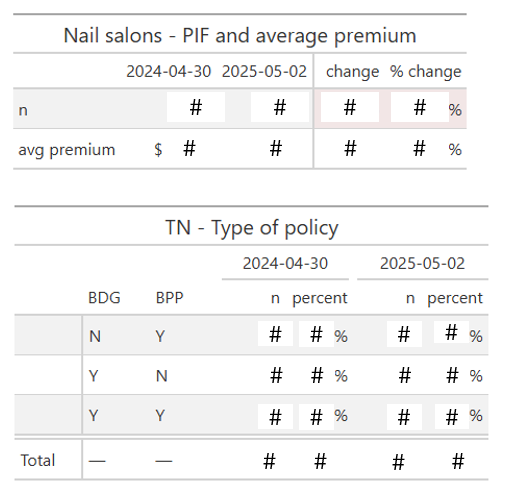
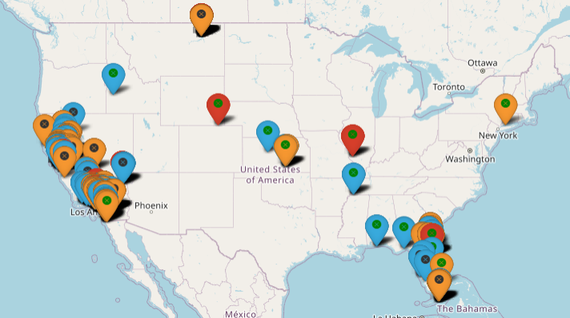
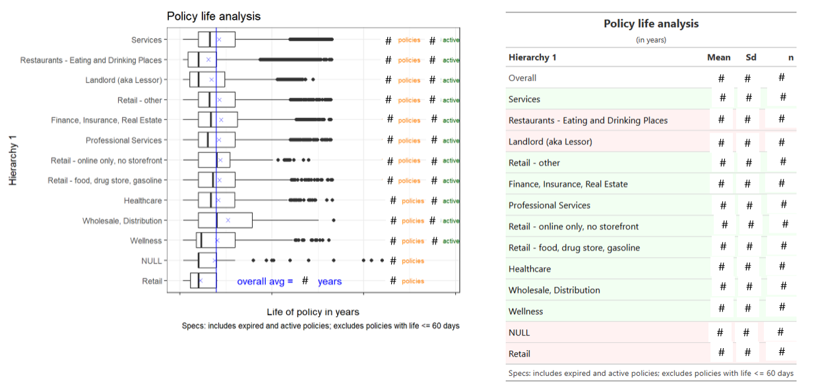
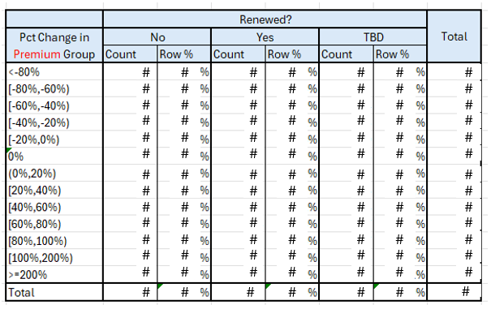
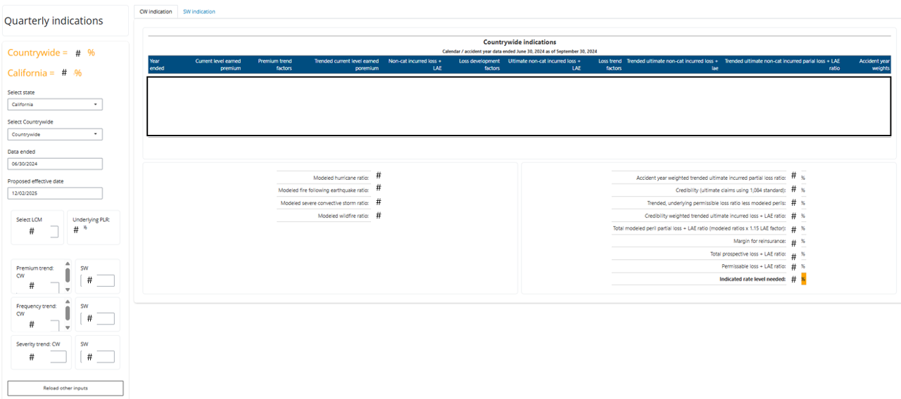

### ---- Load packages and define functions ----
library(tidyverse)
library(magrittr)
# define function to set close information to latest transaction where running case reserve is zero
set_claim_close_info <- function(df){
df %<>%
mutate(flag_nonzero_case_res_rsum = cumsum(case_res_rsum != 0)) %>%
mutate(.by = flag_nonzero_case_res_rsum,
row_id = row_number()) %>%
filter(flag_nonzero_case_res_rsum == max(flag_nonzero_case_res_rsum),
row_id == 2) %>%
mutate(claim_close = 1,
close_date = as.character.POSIXt(transaction_date),
.keep = "unused") %>% # just doesn't add rows if no data returned from previous step ==> claim_close = NA
{. ->> tmp} %>%
select(starts_with("transaction"), claim_close) %>%
right_join(df, by = join_by(transaction_id)) %>%
mutate(claim_close = ifelse(is.na(claim_close), 0, claim_close),
close_date = ifelse(is_empty(tmp$close_date), NA, tmp$close_date)) %>%
arrange(transaction_date, transaction_id) %>%
relocate(transaction_id, .before = transaction_date) %>%
relocate(close_date, .after= loss_date) %>%
relocate(claim_close, .after = transaction_date)
return(df)
}
### ---- Load data: SQL ----
# establish connection
con <- DBI::dbConnect(odbc::odbc(),
Driver = "SQL Server",
Server = "XXXXXXXXX\\XXXXXXX",
trusted_connection = TRUE)
# run queries to get raw data from AS400
# -> MTD claims data
data_claims_mtd_raw <- DBI::dbGetQuery(con, "select * from pricing.CLT.tiering_analysis_BPCLM_raw") %>%
janitor::clean_names() %>%
mutate(data_pull_date = ymd(data_pull_date),
peril_code = trimws(peril_code))
# -> transactional claims data
data_claims_tr_raw <- DBI::dbGetQuery(con, "select * from pricing.CLT.tiering_analysis_BPCLMTR_raw") %>%
janitor::clean_names() %>%
mutate(data_pull_date = data_pull_date %>% as.character.POSIXt %>% as.Date %>% ymd)
# close connection
DBI::dbDisconnect(con)
### ---- Modify transactional claims data ----
# modify transactional claims data
# -> calculate running sums (used to calculate indicators)
# -> calculate closing information
# -> summarize by claim
data_claims_tr <- data_claims_tr_raw %>%
mutate(.by = c(data_pull_date, policy_number, claim_no),
across(c(paid_loss, salv, subr, case_res, alae_paid, alae_rec, alae_res),
~ round(cumsum(.x), 5),
.names = "{.col}_rsum")
) %>%
group_by(data_pull_date, policy_number, claim_no) %>%
group_modify(~ set_claim_close_info(.x)) %>%
ungroup() %>%
mutate(claim_cwp = ifelse(claim_close == 1 & paid_loss_rsum - salv_rsum - subr_rsum > 0, 1, 0),
claim_cwop = ifelse(claim_close == 1 & paid_loss_rsum - salv_rsum - subr_rsum <= 0, 1, 0)) %>%
summarize(.by = c(data_pull_date, policy_number, company, state, claim_no, iso_code),
across(c(ends_with("date"), -transaction_date), max),
last_transaction_date = max(transaction_date),
across(c(claim_close, claim_cwp, claim_cwop, paid_loss, salv, subr, case_res, alae_paid, alae_rec, alae_res), ~ round(sum(.x), 5)))
### ---- Join data ----
# join claims datasets
# -> data checks passed (only recent claim activity was different in terms of the financials)
# --> so only keeping financial data from one source (OPEU123/6 rather than Majesco) and for non-close dates
# --> but using Majesco as primary source for claim count data
data_claims <- data_claims_mtd_raw %>%
full_join(data_claims_tr, by = join_by(pol_num == policy_number, claim_num == claim_no)) %>%
# mutate(check_paid_loss = paid_loss - mtd_paid_loss,
# check_salv = salv - mtd_salv,
# check_subr = subr - mtd_subr,
# check_case_res = case_res - mtd_case_res,
# check_alae_paid = alae_paid - mtd_alae_paid,
# check_alae_res = alae_res - mtd_alae_res,
# check_inc_loss = round(mtd_paid_loss - mtd_salv - mtd_subr + mtd_case_res - mtd_inc_loss, 5),
# check_loss_date = loss_date - ymd(as.Date(acc_date)),
# check_rep_date = ymd(as.Date(rep_date)) - reported_date)
mutate(pol_state = ifelse(!is.na(pol_state), pol_state, state),
company = ifelse(!is.na(company.x), company.x, company.y),
term_eff_date = term_eff_date %>% as.character.POSIXt %>% as.Date %>% ymd,
acc_date = ifelse(!is.na(acc_date), acc_date, loss_date) %>% as.character.POSIXt %>% as.Date %>% ymd,
rep_date = ifelse(!is.na(rep_date), rep_date, reported_date) %>% as.character.POSIXt %>% as.Date %>% ymd,
close_date = close_date %>% as.character.POSIXt %>% as.Date %>% ymd,
last_transaction_date = last_transaction_date %>% as.character.POSIXt %>% as.Date %>% ymd,
claim_close = ifelse(!is.na(claim_close), claim_close, ifelse(mtd_case_res > 0, 0, 1)),
paid_loss_mtd = ifelse(!is.na(mtd_paid_loss), mtd_paid_loss, paid_loss),
salv_mtd = ifelse(!is.na(mtd_salv), mtd_salv, salv),
subr_mtd = ifelse(!is.na(mtd_subr), mtd_subr, subr),
case_res_mtd = ifelse(!is.na(mtd_case_res), mtd_case_res, case_res),
alae_paid_mtd = ifelse(!is.na(mtd_alae_paid), mtd_alae_paid, alae_paid),
alae_res_mtd = ifelse(!is.na(mtd_alae_res), mtd_alae_res, alae_res),
claim_cwp = ifelse(!is.na(claim_cwp), claim_cwp, ifelse(claim_close == 1 & paid_loss_mtd - salv_mtd - subr_mtd > 0, 1, 0)),
claim_cwop = ifelse(!is.na(claim_cwop), claim_cwop, ifelse(claim_close == 1 & paid_loss_mtd - salv_mtd - subr_mtd <= 0, 1, 0))) %>%
select(pol_num, claim_num, company, pol_state, term_eff_date, acc_date, rep_date, close_date, last_transaction_date, iso_code, peril_code, claim_close, claim_cwp, claim_cwop, orig_loss_res_mtd = mtd_orig_loss_res, paid_loss_mtd, salv_mtd, subr_mtd, case_res_mtd, alae_paid_mtd, alae_rec_mtd = alae_rec, alae_res_mtd) %>%
mutate(data_pull_date = unique(data_claims_mtd_raw$data_pull_date), # not sure why pulling the date from either data source isn't working, just assuming both pulled same day
peril_code = case_when(
peril_code %in% c("HAIL", "LIGHTNING", "WIND") ~ "WIND",
is.na(peril_code) ~ "NOT_RECORDED",
peril_code == "" ~ "NOT_RECORDED",
.default = peril_code
)) %>%
filter(year(last_transaction_date) >= 2015) # last 10 years of data
# save and write results
save(data_claims, file = "RData\\data_claims.RData")
# write to csv so can upload flat file into sql
# -> just file and save as .xlsx into 'Colton Analyses' folder for David
write_csv(data_claims, file = "Excel data\\data_claims.csv", na = "")
### ---- Actuarially modify claims data ----
# load data with calculated term IDs
load("RData\\data_claims.RData")
# remove missing data claims
data_claims %<>%
filter(!is.na(paid_loss_mtd))
# look at CAT claims
data_claims_cat <- data_claims %>%
filter(!is.na(iso_code))
# remove CATs
data_claims_non_cats <- data_claims %>%
filter(is.na(iso_code))
# read in LDFs
# -> source: in 'Indications q4 2024 eval q1 2025.xlsx'
# -> NOTE: these are non-CAT LDFs
data_ldfs <- list()
data_ldfs$incurred_loss <- readxl::read_xlsx(path = "LDFs.xlsx",
sheet = "incurred_loss")
data_ldfs$incurred_claim_count <- readxl::read_xlsx(path = "LDFs.xlsx",
sheet = "incurred_claim_count")
# -> reformat
data_ldfs %<>%
map(function(df) {
df %>%
pivot_longer(cols = everything(), names_to = "age_to_age", values_to = "ldf") %>%
mutate(age_to_age = str_sub(age_to_age, start = 5, -1) %>% str_replace(., "_to_", ":"),
row_id = row_number()) %>%
arrange(desc(row_id)) %>%
mutate(cdf = cumprod(ldf)) %>%
rowwise() %>%
mutate(age = age_to_age %>% str_sub(1, str_locate(., ":") - 1) %>% .[1] %>% as.numeric) %>%
ungroup %>%
arrange(row_id) %>%
select(-row_id)
})
# develop claims to ultimate individually
# -> calculate age (rounded to the nearest 3 month period (i.e. quarter))
# -> as-of-date is the start of the future policy period (described below)
as_of_date_age <- "2025-11-03" %>% ymd %>% add(months(1)) %>% {paste(year(.), month(.), "1", sep = "-")} %>% ymd
data_claims_non_cats_ult <- data_claims_non_cats %>%
mutate(age = interval(acc_date, as_of_date_age) %>% divide_by(months(1)) %>% as.numeric %>% divide_by(3) %>% ceiling %>% multiply_by(3)) %>%
rowwise %>%
mutate(age_join = min(age, max(data_ldfs$incurred_loss$age))) %>%
ungroup %>%
left_join(data_ldfs$incurred_loss %>% select(age, cdf_incurred_loss = cdf), by = join_by(age_join == age)) %>%
left_join(data_ldfs$incurred_claim_count %>% select(age, cdf_incurred_claim_count = cdf), by = join_by(age_join == age)) %>%
select(-age_join) %>%
rowwise %>%
mutate(incurred_loss = sum(paid_loss_mtd, case_res_mtd, alae_paid_mtd, alae_res_mtd, na.rm = TRUE) - sum(salv_mtd, subr_mtd, alae_rec_mtd, na.rm = TRUE),
incurred_claim_count = sum(claim_close, 1 - claim_close), # add close and open claim counts ==> results in 1 for every record cause we have data at claim level
ult_incurred_loss = round(incurred_loss * cdf_incurred_loss, 2),
ult_claim_count = round(incurred_claim_count * cdf_incurred_claim_count, 5)) %>%
ungroup
# trend claims individually
# -> trend selects pulled from 'Indications q4 2024 eval q1 2025.xlsx' for MA
# -> future policy period = 12/01/2025 - 12/01/2026 ==> avg accident date = 12/01/2026
trend_freq <- -0.01868
trend_sev <- 0.08833
avg_acc_date_trend <- as_of_date_age %m+% years(1)
data_claims_non_cats_ult_trended <- data_claims_non_cats_ult %>%
mutate(loss_trend_factor = trend_freq %>% add(1) %>%
multiply_by(trend_sev %>% add(1)) %>%
raise_to_power(interval(acc_date, avg_acc_date_trend) / years(1)),
trended_ult_incurred_loss = round(ult_incurred_loss * loss_trend_factor, 2))
# cap large losses
data_claims_non_cats_ult_trended_capped <- data_claims_non_cats_ult_trended %>%
mutate(trended_ult_incurred_loss_capped = ifelse(trended_ult_incurred_loss > 100000, 100000, trended_ult_incurred_loss))
# reformat trended ult loss as by-peril
# -> calculate capped losses (still keeping original losses though)
# -> first aggregate over term effective date (i.e. policy period)
data_claims_non_cats_ult_trended_capped_by_peril <- data_claims_non_cats_ult_trended_capped %>%
summarize(.by = c(data_pull_date, pol_num, company, pol_state, term_eff_date, peril_code),
across(c(starts_with("trended_ult_incurred_loss"), incurred_claim_count), sum)) %>%
pivot_wider(names_from = peril_code, values_from = c(incurred_claim_count, trended_ult_incurred_loss, trended_ult_incurred_loss_capped)) %>%
rowwise %>%
mutate(incurred_claim_count = sum(`incurred_claim_count_OTHER`,
`incurred_claim_count_LIABILITY`,
`incurred_claim_count_WATERNONWEATHER`,
`incurred_claim_count_THEFT`,
`incurred_claim_count_WIND`,
`incurred_claim_count_WATERWEATHER`,
`incurred_claim_count_NOT_RECORDED`,
`incurred_claim_count_FIRE`,
`incurred_claim_count_HURRICANE`,
na.rm = TRUE),
.after = term_eff_date) %>%
ungroup %>%
rename_with(~ str_replace(.x, "trended_ult_incurred_loss_", "peril_"), starts_with("trended_ult_incurred_loss_")) %>%
rename_with(~ str_to_lower(.x), starts_with("peril_"))
# save results
save(data_claims_non_cats_ult_trended_capped_by_peril, file = "RData\\data_claims_non_cats_ult_trended_capped_by_peril.RData")
### ---- Load actuarially modified data: RData ----
# load data with calculated term IDs
load("RData\\data_claims_non_cats_ult_trended_capped_by_peril.RData")3.1 Stillwater
3.1.1 Tiering analysis - Claims
3.1.2 Tiering analysis - Exposure
### ---- Load packages and define functions ----
library(tidyverse)
library(magrittr)
# define function to modify exposure data
modify_exposure_data <- function(df_policy, df_expos) {
# split policy data based on if / when renewed with lapse
df_policy_split = df_policy %>%
nest_by(term_eff_month = month(term_eff_date), term_eff_day = day(term_eff_date))
# duplicate exposure data
# -> add term_num_id and corresponding term_eff_date
# -> calculate modified exposures
df_expos_dup_mod = df_policy_split %>%
mutate(data = map2(.x = list(data), .y = list(df_expos), \(df_p, df_expos, last_month_exposure_data) duplicate_rows(df_p, df_expos, last_month_expos_data = last_month_expos_data))) %>%
unnest(cols = data) %>%
ungroup %>%
calc_term_num_id %>%
left_join(df_policy %>% select(term_eff_date, cancel_date, term_num_id), by = join_by(term_num_id)) %>%
calc_modified_expos %>%
select(-c(term_eff_month, term_eff_day)) %>%
relocate(term_num_id, .before = term_month_id)
# add check for when modified exposure
df_expos_dup_mod %<>%
left_join(df_expos %>% select(calyr, calmth, exposyr) %>% rename(exposyr_orig = exposyr), by = join_by(calyr, calmth)) %>%
mutate(check = exposyr == exposyr_orig)
# correct exposures for cancel in first month of renewal term
last_row = df_expos_dup_mod %>% tail(n = 1)
nrows = nrow(df_expos_dup_mod)
if (nrows > 1 & last_row$term_month_id == 1 & !is.na(last_row$cancel_date) & month(last_row$cancel_date) == month(last_row$term_eff_date)) {
# get exposure info
# -> first have to reset exposyr to its original value (was portioned out wrong)
# -> modify total days based on cancellation date
expos_info = last_row %>% mutate(exposyr = exposyr_orig) %>% extract_expos_info()
expos_info$total_days = day(df_expos_dup_mod[nrows,"cancel_date"]$cancel_date) - 1
# portion out the 13 term_month_id (if it gets there)
df_expos_dup_mod[nrows-1,"exposyr"] = expos_info %>% {round(.$days_of_coverage / .$total_days * .$original_exposyr, 5)}
# portion out the 1 term_month_id
df_expos_dup_mod[nrows,"exposyr"] = expos_info %>% {round((.$total_days - .$days_of_coverage) / .$total_days * .$original_exposyr, 5)}
}
return(df_expos_dup_mod)
}
# define second function to correctly duplicate rows
duplicate_rows <- function(df_p, df_expos, last_month_expos_data) {
# define endpoints of time interval
begin_year = min(df_p$term_eff_date) %>% year
begin_month = min(df_p$term_eff_date) %>% month
end_year = max(df_p$term_exp_date) %>% year
end_month = ifelse(day(max(df_p$term_exp_date)) == 1, max(df_p$term_exp_date) %m-% months(1) %>% month, max(df_p$term_exp_date) %>% month)
# get exposure data within interval of interest
# -> also add common variables for next step
df_e = df_expos %>%
mutate(row_id_total = row_number(),
nrows_total = max(row_id_total)) %>%
filter(between(calyr, begin_year, end_year)) %>%
mutate(keep = case_when(
calyr == begin_year & calmth < begin_month ~ FALSE,
calyr == begin_year & calmth >= begin_month ~ TRUE,
between(calyr, begin_year + 1, end_year - 1) ~ TRUE,
calyr == end_year & calmth <= end_month ~ TRUE,
calyr == end_year & calmth > end_month ~ FALSE
)) %>%
filter(keep) %>%
select(-keep) %>%
mutate(orig_eff_year = year(min(df_p$term_eff_date)),
last_eff_year = year(max(df_p$term_eff_date)),
term_eff_month = month(min(df_p$term_eff_date)),
term_eff_day = day(min(df_p$term_eff_date)),
row_id_subset = row_number(),
nrows_subset = max(row_id_subset))
if (day(min(df_p$term_eff_date)) != 1) {
# conditionally duplicate partial months
# -> then reassign subset assign row ID and nrows_subset
df_e_dup = df_e %>%
{. ->> tmp} %>%
bind_rows(tmp %>% filter(calmth == term_eff_month, term_eff_day != 1, between(row_id_subset, 2, nrows_subset-1))) %>% # -> duplicate records for "interim" ending partial months of the subset of rows
bind_rows(tmp %>% filter(calmth == term_eff_month, term_eff_day != 1, nrows_total > 1, row_id_total == nrows_total, last_eff_year == year(pmaccndte), term_eff_month == month(pmaccndte))) %>% # -> duplicate records for cancel first month of renewal term (but not cancel first month of original term)
bind_rows(tmp %>% filter(last_eff_year == year(Sys.Date()), term_eff_month == last_month_expos_data, term_eff_day != 1, row_id_total == nrows_total, nrows_total != 1)) %>% # -> duplicate for renew in last month of exposure data
arrange(calyr, calmth) %>%
mutate(row_id_subset = ifelse(orig_eff_year >= 2013, row_number(), ifelse(term_eff_month == 1, row_number() + 13 - term_eff_month + 1, row_number() + 13 - term_eff_month)), # correct for policies that are mid-term when 2013-01-01 gets here
nrows_subset = max(row_id_subset),
term_month_id = case_when(
leap_year(orig_eff_year) & term_eff_month == 2 & term_eff_day == 29 & row_id_subset %% 13 != 0 ~ row_id_subset %% 13,
leap_year(orig_eff_year) & term_eff_month == 2 & term_eff_day == 29 & row_id_subset %% 13 == 0 ~ 13,
row_id_subset %% 13 != 0 ~ row_id_subset %% 13,
row_id_subset %% 13 == 0 ~ 13
)
)
} else {
# don't need to duplicate any rows
# -> reassign subset row ID
df_e_dup = df_e %>%
mutate(row_id_subset = ifelse(orig_eff_year >= 2013, row_number(), ifelse(term_eff_month == 1, row_number() + 13 - term_eff_month + 1, row_number() + 13 - term_eff_month)), # correct for policies that are mid-term when 2013-01-01 gets here
nrows_subset = max(row_id_subset),
term_month_id = case_when(
row_id_subset %% 12 != 0 ~ row_id_subset %% 12,
row_id_subset %% 12 == 0 ~ 12)
)
}
# combine results
df_e_dup %<>%
select(-c(starts_with("row_id_"), starts_with("nrows_"), orig_eff_year, last_eff_year, term_eff_month, term_eff_day))
return(df_e_dup)
}
# define function to calculate term_num_id
calc_term_num_id <- function(df_expos_dup) {
# initialize
term_num_id = c()
term_num_id_counter = 0
for (i in 1:nrow(df_expos_dup)) {
# increase counter when term restarts
term_num_id_counter = ifelse(df_expos_dup[i,"term_month_id"] == 1, term_num_id_counter + 1, term_num_id_counter)
# set new term number
term_num_id[i] = term_num_id_counter
}
# add term_num_id
df_expos_dup %<>%
bind_cols(term_num_id = term_num_id)
return(df_expos_dup)
}
# define function to extract needed exposure information for a record
extract_expos_info <- function(df_e_dup_i) {
# calculate needed values
begin_of_month = make_date(df_e_dup_i$calyr, df_e_dup_i$calmth, 1)
begin_of_next_month = begin_of_month %m+% months(1)
# create named list
# -> endpoints, calculated number of days in the month of interest, set original exposure
results = list("begin_of_month" = begin_of_month,
"begin_of_next_month" = begin_of_next_month,
"total_days" = interval(begin_of_month, begin_of_next_month) / days(1),
"original_exposyr" = df_e_dup_i$exposyr,
"days_of_coverage" = day(df_e_dup_i$term_eff_date) - 1)
return(results)
}
# define function to calculate modified exposures
# -> input needs to have term_num_id added already
calc_modified_expos <- function(df_expos_dup) {
# conditionally portion out exposures
df_expos_dup_mod = df_expos_dup %>%
nest_by(term_num_id) %>%
mutate(data = map2(.x = list(data), .y = term_num_id, function(df_e_dup, term_num_id, num_terms = max(.$term_num_id)) {
if (term_num_id == 1) { # first_term_num_id
if (year(df_e_dup[1,"pmoeffdte"]$pmoeffdte) < 2015) {
# conditionally portion out the 1 term_month_id for older policies
# -> back out starting exposures from prior terms that aren't in the policy data
expos_info = extract_expos_info(df_e_dup[1,])
df_e_dup[1,"exposyr"] = expos_info %>% {round((.$total_days - .$days_of_coverage) / .$total_days * .$original_exposyr, 5)}
}
# only portion out if it gets there and if there are multiple terms
if (nrow(df_e_dup) == 13 & num_terms != 1) {
# portion out the 13 term_month_id
expos_info = extract_expos_info(df_e_dup[13,])
df_e_dup[13,"exposyr"] = expos_info %>% {round(.$days_of_coverage / .$total_days * .$original_exposyr, 5)}
}
} else if (between(term_num_id, 2, num_terms - 1)) { # middle term_num_ids
# portion out the 1 term_month_id
expos_info = extract_expos_info(df_e_dup[1,])
df_e_dup[1,"exposyr"] = expos_info %>% {round((.$total_days - .$days_of_coverage) / .$total_days * .$original_exposyr, 5)}
if (nrow(df_e_dup) == 13) {
# portion out the 13 term_month_id (if it gets there)
expos_info = extract_expos_info(df_e_dup[13,])
df_e_dup[13,"exposyr"] = expos_info %>% {round(.$days_of_coverage / .$total_days * .$original_exposyr, 5)}
}
} else { # last term_num_id
# portion out the 1 term_month_id
expos_info = extract_expos_info(df_e_dup[1,])
df_e_dup[1,"exposyr"] = expos_info %>% {round((.$total_days - .$days_of_coverage) / .$total_days * .$original_exposyr, 5)}
}
return(df_e_dup)
})) %>%
unnest(cols = data) %>%
ungroup
return(df_expos_dup_mod)
}
### ---- Load data: SQL ----
# establish connection
con <- DBI::dbConnect(odbc::odbc(),
Driver = "SQL Server",
Server = "sql22-jax\\pricing",
trusted_connection = TRUE)
# run query for policy data
# -> already worked with and finalized data in SSMS
data_policy <- DBI::dbGetQuery(con, "select * from pricing.CLT.tiering_analysis_BPPOL") %>%
janitor::clean_names() %>%
mutate(data_pull_date = data_pull_date %>% as.character.POSIXt %>% as.Date %>% ymd,
across(c(term_num_id, term_premium, term_fees, ends_with("loi"), ends_with("ded"), ends_with("lmiit"), payroll, adv_qt_days, num_sw_pols), as.numeric),
across(c(ends_with("date"), -data_pull_date), mdy),
data_pull_date = data_pull_date %>% as.character.POSIXt %>% as.Date %>% ymd) %>%
rename(policy_data_pull_date = data_pull_date) %>%
filter(year(term_eff_date) >= 2015) %>% # last 10 years of data
mutate(.by = pol_num,
term_num_id = row_number()) %>% # reassign term_num_id for better match to exposure data (i.e. starting anew at 2015/01/01)
arrange(pol_num, term_num_id)
# close connection
DBI::dbDisconnect(con)
### ---- Load data: Databricks ----
# establish connection
# --> !!! NEED TO HAVE .Renviron setup
con <- DBI::dbConnect(
odbc::databricks(),
httpPath = "/sql/1.0/warehouses/XXXXXXXXXXXXXXXX",
)
# run query
data_expos_raw <- DBI::dbGetQuery(con,
"select *
from database.calmonth_exposure -- exposure file
where left(PMPRFX,2) in ('BC','BP','CM','CZ','XC','ZC', 'ZP')
order by POLNO, CALYR, CALMTH
--limit 100
") %>%
janitor::clean_names() %>%
select(-c(pmprfx, pmplnr)) %>%
mutate(pmaccndte = pmaccndte %>% as.character.POSIXt %>% as.Date %>% ymd,
across(c(calyr, calmth), as.numeric)) %>% # removes cancels dates of 01/01/0001
mutate(data_pull_date = ymd(Sys.Date()), .before = 1) %>%
filter(year(pmteffdte) >= 2015) %>% # last 10 years of data
filter(month(pmoeffdte) == month(pmteffdte)) %>% # filter out renew with lapse in different month (too difficult and nest_by() messes up the order for Dec to Jan policies)
filter(!(leap_year(pmoeffdte) & month(pmoeffdte) == 2 & day(pmoeffdte) == 29)) # filter out policies written on leap day (nest_by() messes up the order)
# close connection
DBI::dbDisconnect(con)
# save raw data so don't have to rerun in new month
save(data_expos_raw, file = "RData\\data_expos_raw.RData")
### ---- Modify exposure data ----
# load raw exposure data
load("RData\\data_expos_raw.RData")
# create combined nested dataset of policy and exposure information
# -> only want policies with exposure data
last_month_expos_data <- 10
tictoc::tic()
data_policy_expos <- data_policy %>%
nest_by(pol_num, .keep = TRUE) %>%
rename(data_policy = data) %>%
inner_join(data_expos_raw %>% nest_by(polno, .keep = TRUE) %>% rename(data_expos = data), by = join_by(pol_num == polno)) %>%
mutate(data_expos = map2(.x = list(data_policy), .y = list(data_expos), \(df_policy, df_expos) modify_exposure_data(df_policy, df_expos)))
tictoc::toc()
# save results
save(data_policy_expos, file = "RData\\data_policy_expos.RData")
### ---- Create final datsets ----
# load combined nested dataset of policy and exposure information
load("RData\\data_policy_expos.RData")
# get modified exposure data
data_expos <- data_policy_expos %>%
select(-data_policy) %>%
unnest(data_expos) %>%
ungroup %>%
relocate(data_pull_date, .before = 1) %>%
select(-polno)
# save results
save(data_expos, file = "RData\\data_expos.RData")
# get policy data that matches the exposure data
data_policy_matched <- data_policy_expos %>%
select(-data_expos) %>%
mutate(data_policy = map(.x = list(data_policy), \(df) select(df, -pol_num))) %>%
unnest(data_policy) %>%
ungroup %>%
relocate(policy_data_pull_date, .before = 1)
# save results
save(data_policy_matched, file = "RData\\data_policy_matched.RData")
### ---- Load data: RData ----
# load combined nested dataset of policy and exposure information
load("RData\\data_policy_expos.RData")
# load modified exposure data
load("RData\\data_expos.RData")
# load matched policy data
load("RData\\data_policy_matched.RData")3.1.3 Tiering analysis - Combined
### ---- Load packages and define functions ----
library(tidyverse)
library(magrittr)
# define function to summarize exposures by grouping variables univariately
summarize_exposures <- function(df){
results = list()
for (i in 1:(ncol(df)-2)) {
tmp = df %>%
select(all_of(i), exposyr, earned_premium_with_fees_trended) %>%
summarize(.by = 1,
exposyr = sum(exposyr, na.rm = TRUE),
earned_premium_with_fees_trended = sum(earned_premium_with_fees_trended, na.rm = TRUE)) %>%
arrange(desc(exposyr))
results[[i]] = tmp
}
names(results) = colnames(df %>% select(-c(exposyr, earned_premium_with_fees_trended)))
return(results)
}
### ---- Load data: RData ----
# load matched policy data
load("RData\\data_policy_matched.RData")
# load trended, ult summarized claim data
load("RData\\data_claims_non_cats_ult_trended_capped_by_peril.RData")
# load modified exposure data
load("RData\\data_expos.RData")
### ---- Recode premium data ----
# recode data to levels of tiering variables
data_policy_matched_lvls <- data_policy_matched %>%
mutate(across(starts_with("claim_type_"),
~ case_when(
.x %in% c("RIOT","HAIL","LIGHT","VMM","WEATH","WIND") ~ 1,
is.na(.x) ~ 0,
.default = 2
)),
credit_range = case_when(
credit_score == 0 ~ "No Score",
credit_score <= 582 ~ "582 or Less",
credit_score <= 596 ~ "583 - 596",
credit_score <= 609 ~ "597 - 609",
credit_score <= 622 ~ "610 - 622",
credit_score <= 635 ~ "623 - 635",
credit_score <= 645 ~ "636 - 645",
credit_score <= 654 ~ "646 - 654",
credit_score <= 663 ~ "655 - 663",
credit_score <= 672 ~ "664 - 672",
credit_score <= 681 ~ "673 - 681",
credit_score <= 689 ~ "682 - 689",
credit_score <= 696 ~ "690 - 696",
credit_score <= 704 ~ "697 - 704",
credit_score <= 711 ~ "705 - 711",
credit_score <= 717 ~ "712 - 717",
credit_score <= 722 ~ "718 - 722",
credit_score <= 728 ~ "723 - 728",
credit_score <= 734 ~ "729 - 734",
credit_score <= 740 ~ "735 - 740",
credit_score <= 745 ~ "741 - 745",
credit_score <= 750 ~ "746 - 750",
credit_score <= 758 ~ "751 - 758",
credit_score <= 764 ~ "759 - 764",
credit_score <= 771 ~ "765 - 771",
credit_score <= 777 ~ "772 - 777",
credit_score <= 786 ~ "778 - 786",
credit_score <= 794 ~ "787 - 794",
credit_score <= 802 ~ "795 - 802",
credit_score <= 810 ~ "803 - 810",
credit_score <= 828 ~ "811 - 828",
credit_score <= 845 ~ "829 - 845",
credit_score <= 862 ~ "846 - 862",
credit_score <= 879 ~ "863 - 879",
credit_score >= 880 ~ "880 or More",
) %>% factor(levels = c("582 or Less","583 - 596","597 - 609","610 - 622","623 - 635","636 - 645","646 - 654",
"655 - 663","664 - 672","673 - 681","682 - 689","690 - 696","697 - 704","705 - 711",
"712 - 717","718 - 722","723 - 728","729 - 734","735 - 740","741 - 745","746 - 750",
"751 - 758","759 - 764","765 - 771","772 - 777","778 - 786","787 - 794","795 - 802",
"803 - 810","811 - 828","829 - 845","846 - 862","863 - 879","880 or More", "No Score"), ordered = TRUE),
credit_range2 = case_when(
credit_range %in% c("582 or Less","583 - 596") ~ "596 or Less",
credit_range %in% c("597 - 609","610 - 622") ~ "597 - 622",
credit_range %in% c("623 - 635","636 - 645") ~ "623 - 645",
credit_range %in% c("646 - 654","655 - 663") ~ "646 - 663",
credit_range %in% c("664 - 672","673 - 681") ~ "664 - 681",
credit_range %in% c("682 - 689","690 - 696") ~ "682 - 696",
credit_range %in% c("697 - 704","705 - 711") ~ "697 - 711",
credit_range %in% c("712 - 717","718 - 722") ~ "712 - 722",
credit_range %in% c("723 - 728","729 - 734") ~ "723 - 734",
credit_range %in% c("735 - 740","741 - 745") ~ "735 - 745",
credit_range %in% c("746 - 750","751 - 758") ~ "746 - 758",
credit_range %in% c("759 - 764","765 - 771") ~ "759 - 771",
credit_range %in% c("772 - 777","778 - 786") ~ "772 - 786",
credit_range %in% c("787 - 794","795 - 802") ~ "787 - 802",
credit_range %in% c("803 - 810","811 - 828") ~ "803 - 828",
credit_range %in% c("829 - 845","846 - 862") ~ "829 - 862",
credit_range %in% c("863 - 879","880 or More") ~ "863 or More",
credit_range == "No Score" ~ "No Score",
.default = credit_range
) %>% factor(levels = c("596 or Less","597 - 622","623 - 645","646 - 663","664 - 681","682 - 696","697 - 711",
"712 - 722","723 - 734","735 - 745","746 - 758","759 - 771","772 - 786","787 - 802",
"803 - 828","829 - 862","863 or More","No Score"), ordered = TRUE),
years_in_business = case_when(
year_bus_start == 0 ~ NA,
year(term_eff_date) - year_bus_start <= 9 ~ as.character(year(term_eff_date) - year_bus_start),
year(term_eff_date) - year_bus_start >= 10 ~ "10 or More"
) %>% factor(levels = c(paste(0:9), "10 or More"), ordered = TRUE),
age_of_building = case_when(
year_built == 0 ~ "Unknown",
year(term_eff_date) - year_built <= 2 ~ "0-2",
year(term_eff_date) - year_built <= 10 ~ as.character(year(term_eff_date) - year_built),
year(term_eff_date) - year_built <= 12 ~ "11-12",
year(term_eff_date) - year_built <= 15 ~ "13-15",
year(term_eff_date) - year_built <= 17 ~ "16-17",
year(term_eff_date) - year_built <= 20 ~ "18-20",
year(term_eff_date) - year_built <= 24 ~ "21-24",
year(term_eff_date) - year_built <= 29 ~ "25-29",
year(term_eff_date) - year_built <= 33 ~ "30-33",
year(term_eff_date) - year_built <= 44 ~ "34-44",
year(term_eff_date) - year_built <= 49 ~ "45-49",
year(term_eff_date) - year_built <= 59 ~ "50-59",
year(term_eff_date) - year_built <= 74 ~ "60-74",
year(term_eff_date) - year_built <= 99 ~ "75-99",
year(term_eff_date) - year_built >= 100 ~ "100 or More",
.default = "Unknown"
) %>% factor(levels = c("0-2",paste(3:10),"11-12","13-15","16-17","18-20","21-24","25-29","30-33",
"34-44","45-49","50-59","60-74","75-99","100 or More","Unknown"), ordered = TRUE),
age_of_roof = case_when(
roof_year == 0 ~ "Unknown",
year(term_eff_date) - roof_year <= 39 ~ as.character(year(term_eff_date) - roof_year),
year(term_eff_date) - roof_year >= 40 ~ "40 or More",
.default = "Unknown"
) %>% factor(levels = c(paste(0:39),"40 or More","Unknown"), ordered = TRUE),
roof_type = case_when(
str_to_lower(roof_type) %in% c("asphault shingle","as","shingle","asphalt comp roll","comp roll","comp","comp toll","composition") ~ "asphalt shingle",
str_to_lower(roof_type) %in% c("tile, slate, stone","tile") ~ "tile",
str_to_lower(roof_type) %in% c("rubber","rubber membrane","membrane") ~ "synthetic",
str_to_lower(roof_type) %in% c("tar, tar and gravel","tar & gravel","t&g","t & g") ~ "tar and gravel",
str_to_lower(roof_type) %in% c("thermo-plastic membrane","thermo plastic") ~ "TPO",
str_to_lower(roof_type) == "plastic membrane" ~ "EPDM",
str_to_lower(roof_type) == "concrete" ~ "other",
str_to_lower(roof_type) %in% c("1","flat","gable","") ~ "unknown",
.default = str_to_lower(roof_type)
),
num_empl = case_when(
num_empl == 0 ~ "Missing",
num_empl <= 3 ~ "1-3",
num_empl <= 6 ~ "4-6",
num_empl <= 12 ~ "7-12",
num_empl >= 13 ~ "13 or More",
.default = "Missing"
) %>% factor(levels = c("Missing","1-3","4-6","7-12","13 or More"), ordered = TRUE),
num_sw_pols = case_when(
num_sw_pols <= 3 ~ as.character(num_sw_pols),
num_sw_pols >= 4 ~ "4 or More",
.default = NA
) %>% factor(levels = c(paste(1:3),"4 or More"), ordered = TRUE),
adv_qt_days = case_when(
adv_qt_days <= 14 ~ "0-14",
adv_qt_days <= 30 ~ "15-30",
adv_qt_days >= 31 ~ "31 or More",
.default = "Missing"
) %>% factor(levels = c("Missing","0-14","15-30","31 or More"), ordered = TRUE)
) %>%
mutate(prior_loss_history_points = claim_type_1 + claim_type_2 + claim_type_3 + claim_type_4 + claim_type_5)
### ---- Combine data ----
# combine policy and claim data
# -> don't need the tiering info now, will join back on after aggregating
data_combined <- data_policy_matched_lvls %>%
select(policy_data_pull_date, pol_num, trans_type, term_num_id, pol_state, orig_eff_date, term_eff_date, term_exp_date, cancel_date, pol_status, expos_base, bdg_loi, bpp_loi, sales, payroll, term_premium, term_fees) %>%
left_join(data_claims_non_cats_ult_trended_capped_by_peril %>% select(-c(company, pol_state))%>% rename(claims_data_pull_date = data_pull_date), by = join_by(pol_num == pol_num, term_eff_date == term_eff_date))
# combine policy and exposure data
# -> zero out repeated premium and claim amounts
data_combined %<>%
filter(term_eff_date < ymd("2025-11-01")) %>% # don't have exposure data for the current month
left_join(data_expos %>% rename(expos_data_pull_date = data_pull_date) %>% select(-c(term_eff_date, cancel_date)), by = join_by(pol_num == pol_num, term_num_id == term_num_id)) %>%
select(policy_data_pull_date, expos_data_pull_date, pol_num, pol_state, company, poltyp, trans_type, term_num_id, term_month_id, orig_eff_date, term_eff_date, term_exp_date, cancel_date, pol_status, calyr, calmth,
term_premium, term_fees, exposyr, exposyr_orig, check, expos_base, bdg_loi, bpp_loi, sales, payroll,
claims_data_pull_date, starts_with("incurred_claim_count_"), starts_with("peril_")) %>%
mutate(.by = c(pol_num, term_num_id),
row_id = row_number(),
across(c(term_premium, term_fees, starts_with("incurred_claim_count_"), starts_with("peril_")),
~ case_when(
row_id == 1 ~ .x,
is.na(.x) ~ NA,
.default = 0
)
)
) %>%
select(-row_id) %>%
filter(!is.na(exposyr)) # real tiny amount of exposure data missing, not my fault
# save results
save(data_combined, file = "RData\\data_combined.RData")
# write to csv for Karen to check trending
write_csv(data_combined, "Excel data\\data_combined.csv", na = "")
### ---- Aggregate all data and trend premium data ----
# load combined data
load("RData\\data_combined.RData")
# aggregate data by policy number / term
# -> rolling up over pol_num and term_num_id
# -> !!!! ASSUMING this correction / data error (I'm done...)
# ---> missing beginning policy term ==> inflated first term exposyr
# ---> full last month of exposure when it shouldn't be
# -> calculate EP and add fees, and both written and earned exposures for property and liability
# --< !!! had approx 7800 policy terms with 0 exposure base (commercial landloards with no BPP), see notes below
data_combined_agg <- data_combined %>%
summarize(.by = c(pol_num,
term_num_id,
term_eff_date,
expos_base),
across(c(term_premium, term_fees, exposyr, bdg_loi, bpp_loi, sales, payroll, starts_with("incurred_claim_count_"), starts_with("peril_")),
~ round(sum(.x, na.rm = TRUE), 3))) %>%
mutate(exposyr = ifelse(exposyr > 1, 1, exposyr)) %>%
mutate(earned_premium_with_fees = round((term_premium + term_fees) * exposyr, 2),
term_premium_with_fees = term_premium + term_fees,
written_expos_property = (bdg_loi + bpp_loi) / 100,
written_expos_liability = case_when(
expos_base == "LOI" & bpp_loi != 0 ~ bpp_loi / 100,
expos_base == "LOI" & bpp_loi == 0 ~ sales / 1000, # executive decision, correcting for $0 exposure base data errors by using a different exposure base
expos_base == "SALES" & sales != 0 ~ sales / 1000,
expos_base == "SALES" & sales == 0 ~ bpp_loi / 100, # correcting ...
expos_base == "PAY" & payroll >= 1000 ~ payroll / 1000, # another executive decision, if less than 1000 of payroll, then set to missing
expos_base == "PAY" & payroll == 0 ~ sales / 1000 # correcting ...
),
earned_expos_property = round(written_expos_property * exposyr, 2),
earned_expos_liability = round(written_expos_liability * exposyr, 2)) %>%
select(pol_num, term_eff_date, term_num_id, term_premium_with_fees, earned_premium_with_fees, exposyr, contains("_expos_"), starts_with("incurred_claim_count_"), starts_with("peril_"))
# check
# (before simplifying assumption)
data_check <- data_combined_agg %>% filter(exposyr > 1.01)
# trend premiums individually
# -> trend select pulled from 'Indications q4 2024 eval q1 2025.xlsx' for MA
# -> as-of-date is the start of the future policy period (described below)
# -> future policy period = 12/01/2025 - 12/01/2026 ==> avg written date = 06/01/2026 and avg earned date = 12/01/2026
# --> written premium trend period length and earned premium trend period length should be the same (just minor differences due to timing of year)
as_of_date_age <- "2025-11-03" %>% ymd %>% add(months(1)) %>% {paste(year(.), month(.), "1", sep = "-")} %>% ymd
trend_premium <- 0.04259
avg_written_date_trend <- as_of_date_age %m+% months(6)
avg_earned_date_trend <- as_of_date_age %m+% years(1)
data_combined_agg %<>%
mutate(written_premium_trend_factor = trend_premium %>% add(1) %>%
raise_to_power(interval(term_eff_date, avg_written_date_trend) / years(1)),
earned_premium_trend_factor = trend_premium %>% add(1) %>%
raise_to_power(interval(term_eff_date %m+% months(6), avg_earned_date_trend) / years(1)),
term_premium_with_fees_trended = round(term_premium_with_fees * written_premium_trend_factor, 2),
earned_premium_with_fees_trended = round(earned_premium_with_fees * earned_premium_trend_factor, 2)) %>%
select(pol_num, term_eff_date, term_num_id, starts_with("term_premium_with"), starts_with("earned_premium_with"), written_premium_trend_factor, earned_premium_trend_factor, exposyr, contains("_expos_"), starts_with("incurred_claim_count_"), starts_with("peril_"))
# aggregate data by tiering variables
# -> calculate last tiering variable
# -> need one record for each combination of tiering variables
# -> in CA BOP UWG word doc, 6. Number of locations ==> this is always 1 (never built this in), so skipping
data_combined_agg_agg <- data_combined_agg %>%
left_join(data_policy_matched_lvls %>% select(pol_num, term_num_id, credit_range, prior_loss_history_points, years_in_business, age_of_building, age_of_roof, roof_type, num_empl, num_sw_pols, num_renewals, adv_qt_days, entity_type),
by = join_by(pol_num, term_num_id)) %>%
mutate(num_renewals = term_num_id - 1) %>%
summarize(.by = c(credit_range,
prior_loss_history_points,
years_in_business,
age_of_building,
age_of_roof,
roof_type,
num_empl,
num_sw_pols,
num_renewals,
adv_qt_days,
entity_type),
across(c(term_premium_with_fees_trended, earned_premium_with_fees_trended, exposyr, contains("_expos_"), starts_with("incurred_claim_count_"), starts_with("peril_")),
~ sum(.x, na.rm = TRUE)))
# repeat for credit_range2
data_combined_agg_agg2 <- data_combined_agg %>%
left_join(data_policy_matched_lvls %>% select(pol_num, term_num_id, credit_range2, prior_loss_history_points, years_in_business, age_of_building, age_of_roof, roof_type, num_empl, num_sw_pols, num_renewals, adv_qt_days, entity_type),
by = join_by(pol_num, term_num_id)) %>%
mutate(num_renewals = term_num_id - 1) %>%
summarize(.by = c(credit_range2,
prior_loss_history_points,
years_in_business,
age_of_building,
age_of_roof,
roof_type,
num_empl,
num_sw_pols,
num_renewals,
adv_qt_days,
entity_type),
across(c(term_premium_with_fees_trended, earned_premium_with_fees_trended, exposyr, contains("_expos_"), starts_with("incurred_claim_count_"), starts_with("peril_")),
~ sum(.x, na.rm = TRUE)))
# !!! some combinations have zero written liability exposure, don't think there's anything we can
# save results
save(data_combined_agg_agg, file = "RData\\data_combined_agg_agg.RData")
save(data_combined_agg_agg2, file = "RData\\data_combined_agg_agg2.RData")
# calculate univariate exposure and earned premium by tiering variable
summ_expos <- data_combined_agg_agg %>%
select(credit_range, prior_loss_history_points, years_in_business, age_of_building, age_of_roof, roof_type, num_empl, num_sw_pols, num_renewals, adv_qt_days, entity_type, exposyr, earned_premium_with_fees_trended) %>%
summarize_exposures %T>%
{names(.) ->> nms} %>%
map2(.x = names(.), .y = ., function(nm, df) {
total <- df %>%
summarize(across(all_of(2:3), ~ round(sum(.x, 2)))) %>%
mutate(var = "total",
.before = 1) %>%
rename(!!nm := var)
df %<>%
mutate(across(all_of(1), as.character)) %>%
bind_rows(total)
return(df)
})
names(summ_expos) <- nms
# < write to temporary csv and combine into single file, tiering-levels-exposure-premium.xlsx >
write_csv(summ_expos[[1]], "temp.csv")
### ---- Load and write final data: RData ----
# load interim data
load("RData\\data_combined.RData")
# load final data
load("RData\\data_combined_agg_agg.RData")
load("RData\\data_combined_agg_agg2.RData")
# write to xlsx (to avoid formatting errors) so can upload flat file into sql
openxlsx2::write_xlsx(data_combined_agg_agg, file = "Excel data\\data_combined_agg_agg.xlsx", na.strings = "NA")
openxlsx2::write_xlsx(data_combined_agg_agg2, file = "Excel data\\data_combined_agg_agg2.xlsx", na.strings = "NA")3.1.4 Analysis projects

### ---- Load packages ----
# load packages
library(tidyverse)
library(magrittr)
library(gt)
library(gtExtras)
### ---- Read in and organize data ----
# old inforce data
data_inforce_old <- readxl::read_xlsx(path = "InForce_20240430.xlsx") %>%
janitor::clean_names() %>%
mutate(date = ymd("2024-04-30"), .before = 1)
# new inforce data
data_inforce_new <- readxl::read_xlsx(path = "InForce_20250502.xlsx") %>%
janitor::clean_names() %>%
mutate(date = ymd("2025-05-02"), .before = 1)
# combine datsets
data_inforce_all <- data_inforce_old %>%
bind_rows(data_inforce_new)
# export for excel version of analysis
# data_inforce_all %>%
# openxlsx2::write_xlsx(file = "InForce_all.xlsx", na.strings = "")
# set highlight cutoff
hl_cutoff <- 0.10
# define shortcut for conditional highlighting
format_tbl_conditional_hl_changes <- function(x) {
x %>%
tab_style(
style = cell_fill(color = "red", alpha = 0.05),
locations = list(
cells_body(
columns = change,
rows = percent_change < -1 * hl_cutoff
),
cells_body(
columns = percent_change,
rows = percent_change < -1 * hl_cutoff
))
) %>%
tab_style(
style = cell_fill(color = "green", alpha = 0.05),
locations = list(
cells_body(
columns = change,
rows = percent_change > hl_cutoff
),
cells_body(
columns = percent_change,
rows = percent_change > hl_cutoff
))
)
}
### ---- Nail salons ----
# define function
format_liability_limits <- function(x) {
case_when(
x < 1e3 ~ as.character(x),
x < 1e6 ~ paste0(as.character(x/1e3), "K"),
x < 1e9 ~ paste0(as.character(x/1e6), "M"),
TRUE ~ "To be implemented..."
)
}
# save sub datasets
data_nails <- data_inforce_all %>%
filter(stillwater_class_description == "Nail Salon") %>%
mutate(across(c(occur_limit, aggregate_limit, premises_comp_ops_limit), format_liability_limits))
# a) How many PIF compared to same time last year?
# d) Average Premium change
data_nails %>%
group_by(date) %>%
summarize(n = n(),
mean_premium = mean(term_premium)) %>%
pivot_longer(2:3, names_to = "statistic") %>%
pivot_wider(names_from = 1) %>%
mutate(statistic = if_else(statistic == "mean_premium", "avg premium", statistic),
change = `2025-05-02` - `2024-04-30`,
percent_change = if_else(is.nan(change / `2024-04-30`) | is.infinite(change / `2024-04-30`), NA, change / `2024-04-30`)) %>%
gt() %>%
tab_header(title = "Nail salons - PIF and average premium") %>%
cols_label(statistic = "",
change = "change",
percent_change = "% change") %>%
fmt_number(rows = 1, columns = contains("-"), decimals = 0) %>%
fmt_currency(rows = 2, columns = contains("-"), decimals = 2) %>%
fmt_number(rows = 1, columns = change, decimals = 0, force_sign = TRUE) %>%
fmt_currency(rows = 2, columns = change, decimals = 2, force_sign = TRUE) %>%
fmt_percent(columns = percent_change, decimals = 1, force_sign = TRUE) %>%
format_tbl_conditional_hl_changes() %>%
gt_add_divider(columns = `2025-05-02`, color = "grey30")
# b) How many have the ISO Professional Liability coverage compared to last year?
data_nails %>%
count(date, pls_cov) %>%
mutate(.by = date,
percent = n / sum(n)) %>%
pivot_wider(names_from = date, values_from = c(n, percent)) %>%
select(1, contains("2024"), contains("2025")) %>%
gt() %>%
tab_header(title = "Nail salons - PLS cov") %>%
tab_spanner(columns = contains("2024"),
label = "2024-04-30") %>%
tab_spanner(columns = contains("2025"),
label = "2025-05-02") %>%
cols_label(pls_cov = "PLS cov",
starts_with("n") ~ "n",
starts_with("percent") ~ "percent") %>%
grand_summary_rows(columns = starts_with("n"),
fns = list(label = "Total", fn = "sum"),
fmt = ~ fmt_number(., decimals = 0)) %>%
grand_summary_rows(columns = starts_with("percent"),
fns = list(label = "Total", fn = "sum"),
fmt = ~ fmt_percent(., decimals = 1)) %>%
fmt_number(columns = starts_with("n"), decimals = 0) %>%
fmt_percent(columns = starts_with("percent"), decimals = 1)
# c) Distribution of limits compared to last year?
# i) Liability Limits
data_nails %>%
mutate(liability_limits = paste(occur_limit, aggregate_limit, premises_comp_ops_limit, sep = "/")) %>%
count(date, liability_limits) %>%
mutate(.by = date,,
percent = n / sum(n)) %>%
pivot_wider(names_from = date, values_from = c(n, percent)) %>%
select(1, contains("2024"), contains("2025")) %>%
gt() %>%
tab_header(title = "Nail salons - Liability limits") %>%
tab_spanner(columns = contains("2024"),
label = "2024-04-30") %>%
tab_spanner(columns = contains("2025"),
label = "2025-05-02") %>%
cols_label(liability_limits = "Liability limits",
starts_with("n") ~ "n",
starts_with("percent") ~ "percent") %>%
grand_summary_rows(columns = starts_with("n"),
fns = list(label = "Total", fn = "sum"),
fmt = ~ fmt_number(., decimals = 0)) %>%
grand_summary_rows(columns = starts_with("percent"),
fns = list(label = "Total", fn = "sum"),
fmt = ~ fmt_percent(., decimals = 1)) %>%
fmt_number(columns = starts_with("n"), decimals = 0) %>%
fmt_percent(columns = starts_with("percent"), decimals = 1)
# ii) BPP limits
breaks_pls <- c(-1,1,25000,50000,100000,1000000)
data_nails %>%
mutate(bpp_loi_group = cut(bpp_loi, breaks = breaks_pls, labels = c("0","(0,25k]","(25k,50k]","(50k,100k]",">100k"))) %>%
count(date, bpp_loi_group) %>%
mutate(.by = date,,
percent = n / sum(n)) %>%
pivot_wider(names_from = date, values_from = c(n, percent)) %>%
select(1, contains("2024"), contains("2025")) %>%
gt() %>%
tab_header(title = "Nail salons - BPP LOI") %>%
tab_spanner(columns = contains("2024"),
label = "2024-04-30") %>%
tab_spanner(columns = contains("2025"),
label = "2025-05-02") %>%
cols_label(bpp_loi_group = "BPP LOI",
starts_with("n") ~ "n",
starts_with("percent") ~ "percent") %>%
grand_summary_rows(columns = starts_with("n"),
fns = list(label = "Total", fn = "sum"),
fmt = ~ fmt_number(., decimals = 0)) %>%
grand_summary_rows(columns = starts_with("percent"),
fns = list(label = "Total", fn = "sum"),
fmt = ~ fmt_percent(., decimals = 1)) %>%
fmt_number(columns = starts_with("n"), decimals = 0) %>%
fmt_percent(columns = starts_with("percent"), decimals = 1)
### ---- Restaurants ----
# save sub datasets
# -> modified raw data for class descriptions to make part b easier
data_restaurants <- data_inforce_all %>%
filter(hierarchy_1 == "Restaurants, Eating and Drinking Places") %>%
mutate(stillwater_class_description_corrected_grouped = str_extract(stillwater_class_description_corrected, ".*(?=\\ -)"))
# a) How many PIF compared to same time last year?
# e) Average Premium change
data_restaurants %>%
group_by(date) %>%
summarize(n = n(),
mean_premium = mean(term_premium)) %>%
pivot_longer(2:3, names_to = "statistic") %>%
pivot_wider(names_from = 1) %>%
mutate(statistic = if_else(statistic == "mean_premium", "avg premium", statistic),
change = `2025-05-02` - `2024-04-30`,
percent_change = if_else(is.nan(change / `2024-04-30`) | is.infinite(change / `2024-04-30`), NA, change / `2024-04-30`)) %>%
gt() %>%
tab_header(title = "Restaurants - PIF") %>%
cols_label(change = "change",
percent_change = "% change") %>%
fmt_number(rows = 1, columns = contains("-"), decimals = 0) %>%
fmt_currency(rows = 2, columns = contains("-"), decimals = 2) %>%
fmt_number(rows = 1, columns = change, decimals = 0, force_sign = TRUE) %>%
fmt_currency(rows = 2, columns = change, decimals = 2, force_sign = TRUE) %>%
fmt_percent(columns = percent_change, decimals = 1, force_sign = TRUE) %>%
format_tbl_conditional_hl_changes() %>%
gt_add_divider(columns = `2025-05-02`, color = "grey30")
# b) Distribution among main restaurant classes?
# i) Asian, Pizza, Buffet, etc.
# find counts for all classes
data_restaurants_regrouped <- data_restaurants %>%
group_by(date, stillwater_class_description_corrected_grouped) %>%
summarize(n = n(),
mean_sales = mean(sales),
mean_premium = mean(term_premium)) %>%
ungroup() %>%
mutate(.by = date,
percent = n / sum(n),
.after = n) %>%
arrange(date, desc(n)) %>%
mutate(stillwater_class_description_corrected_grouped =
case_when(
n < 50 ~ "Other",
.default = stillwater_class_description_corrected_grouped
)
)
# create counts for summary other row
data_restaurants_regrouped_other <- data_restaurants_regrouped %>%
filter(stillwater_class_description_corrected_grouped == "Other") %>%
mutate(temp1 = n * mean_sales,
temp2 = n* mean_premium) %>%
group_by(date, stillwater_class_description_corrected_grouped) %>%
summarize(n = sum(n),
percent = sum(percent),
mean_sales = sum(temp1) / sum(n),
mean_premium = sum(temp2) / sum(n))
# define helper function
grouped_mean <- function(x, n) {
sum(x*n) / sum(n)
}
# create final table
data_restaurants_regrouped %>%
filter(stillwater_class_description_corrected_grouped != "Other") %>%
bind_rows(data_restaurants_regrouped_other) %>%
gt(groupname_col = "date") %>%
tab_header(title = "Restaurants - PIF, sales and premium by class") %>%
cols_label(stillwater_class_description_corrected_grouped = "class description",
mean_sales = "avg sales",
mean_premium = "avg premium") %>%
summary_rows(columns = n,
fns = list(id = "Total", fn = ~ sum(.x)),
fmt = ~ fmt_number(., decimals = 0)) %>%
summary_rows(columns = percent,
fns = list(id = "Total", fn = ~ sum(.x)),
fmt = ~ fmt_percent(., decimals = 1)) %>%
summary_rows(columns = mean_sales,
fns = list(id = "Total", fn = ~ grouped_mean(mean_sales, n)),
fmt = ~ fmt_currency(., decimals = 0)) %>%
summary_rows(columns = mean_premium,
fns = list(id = "Total", fn = ~ grouped_mean(mean_premium, n)),
fmt = ~ fmt_currency(., decimals = 0)) %>%
fmt_number(columns = n, decimals = 0) %>%
fmt_percent(columns = percent, decimals = 1) %>%
fmt_currency(columns = c(mean_sales, mean_premium), decimals = 0)
# ii) Alcohol percent distributions - Percent of policies with LQL
data_restaurants %>%
count(date, lql_cov) %>%
mutate(.by = date,
percent = n / sum(n)) %>%
pivot_wider(names_from = date, values_from = c(n, percent)) %>%
select(1, contains("2024"), contains("2025")) %>%
gt() %>%
tab_header(title = "Restaurants - LQL cov") %>%
tab_spanner(columns = contains("2024"),
label = "2024-04-30") %>%
tab_spanner(columns = contains("2025"),
label = "2025-05-02") %>%
cols_label(lql_cov = "LQL cov",
starts_with("n") ~ "n",
starts_with("percent") ~ "percent") %>%
grand_summary_rows(columns = starts_with("n"),
fns = list(label = "Total", fn = "sum"),
fmt = ~ fmt_number(., decimals = 0)) %>%
grand_summary_rows(columns = starts_with("percent"),
fns = list(label = "Total", fn = "sum"),
fmt = ~ fmt_percent(., decimals = 1)) %>%
fmt_number(columns = starts_with("n"), decimals = 0) %>%
fmt_percent(columns = starts_with("percent"), decimals = 1)
# c) Percent with Building coverage
data_restaurants %>%
count(date, bdg_cov) %>%
mutate(.by = date,
percent = n / sum(n)) %>%
pivot_wider(names_from = date, values_from = c(n, percent)) %>%
select(1, contains("2024"), contains("2025")) %>%
gt() %>%
tab_header(title = "Restaurants - BDG cov") %>%
tab_spanner(columns = contains("2024"),
label = "2024-04-30") %>%
tab_spanner(columns = contains("2025"),
label = "2025-05-02") %>%
cols_label(bdg_cov = "BDG cov",
starts_with("n") ~ "n",
starts_with("percent") ~ "percent") %>%
grand_summary_rows(columns = starts_with("n"),
fns = list(label = "Total", fn = "sum"),
fmt = ~ fmt_number(., decimals = 0)) %>%
grand_summary_rows(columns = starts_with("percent"),
fns = list(label = "Total", fn = "sum"),
fmt = ~ fmt_percent(., decimals = 1)) %>%
fmt_number(columns = starts_with("n"), decimals = 0) %>%
fmt_percent(columns = starts_with("percent"), decimals = 1)
# d) Annual Sales averages / distributions compared to last year
data_restaurants %>%
summarise(.by = date,
across(sales, c(mean = mean, sd = sd, median = median, min = min, max = max), .names = "{.fn}"),
q1 = quantile(sales, probs = c(0.25)),
q3 = quantile(sales, probs = c(0.75))) %>%
select(date, min, q1, median, mean, q3, max, sd) %>%
pivot_longer(cols = -date, names_to = "statistic", values_to = "value") %>%
pivot_wider(names_from = date) %>%
mutate(change = `2025-05-02` - `2024-04-30`,
percent_change = if_else(is.nan(change / `2024-04-30`) | is.infinite(change / `2024-04-30`), NA, change / `2024-04-30`)) %>%
gt() %>%
tab_header(title = "Restaurants - Annual sales") %>%
cols_label(statistic = "",
change = "change",
percent_change = "% change") %>%
fmt_currency(columns = contains("-"), decimals = 0) %>%
fmt_currency(columns = change, decimals = 0, force_sign = TRUE) %>%
fmt_percent(columns = percent_change, decimals = 1, force_sign = TRUE) %>%
format_tbl_conditional_hl_changes() %>%
gt_add_divider(columns = `2025-05-02`, color = "grey30")
# i) By class
# see part b) i)) above
# e) Average Premium change
# see above part a)
# i) By Class
# see part b) i)) above
### ---- Lessor’s risks / commercial landlords ----
# save sub datasets
data_lessors <- data_inforce_all %>%
filter(lessor == "Yes") %>%
mutate(hierarchy_1_grouped =
case_when(
hierarchy_1 == "Landlord (aka Lessor)" ~ hierarchy_1,
.default = "Other"
)
)
# a) PIF compared to last year
data_lessors %>%
count(date, occupy, hierarchy_1_grouped) %>%
mutate(.by = date,
percent = n / sum(n)) %>%
pivot_wider(names_from = date, values_from = c(n, percent)) %>%
select(1:2, contains("2024"), contains("2025")) %>%
gt() %>%
tab_header(title = "Lessor's risks / commercial landlords - PIF") %>%
tab_spanner(columns = contains("2024"),
label = "2024-04-30") %>%
tab_spanner(columns = contains("2025"),
label = "2025-05-02") %>%
cols_label(hierarchy_1_grouped = "hierarchy 1",
starts_with("n") ~ "n",
starts_with("percent") ~ "percent") %>%
grand_summary_rows(columns = starts_with("n"),
fns = list(label = "Total", fn = "sum"),
fmt = ~ fmt_number(., decimals = 0)) %>%
grand_summary_rows(columns = starts_with("percent"),
fns = list(label = "Total", fn = "sum"),
fmt = ~ fmt_percent(., decimals = 1)) %>%
fmt_number(columns = starts_with("n"), decimals = 0) %>%
fmt_percent(columns = starts_with("percent"), decimals = 1)
# b) Distribution of Building Limits – how has it changed in last year?
data_lessors %>%
summarise(.by = date,
date = max(date),
across(bdg_loi, c(mean = mean, sd = sd, median = median, min = min, max = max), .names = "{.fn}"),
q1 = quantile(bdg_loi, probs = c(0.25)),
q3 = quantile(bdg_loi, probs = c(0.75))) %>%
select(date, min, q1, median, mean, q3, max, sd) %>%
pivot_longer(cols = -1, names_to = "statistic", values_to = "value") %>%
pivot_wider(names_from = date) %>%
mutate(change = `2025-05-02` - `2024-04-30`,
percent_change = if_else(is.nan(change / `2024-04-30`) | is.infinite(change / `2024-04-30`), NA, change / `2024-04-30`)) %>%
gt() %>%
tab_header(title = "Lessor's risks / commercial landlords - BDG LOI") %>%
cols_label(statistic = "",
change = "change",
percent_change = "% change") %>%
fmt_currency(columns = contains("-"), decimals = 0) %>%
fmt_currency(columns = change, decimals = 0, force_sign = TRUE) %>%
fmt_percent(columns = percent_change, decimals = 1, force_sign = TRUE) %>%
format_tbl_conditional_hl_changes() %>%
gt_add_divider(columns = `2025-05-02`, color = "grey30")
# c) Deductible distributions
# –> all perils
data_lessors %>%
count(date, aop_deduct) %>%
mutate(.by = date,
percent = n / sum(n)) %>%
pivot_wider(names_from = date, values_from = c(n, percent), values_fill = 0) %>%
select(1, contains("2024"), contains("2025")) %>%
gt() %>%
tab_header(title = "Lessor's risks / commercial landlords - All other perils deductibles") %>%
tab_spanner(columns = contains("2024"),
label = "2024-04-30") %>%
tab_spanner(columns = contains("2025"),
label = "2025-05-02") %>%
cols_label(aop_deduct = "AOP ded",
starts_with("n") ~ "n",
starts_with("percent") ~ "percent") %>%
grand_summary_rows(columns = starts_with("n"),
fns = list(label = "Total", fn = "sum"),
fmt = ~ fmt_number(., decimals = 0)) %>%
grand_summary_rows(columns = starts_with("percent"),
fns = list(label = "Total", fn = "sum"),
fmt = ~ fmt_percent(., decimals = 1)) %>%
fmt_number(columns = c(starts_with("n"), aop_deduct), decimals = 0) %>%
fmt_percent(columns = starts_with("percent"), decimals = 1)
# -> wind/hail
data_lessors %>%
count(date, wh_percent_deduct, wh_dollar_deduct) %>%
mutate(.by = date,
percent = n / sum(n)) %>%
pivot_wider(names_from = date, values_from = c(n, percent), values_fill = 0) %>%
select(1:2, contains("2024"), contains("2025")) %>%
gt() %>%
tab_header(title = "Lessor's risks / commercial landlords - Wind / Hail deductibles") %>%
tab_spanner(columns = contains("2024"),
label = "2024-04-30") %>%
tab_spanner(columns = contains("2025"),
label = "2025-05-02") %>%
cols_label(wh_percent_deduct = "W/H % ded",
wh_dollar_deduct = "W/H $ ded",
starts_with("n") ~ "n",
starts_with("percent") ~ "percent") %>%
grand_summary_rows(columns = starts_with("n"),
fns = list(label = "Total", fn = "sum"),
fmt = ~ fmt_number(., decimals = 0)) %>%
grand_summary_rows(columns = starts_with("percent"),
fns = list(label = "Total", fn = "sum"),
fmt = ~ fmt_percent(., decimals = 1)) %>%
fmt_number(columns = c(starts_with("n"), contains("dollar")), decimals = 0) %>%
fmt_percent(columns = contains("percent"), decimals = 1)
# d) Age of building distribution and compared to last year
data_lessors %>%
mutate(building_age = subtract(date %>% year, year_built)) %>%
summarise(.by = date,
date = max(date),
across(building_age, c(mean = mean, sd = sd, median = median, min = min, max = max), .names = "{.fn}"),
q1 = quantile(building_age, probs = c(0.25)),
q3 = quantile(building_age, probs = c(0.75))) %>%
select(date, min, q1, median, mean, q3, max, sd) %>%
pivot_longer(cols = -1, names_to = "statistic", values_to = "value") %>%
pivot_wider(names_from = date) %>%
mutate(change = `2025-05-02` - `2024-04-30`,
percent_change = if_else(is.nan(change / `2024-04-30`) | is.infinite(change / `2024-04-30`), NA, change / `2024-04-30`)) %>%
gt() %>%
tab_header(title = "Lessor's risks / commercial landlords - Age of building") %>%
cols_label(statistic = "",
change = "change",
percent_change = "% change") %>%
fmt_number(columns = contains("-"), decimals = 1) %>%
fmt_number(columns = change, decimals = 1, force_sign = TRUE) %>%
fmt_percent(columns = percent_change, decimals = 1, force_sign = TRUE) %>%
format_tbl_conditional_hl_changes() %>%
gt_add_divider(columns = `2025-05-02`, color = "grey30")
### ---- Roofs ----
# split data
data_bdg <- data_inforce_all %>%
mutate(building = if_else(building_owned == "Yes" | bdg_cov == "Y", TRUE, FALSE))
data_roofs <- data_bdg %>%
split(f = .$building)
# 0) look at own buildings
data_bdg %>%
count(date, building_owned, bdg_cov) %>%
mutate(.by = date,
percent = n / sum(n)) %>%
pivot_wider(names_from = date, values_from = c(n, percent), values_fill = 0) %>%
select(1:2, contains("2024"), contains("2025")) %>%
gt() %>%
tab_header(title = "Own building / building coverage") %>%
tab_spanner(columns = contains("2024"),
label = "2024-04-30") %>%
tab_spanner(columns = contains("2025"),
label = "2025-05-02") %>%
cols_label(building_owned = "Own building?",
bdg_cov = "BDG cov?",
starts_with("n") ~ "n",
starts_with("percent") ~ "percent") %>%
grand_summary_rows(columns = starts_with("n"),
fns = list(label = "Total", fn = "sum"),
fmt = ~ fmt_number(., decimals = 0)) %>%
grand_summary_rows(columns = starts_with("percent"),
fns = list(label = "Total", fn = "sum"),
fmt = ~ fmt_percent(., decimals = 1)) %>%
fmt_number(columns = c(starts_with("n"), contains("dollar")), decimals = 0) %>%
fmt_percent(columns = contains("percent"), decimals = 1)
# a) Distribution of roof types
data_roofs[["FALSE"]] %>%
count(date, roof_type) %>%
arrange(date, desc(n)) %>%
mutate(.by = date,
percent = n / sum(n)) %>%
pivot_wider(names_from = date, values_from = c(n, percent)) %>%
select(1, contains("2024"), contains("2025")) %>%
gt() %>%
tab_header(title = "Roofs - No BDG cov - Type") %>%
tab_spanner(columns = contains("2024"),
label = "2024-04-30") %>%
tab_spanner(columns = contains("2025"),
label = "2025-05-02") %>%
cols_label(roof_type = "Type",
starts_with("n") ~ "n",
starts_with("percent") ~ "percent") %>%
grand_summary_rows(columns = starts_with("n"),
fns = list(label = "Total", fn = "sum"),
fmt = ~ fmt_number(., decimals = 0)) %>%
grand_summary_rows(columns = starts_with("percent"),
fns = list(label = "Total", fn = "sum"),
fmt = ~ fmt_percent(., decimals = 1)) %>%
fmt_number(columns = starts_with("n"), decimals = 0) %>%
fmt_percent(columns = starts_with("percent"), decimals = 1)
data_roofs[["TRUE"]] %>%
count(date, roof_type) %>%
arrange(date, desc(n)) %>%
mutate(.by = date,
percent = n / sum(n)) %>%
pivot_wider(names_from = date, values_from = c(n, percent)) %>%
select(1, contains("2024"), contains("2025")) %>%
gt() %>%
tab_header(title = "Roofs - BDG cov - Type") %>%
tab_spanner(columns = contains("2024"),
label = "2024-04-30") %>%
tab_spanner(columns = contains("2025"),
label = "2025-05-02") %>%
cols_label(roof_type = "Type",
starts_with("n") ~ "n",
starts_with("percent") ~ "percent") %>%
grand_summary_rows(columns = starts_with("n"),
fns = list(label = "Total", fn = "sum"),
fmt = ~ fmt_number(., decimals = 0)) %>%
grand_summary_rows(columns = starts_with("percent"),
fns = list(label = "Total", fn = "sum"),
fmt = ~ fmt_percent(., decimals = 1)) %>%
fmt_number(columns = starts_with("n"), decimals = 0) %>%
fmt_percent(columns = starts_with("percent"), decimals = 1)
# b) Age of roof distributions
data_roofs[["FALSE"]] %>%
mutate(roof_age = subtract(date %>% year, roof_year)) %>%
summarise(.by = date,
date = max(date),
across(roof_age, c(mean = mean, sd = sd, median = median, min = min, max = max), .names = "{.fn}"),
q1 = quantile(roof_age, probs = c(0.25), na.rm = TRUE),
q3 = quantile(roof_age, probs = c(0.75), na.rm = TRUE)) %>%
select(date, min, q1, median, mean, q3, max, sd) %>%
pivot_longer(cols = -1, names_to = "statistic", values_to = "value") %>%
pivot_wider(names_from = date) %>%
mutate(change = `2025-05-02` - `2024-04-30`,
percent_change = if_else(is.nan(change / `2024-04-30`) | is.infinite(change / `2024-04-30`), NA, change / `2024-04-30`)) %>%
gt() %>%
tab_header(title = "Roofs - No BDG cov - Age") %>%
cols_label(statistic = "",
change = "change",
percent_change = "% change") %>%
fmt_number(columns = contains("-"), decimals = 1) %>%
fmt_number(columns = change, decimals = 1, force_sign = TRUE) %>%
fmt_percent(columns = percent_change, decimals = 1, force_sign = TRUE) %>%
format_tbl_conditional_hl_changes() %>%
gt_add_divider(columns = `2025-05-02`, color = "grey30")
data_roofs[["TRUE"]] %>%
mutate(roof_age = subtract(date %>% year, roof_year)) %>%
summarise(.by = date,
date = max(date),
across(roof_age, c(mean = mean, sd = sd, median = median, min = min, max = max), .names = "{.fn}"),
q1 = quantile(roof_age, probs = c(0.25), na.rm = TRUE),
q3 = quantile(roof_age, probs = c(0.75), na.rm = TRUE)) %>%
select(date, min, q1, median, mean, q3, max, sd) %>%
pivot_longer(cols = -1, names_to = "statistic", values_to = "value") %>%
pivot_wider(names_from = date) %>%
mutate(change = `2025-05-02` - `2024-04-30`,
percent_change = if_else(is.nan(change / `2024-04-30`) | is.infinite(change / `2024-04-30`), NA, change / `2024-04-30`)) %>%
gt() %>%
tab_header(title = "Roofs - BDG cov - Age") %>%
cols_label(statistic = "",
change = "change",
percent_change = "% change") %>%
fmt_number(columns = contains("-"), decimals = 1) %>%
fmt_number(columns = change, decimals = 1, force_sign = TRUE) %>%
fmt_percent(columns = percent_change, decimals = 1, force_sign = TRUE) %>%
format_tbl_conditional_hl_changes() %>%
gt_add_divider(columns = `2025-05-02`, color = "grey30")
### ---- Classes ----
# a) How has our overall policy count by classes and Program changed over the past year?
# find counts for all classes
data_classes_regrouped <- data_inforce_all %>%
count(date, stillwater_class_description_corrected) %>%
mutate(.by = date,
percent = n / sum(n),
.after = n) %>%
arrange(date, desc(n)) %>%
mutate(stillwater_class_description_corrected =
case_when(
n < 50 ~ "Other",
.default = stillwater_class_description_corrected
)
)
# create counts for summary other row
data_classes_regrouped_other <- data_classes_regrouped %>%
filter(stillwater_class_description_corrected == "Other") %>%
group_by(date, stillwater_class_description_corrected) %>%
summarize(n = sum(n),
percent = sum(percent))
# create final table
data_classes_regrouped %>%
filter(stillwater_class_description_corrected != "Other") %>%
bind_rows(data_classes_regrouped_other) %>%
gt(groupname_col = "date") %>%
tab_header(title = "Classes - PIF") %>%
cols_label(stillwater_class_description_corrected = "class description") %>%
summary_rows(columns = n,
fns = list(id = "Total", fn = ~ sum(.x)),
fmt = ~ fmt_number(., decimals = 0)) %>%
summary_rows(columns = percent,
fns = list(id = "Total", fn = ~ sum(.x)),
fmt = ~ fmt_percent(., decimals = 1)) %>%
fmt_number(columns = n, decimals = 0) %>%
fmt_percent(columns = percent, decimals = 1)
### ---- States ----
# a) Which states are growing and shrinking? By how much?
data_inforce_all %>%
group_by(date, policy_state) %>%
summarize(n = n(),
mean_premium = mean(term_premium)) %>%
arrange(date, desc(n)) %>%
pivot_wider(names_from = date, values_from = c(n, mean_premium), values_fill = 0) %>%
mutate(n_change = `n_2025-05-02` - `n_2024-04-30`,
n_percent_change = if_else(is.nan(n_change / `n_2024-04-30`) | is.infinite(n_change / `n_2024-04-30`) | is.infinite(n_change / `n_2024-04-30`), NA, n_change / `n_2024-04-30`),
mean_premium_change = `mean_premium_2025-05-02` - `mean_premium_2024-04-30`,
mean_premium_percent_change = mean_premium_change / `mean_premium_2024-04-30`) %>%
select(policy_state, `n_2024-04-30`, `n_2025-05-02`, n_change, n_percent_change, `mean_premium_2024-04-30`, `mean_premium_2025-05-02`, mean_premium_change, mean_premium_percent_change) %>%
gt() %>%
tab_header(title = "States - PIF") %>%
tab_spanner(columns = c(`n_2024-04-30`, `n_2025-05-02`, n_change, n_percent_change),
label = "n") %>%
tab_spanner(columns = c(`mean_premium_2024-04-30`, `mean_premium_2025-05-02`, mean_premium_change, mean_premium_percent_change),
label = "mean premium") %>%
cols_label(policy_state = "State",
`n_2024-04-30` = "2024-04-30",
`n_2025-05-02` = "2025-05-02",
`mean_premium_2024-04-30` = "2024-04-30",
`mean_premium_2025-05-02` = "2025-05-02",
n_change = "change",
n_percent_change = "% change",
mean_premium_change = "$ change",
mean_premium_percent_change = "% change") %>%
grand_summary_rows(columns = c(`n_2024-04-30`, `n_2025-05-02`),
fns = list(label = "Total", fn = "sum"),
fmt = ~ fmt_number(., decimals = 0)) %>%
grand_summary_rows(columns = `mean_premium_2024-04-30`,
fns = list(id = "Total", fn = ~ grouped_mean(.x, `n_2024-04-30`)),
fmt = ~ fmt_currency(., decimals = 0)) %>%
grand_summary_rows(columns = `mean_premium_2025-05-02`,
fns = list(id = "Total", fn = ~ grouped_mean(.x, `n_2025-05-02`)),
fmt = ~ fmt_currency(., decimals = 0)) %>%
grand_summary_rows(columns = n_change,
fns = list(label = "Total", fn = "sum"),
fmt = ~ fmt_number(., decimals = 0, force_sign = TRUE)) %>%
grand_summary_rows(columns = `mean_premium_change`,
fns = list(id = "Total", fn = ~ grouped_mean(`mean_premium_2025-05-02`, `n_2025-05-02`) - grouped_mean(`mean_premium_2024-04-30`, `n_2024-04-30`)),
fmt = ~ fmt_currency(., decimals = 0)) %>%
grand_summary_rows(columns = n_percent_change,
fns = list(id = "Total", fn = ~ (sum(`n_2025-05-02`) - sum(`n_2024-04-30`)) / sum(`n_2024-04-30`)),
fmt = ~ fmt_percent(., decimals = 1)) %>%
grand_summary_rows(columns = mean_premium_percent_change,
fns = list(id = "Total", fn = ~ (grouped_mean(`mean_premium_2025-05-02`, `n_2025-05-02`) - grouped_mean(`mean_premium_2024-04-30`, `n_2024-04-30`)) / grouped_mean(`mean_premium_2024-04-30`, `n_2024-04-30`)),
fmt = ~ fmt_percent(., decimals = 1)) %>%
fmt_number(columns = c(`n_2024-04-30`, `n_2025-05-02`, n_change), decimals = 0) %>%
fmt_currency(columns = c(`mean_premium_2024-04-30`, `mean_premium_2025-05-02`), decimals = 0) %>%
fmt_currency(columns = mean_premium_change, decimals = 0, force_sign = TRUE) %>%
fmt_percent(columns = contains("percent_change"), decimals = 1, force_sign = TRUE) %>%
gt_add_divider(columns = n_percent_change, color = "grey30")
# follow-up -> look into negative average premium changes
# split data
data_split_premium <- data_inforce_all %>%
split(f = .$date)
# combine data again and create status variable
data_states <- data_split_premium[[1]] %>%
select(policy_state, policy_number, term_premium) %>%
full_join(data_split_premium[[2]] %>% select(policy_state, policy_number, term_premium), by = join_by(policy_number), suffix = c("_old", "_new")) %>%
mutate(change = term_premium_new - term_premium_old,
status = case_when(
is.na(term_premium_old) & term_premium_new > 0 ~ 3,
term_premium_old > 0 & is.na(term_premium_new) ~ 2,
.default = 1
),
policy_state = case_when(
status == 3 ~ policy_state_new,
status == 2 ~ policy_state_old,
.default = policy_state_old
)) %>%
select(policy_state, policy_number, status, term_premium_old, term_premium_new) %>%
group_by(policy_state, status) %>%
summarize(n = n(),
across(contains("premium"), mean))
# create overall summary rows
data_summ1 <- data_states %>%
select(policy_state, status, n, term_premium_old) %>%
filter(!is.na(term_premium_old)) %>%
summarize(across(contains("premium"), ~ sum(n * .x) / sum(n))) %>%
mutate(status = 4,
.before = 1)
data_summ2 <- data_states %>%
select(policy_state, status, n, term_premium_new) %>%
filter(!is.na(term_premium_new)) %>%
summarize(across(contains("premium"), ~ sum(n * .x) / sum(n))) %>%
mutate(status = 4,
.before = 1)
# create final table
data_states %>%
bind_rows(data_summ1 %>% left_join(data_summ2, by = join_by(policy_state, status))) %>%
arrange(policy_state, status) %>%
mutate(status = case_when(
status == 1 ~ "renew",
status == 2 ~ "non-renew",
status == 3 ~ "new business",
status == 4 ~ "overall"
),
mean_premium_change = term_premium_new - term_premium_old) %>%
gt() %>%
tab_header(title = "States - Average premium changes by status") %>%
cols_label(term_premium_old = "2024-04-30",
term_premium_new = "2025-05-02",
mean_premium_change = "mean change in premium") %>%
fmt_number(columns = n, decimals = 0) %>%
fmt_currency(columns = contains("term"), decimals = 0) %>%
fmt_currency(columns = mean_premium_change, decimals = 0, force_sign = TRUE)
# b) Any particular classes growing quickly in specific states?
data_inforce_all %>%
count(date, policy_state, stillwater_class_description_corrected) %>%
arrange(date, policy_state, desc(n)) %>%
pivot_wider(names_from = date, values_from = n, values_fill = 0) %>%
mutate(change = `2025-05-02` - `2024-04-30`,
percent_change = if_else(is.nan(change / `2024-04-30`) | is.infinite(change / `2024-04-30`) | is.infinite(change / `2024-04-30`), NA, change / `2024-04-30`)) %>%
filter(`2024-04-30` > 50 & abs(percent_change) > hl_cutoff) %>%
gt() %>%
tab_header(title = "States - Large PIF changes by class") %>%
cols_label(policy_state = "State",
stillwater_class_description_corrected = "class description",
change = "change",
percent_change = "% change") %>%
fmt_number(columns = contains("-"), decimals = 0) %>%
fmt_number(columns = change, decimals = 0, force_sign = TRUE) %>%
fmt_percent(columns = percent_change, decimals = 1, force_sign = TRUE) %>%
format_tbl_conditional_hl_changes() %>%
gt_add_divider(columns = `2025-05-02`, color = "grey30")
### ---- New business versus renewals ----
# add new variable and save dataset
data_new_business <- data_inforce_all %>%
mutate(new_business = if_else(policy_effective_date == inception_date, TRUE, FALSE), .before = 3)
# 0) New business rate
data_new_business %>%
summarize(.by = date,
policy_count = n(),
new_business_count = sum(new_business),
percent_new_business = mean(new_business),
percent_renewal = 1 - mean(new_business)) %>%
gt() %>%
tab_header(title = "New business rates") %>%
cols_label(policy_count = "Total policies",
new_business_count = "Count NB",
percent_new_business = "Percent NB",
percent_renewal = "Percent Ren") %>%
fmt_number(columns = contains("count"), decimals = 0) %>%
fmt_percent(columns = contains("percent"), decimals = 1)
# a) Retention rate
# read in old old inforce data
data_inforce_old_old <- readxl::read_xlsx(path = "InForce_20230430.xlsx") %>%
janitor::clean_names() %>%
mutate(date = ymd("2023-04-30"), .before = 1)
# convert datasets to list
data_split_retention_1 <- data_inforce_old_old %>%
bind_rows(data_inforce_old) %>%
split(.$date)
# calculate retention rate
data_retention <- data_split_retention_1$`2023-04-30` %>%
left_join(data_split_retention_1$`2024-04-30` %>% select(date, policy_number), by = join_by(policy_number), suffix = c("_old_old", "_old")) %>%
mutate(retained = if_else(!is.na(date_old), TRUE, FALSE)) %>%
summarize(starting_policies = n(),
retained_count = sum(retained),
retained_percent = mean(retained)) %>%
mutate(timeframe = "2023 to 2024",
.before = 1)
# convert datasets to list
data_split_retention2 <- data_inforce_all %>%
split(.$date)
# calculate retention rate
data_split_retention2$`2024-04-30` %>%
left_join(data_split_retention2$`2025-05-02` %>% select(date, policy_number), by = join_by(policy_number), suffix = c("_old", "_new")) %>%
mutate(retained = if_else(!is.na(date_new), TRUE, FALSE)) %>%
summarize(starting_policies = n(),
retained_count = sum(retained),
retained_percent = mean(retained)) %>%
mutate(timeframe = "2024 to 2025",
.before = 1) %>%
{bind_rows(data_retention, .)} %>%
gt() %>%
tab_header(title = "Retention rates") %>%
cols_label(timeframe = "Timeframe",
starting_policies = "Starting policies",
retained_count = "Count retained",
retained_percent = "Percent retained") %>%
fmt_number(columns = c(starting_policies, retained_count), decimals = 0) %>%
fmt_percent(columns = retained_percent, decimals = 1)
# a) Can we determine how the distribution of our new business (last two months?) has changed from the overall in-force book? I’m looking to see how our changes in rules and processes may have changed what is coming through the door as new business.
data_recent <- data_new_business %>%
filter(date == max(date)) %>%
mutate(recent_new_business = if_else(new_business & ymd(policy_effective_date) >= ymd("2025-03-01"), TRUE, FALSE),
.before = 4)
# what specifically to look at??? Is there a list of recent actions taken?
# -> lets start with hierarchy 1 / classes
data_recent %>%
count(recent_new_business, hierarchy_1) %>%
mutate(.by = recent_new_business,
percent = n / sum(n)) %>%
pivot_wider(names_from = recent_new_business, values_from = c(n, percent), values_fill = 0) %>%
select(1, contains("FALSE"), contains("TRUE")) %>%
gt() %>%
tab_header(title = "Recent new business (written < 2 months ago) - Classes") %>%
tab_spanner(columns = contains("FALSE"),
label = "No") %>%
tab_spanner(columns = contains("TRUE"),
label = "Yes") %>%
cols_label(hierarchy_1 = "Hierarchy 1",
starts_with("n") ~ "n",
starts_with("percent") ~ "percent") %>%
grand_summary_rows(columns = starts_with("n"),
fns = list(label = "Total", fn = "sum"),
fmt = ~ fmt_number(., decimals = 0)) %>%
grand_summary_rows(columns = starts_with("percent"),
fns = list(label = "Total", fn = "sum"),
fmt = ~ fmt_percent(., decimals = 1)) %>%
fmt_number(columns = starts_with("n"), decimals = 0) %>%
fmt_percent(columns = starts_with("percent"), decimals = 1)
# look into types of restaurants
data_recent_restaurants <- data_recent %>%
filter(hierarchy_1 == "Restaurants, Eating and Drinking Places") %>%
mutate(stillwater_class_description_corrected_grouped = str_extract(stillwater_class_description_corrected, ".*(?=\\ -)"))
data_recent_restaurants %>%
count(recent_new_business, stillwater_class_description_corrected_grouped) %>%
mutate(.by = recent_new_business,
percent = n / sum(n)) %>%
arrange(recent_new_business, desc(n)) %>%
pivot_wider(names_from = recent_new_business, values_from = c(n, percent), values_fill = 0) %>%
select(1, contains("FALSE"), contains("TRUE")) %>%
gt() %>%
tab_header(title = "Recent new business (written < 2 months ago) - Restaurant types") %>%
tab_spanner(columns = contains("FALSE"),
label = "No") %>%
tab_spanner(columns = contains("TRUE"),
label = "Yes") %>%
cols_label(stillwater_class_description_corrected_grouped = "Class",
starts_with("n") ~ "n",
starts_with("percent") ~ "percent") %>%
grand_summary_rows(columns = starts_with("n"),
fns = list(label = "Total", fn = "sum"),
fmt = ~ fmt_number(., decimals = 0)) %>%
grand_summary_rows(columns = starts_with("percent"),
fns = list(label = "Total", fn = "sum"),
fmt = ~ fmt_percent(., decimals = 1)) %>%
fmt_number(columns = starts_with("n"), decimals = 0) %>%
fmt_percent(columns = starts_with("percent"), decimals = 1)
### ---- Tennessee ----
# look into reduction of PIF in TN
data_tn <- data_inforce_all %>%
filter(policy_state == "TN")
# type of policy
data_tn %>%
count(date, bdg_cov, bpp_cov) %>%
mutate(.by = date,
percent = n / sum(n)) %>%
pivot_wider(names_from = date, values_from = c(n, percent), values_fill = 0) %>%
select(1:2, contains("2024"), contains("2025")) %>%
gt() %>%
tab_header(title = "TN - Type of policy") %>%
tab_spanner(columns = contains("2024"),
label = "2024-04-30") %>%
tab_spanner(columns = contains("2025"),
label = "2025-05-02") %>%
cols_label(bdg_cov = "BDG",
bpp_cov = "BPP",
starts_with("n") ~ "n",
starts_with("percent") ~ "percent") %>%
grand_summary_rows(columns = starts_with("n"),
fns = list(label = "Total", fn = "sum"),
fmt = ~ fmt_number(., decimals = 0)) %>%
grand_summary_rows(columns = starts_with("percent"),
fns = list(label = "Total", fn = "sum"),
fmt = ~ fmt_percent(., decimals = 1)) %>%
fmt_percent(columns = contains("percent"), decimals = 1)
# location
data_tn %>%
mutate(location_city = if_else(date == ymd("2024-04-30"), mailing_city, location_city)) %>%
count(date, location_city) %>%
arrange(date, desc(n)) %>%
mutate(.by = date,
percent = n / sum(n)) %>%
pivot_wider(names_from = date, values_from = c(n, percent), values_fill = 0) %>%
select(1, contains("2024"), contains("2025")) %>%
gt() %>%
tab_header(title = "TN - Locations") %>%
tab_spanner(columns = contains("2024"),
label = "2024-04-30") %>%
tab_spanner(columns = contains("2025"),
label = "2025-05-02") %>%
cols_label(location_city = "Location city",
starts_with("n") ~ "n",
starts_with("percent") ~ "percent") %>%
grand_summary_rows(columns = starts_with("n"),
fns = list(label = "Total", fn = "sum"),
fmt = ~ fmt_number(., decimals = 0)) %>%
grand_summary_rows(columns = starts_with("percent"),
fns = list(label = "Total", fn = "sum"),
fmt = ~ fmt_percent(., decimals = 1)) %>%
fmt_number(columns = starts_with("n"), decimals = 0) %>%
fmt_percent(columns = starts_with("percent"), decimals = 1)
# business class
data_tn %>%
count(date, stillwater_class_description_corrected) %>%
arrange(date, desc(n)) %>%
pivot_wider(names_from = date, values_from = n, values_fill = 0) %>%
select(1:3, contains("2024"), contains("2025")) %>%
gt() %>%
tab_header(title = "TN - Business class") %>%
cols_label(stillwater_class_description_corrected = "class",
starts_with("n") ~ "n") %>%
grand_summary_rows(columns = contains("-"),
fns = list(label = "Total", fn = "sum"),
fmt = ~ fmt_number(., decimals = 0)) %>%
fmt_number(columns = starts_with("n"), decimals = 0)
# agents
data_tn %>%
count(date, agency, sub_agent, agent) %>%
arrange(date, desc(n)) %>%
pivot_wider(names_from = date, values_from = n, values_fill = 0) %>%
select(1:3, contains("2024"), contains("2025")) %>%
gt() %>%
tab_header(title = "TN - Agents") %>%
cols_label(sub_agent = "sub agent",
starts_with("n") ~ "n") %>%
grand_summary_rows(columns = contains("-"),
fns = list(label = "Total", fn = "sum"),
fmt = ~ fmt_number(., decimals = 0)) %>%
fmt_number(columns = starts_with("n"), decimals = 0)3.1.5 Large risks analysis

# load packages
library(tidyverse)
library(magrittr)
library(furrr)
library(leaflet)
# read in inforce file from excel
data_inforce_raw <- readxlsb::read_xlsb("InForce_20241001.xlsb", sheet = 1)
# rename variables
# -> select only needed columns
# -> combine address information
data_inforce <- data_inforce_raw %>%
janitor::clean_names() %>%
select(policy_number, policy_effective_date, policy_expiration_date, policy_status, named_insured, location_address, location_city, location_state, location_zip_code, policy_state, longitude, latitude, stillwater_class_description, hierarchy_1, bdg_loi, bpp_loi) %>%
mutate(location_address = paste0(location_address, ", ", location_city, " ", location_zip_code, " ", location_state), .before = policy_state) %>%
select(!c(location_city, location_state, location_zip_code)) %>%
mutate(combined_loi = bdg_loi + bpp_loi)
# save as .RData file
save(data_inforce, file = "data-inforce.RData")
# read in cleaned inforce file from RData file
load("data-inforce.RData")
# define function to determine large risks
# criteria: within radius and individually less than limit
# -> radius of 0.282 gives a quarter-mile in area; limit of $1.5M needs to be looked at
# -> if above limit, it has already been looked at closely; so focusing on aggregate risks
find_large_risks <- function(i, df, radius = 0.282, limit = 1500000) {
# tracking purposes
if(i %% 100 == 0)
print(i)
# single out row for comparison
data_i = df[i, ] %>% mutate(distance_from_i = 0)
# create dataframe of all other rows
data_other = df[-i,]
# calculate distance to all other policies
# -> filter to all within a mile (after converting to miles)
data_close = data_other %>%
rowwise %>%
mutate(distance_from_i = geosphere::distm(x = c(data_i$longitude, data_i$latitude),
y = c(longitude, latitude), fun = geosphere::distHaversine) %>% as.numeric %>% multiply_by(0.00062137)
) %>%
ungroup() %>%
bind_rows(data_i, .) %>%
filter(distance_from_i <= radius, combined_loi <= limit)
# calculate combined LOI for close policies and determine if over limit
combined_risk = data_close %>%
summarize(sum(combined_loi)) %>%
as.numeric()
large_risk_flag = if_else(combined_risk > limit, 1, 0)
# return results
if(large_risk_flag == 1) {
data_close$policy_number %>%
return
}
}
# setup plan
plan(multisession, workers = availableCores()-4)
tictoc::tic()
# find all large risks (within a 1/4 mile of each of the reference policy (first one in list))
# -> exclude policies with no lat/long
data_groups <- data_inforce %>%
filter(longitude != 0, latitude != 0) %>%
{future_map(1:nrow(.), function(i) find_large_risks(i, df = .))}
data_groups[sapply(data_groups, is.null)] <- NULL
# save results
save(data_groups, file = "data-groups.RData")
# load results
load("data-groups.RData")
# pull corresponding info from inforce data
data_large_risks <- map2(data_groups, 1:length(data_groups),
function(policy_nums, i) {
data_inforce %>%
filter(policy_number %in% policy_nums) %>%
mutate(group = i,
group_loi = sum(combined_loi),
.before = 1)
}) %>%
reduce(bind_rows) %>%
split(.$group_loi) %>% # making assumption that all groups with same group_loi are actually the same group, just different reference policy
map(function(df) {
# remove repeat records
df %>%
select(-group) %>%
distinct(.keep_all = TRUE)
}) %>%
reduce(bind_rows) %>%
mutate(.by = group_loi, group = cur_group_id(), .before = 1)
# output results
openxlsx2::write_xlsx(data_large_risks, "large-risks-analysis.xlsx")
tictoc::toc()
# load states shape file
data_states <- tigris::states(cb = TRUE) %>%
sf::st_transform('+proj=longlat +datum=WGS84')
# define function to set the color of the icon
get_color_icon <- function(df) {
sapply(df$reinsurance, function(reinsurance) {
if(reinsurance == 1) {
"green"
} else {
"black"
} })
}
# define function to set the color of the marker
get_color_marker <- function(df) {
sapply(df$group_loi, function(group_loi) {
if(group_loi / 1000000 <= 2) {
"blue"
} else if(group_loi / 1000000 <= 4) {
"orange"
} else {
"red"
} })
}
# calculate reinsurance flag
# -> determine if named_insured is the same within groups
data_large_risks %<>%
split(.$group) %>%
map(function(df) {
# check count of named insured and join calculation back onto original df
df %>%
count(named_insured) %>%
mutate(reinsurance = if_else(n > 1, 1, 0)) %>%
right_join(df, by = join_by(named_insured)) %>%
select(4:9, 1, 10:18, 3) # manually reorder
}) %>%
reduce(bind_rows)
# create icons
icons <- awesomeIcons(
icon = "ios-close",
iconColor = get_color_icon(data_large_risks),
library = "ion",
markerColor = get_color_marker(data_large_risks)
)
# create map
m <- leaflet(data_states) %>%
setView(-96, 37.8, 4) %>%
addTiles() %>%
addAwesomeMarkers(data = data_large_risks,
lng = ~longitude,
lat = ~latitude,
icon = icons,
label= ~paste0("$", round(combined_loi / 1000, 0), "K; ", named_insured, "; ", policy_number))
# (actually a quarto chunk with the following options)
##| column: screen-inset-right
##| out-width: 100%
##| out-height: 1000px
# view plot
# -> in separate chunk so when rendered the progress bars don't show up
m
# **How to read plot**:
# -> Marker for every individual policy
# -> Hover over to display the combined LOI, named insured and policy number
# -> Markers are colored by aggregate LOI of nearby policies:
# - [$1.5M <= Aggregate LOI <= $2M]{style="color:blue;"}
# - [$2M < Aggregate LOI <= $4M]{style="color:orange;"}
# - [Aggregate LOI > $4M]{style="color:red;"}
#- > [Green X]{style="color:green;"} on marker indicates that this is a policy that has matching named insured as other policies; so, there is potential for reinsurance
# **How data was created**:
# -> For every policy in the inforce file as of 10/1/2024:
#1) Calculate the distance to all other policies
#2) Find policies within a 0.25 square-mile area circle around the reference policy location
#3) For the nearby policies, calculate the aggregate LOI and flag if over $1.5M
# get potential reinsurance policies
data_reinsurance <- data_large_risks %>%
filter(reinsurance == 1) %>%
distinct(policy_number, .keep_all = TRUE) %>%
select(-c(starts_with("group"), reinsurance)) %>%
arrange(policy_state, named_insured)
# output results
openxlsx2::write_xlsx(data_reinsurance, "data-reinsurance.xlsx")3.1.6 Long tail analyses
### ---- Load packages ----
# load packages
library(tidyverse)
library(magrittr)
### ---- Read in data ----
# claims data
data_claims_raw <- readxl::read_xlsx(path = "claims-commercial-detail.xlsx") %>%
janitor::clean_names() %>%
select(1:4, 7, 10:11, 17:18, 31) %>%
filter(policy_type == "BP") %>%
mutate(total_incurred = incurred_loss + incurred_lae)
# policy life data
# -> some odd duplicate policy numbers, just removing them
data_policy_life_raw <- readxl::read_xlsx(path = "policy-life-analysis.xlsx") %>%
janitor::clean_names() %>%
distinct(policy_number, .keep_all = TRUE)
### ---- Modify data ----
# calculate new fields and attach policy life analysis data
data_long_tail <- data_claims_raw %>%
mutate(date_lag = lubridate::interval(loss_date, report_date) %/% days(1)) %>%
summarize(.by = c(claim, policy, state, loss_date, report_date, business_description, date_lag),
across(contains("incurred"), sum)) %>%
mutate(long_date_lag_flag = ifelse(date_lag > 365, "Y", "N"),
large_loss_flag = ifelse(total_incurred > 100000, "Y", "N")) %>%
left_join(data_policy_life_raw %>% select(-c(policy_state, policy_type)), by = join_by(policy == policy_number), relationship = "many-to-one")
# output raw data to add to workbook so can build pivots
write.csv(data_long_tail, "output/raw-data.csv")
### ---- Load updated data ----
# load manually edited data
# -> David added missing hierarchy1 information, just uploading this
# claims data
data_long_tail <- readxl::read_xlsx(path = "modified-edited-data.xlsx")
### ---- Recreating business class analysis ----
# summarize by business description
# -> recreating David's pivot table with added requested features
data_pivot <- data_long_tail %>%
summarize(.by = business_description,
claim_count = n(),
total_incurred_sum = sum(total_incurred),
total_incurred_avg = mean(total_incurred),
large_loss_flag = sum(large_loss_flag == "Y"),
date_lag_avg = mean(date_lag),
date_lag_med = median(date_lag),
long_date_lag_flag = sum(long_date_lag_flag == "Y")) %>%
arrange(desc(date_lag_med), desc(total_incurred_sum)) %>%
relocate(long_date_lag_flag, date_lag_avg, date_lag_med, .after = claim_count)
write.csv(data_pivot, "output/test.csv")
### ---- Hierarchy analysis ----
# new analysis by different grouping variable
# -> what is the distribution of losses by hierarchy1
data_pivot2 <- data_long_tail %>%
summarize(.by = hierarchy_1,
claim_count = n(),
total_incurred_sum = sum(total_incurred),
total_incurred_avg = mean(total_incurred),
large_loss_flag = sum(large_loss_flag == "Y"),
date_lag_avg = mean(date_lag),
date_lag_med = median(date_lag),
#percent_long_date_flag = mean(long_date_lag_flag == "Y"),
long_date_lag_flag = sum(long_date_lag_flag == "Y")) %>%
arrange(desc(date_lag_med), desc(total_incurred_avg)) %>%
relocate(long_date_lag_flag, date_lag_avg, date_lag_med, .after = claim_count)
# output and copy paste into workbook
write.csv(data_pivot2, "output/hierarchy-analysis.csv")
### ---- Long tail losses analysis ----
# another analysis
# -> attempting to answer: of the long date lag losses, what is the breakdown by grouping variable?
data_table <- data_long_tail %>%
filter(long_date_lag_flag == "Y") %>%
summarize(.by = business_description,
n = n(),
large_loss_flag = sum(large_loss_flag == "Y")) %>%
mutate(percent = n / sum(n)) %>%
#percent_large_loss_flag = large_loss_flag / n) %>%
relocate(percent, .after = n) %>%
arrange(desc(n))
write.csv(data_table, "output/long-tail-losses1.csv")
data_table2 <- data_long_tail %>%
filter(long_date_lag_flag == "Y") %>%
summarize(.by = hierarchy_1,
n = n(),
large_loss_flag = sum(large_loss_flag == "Y")) %>%
mutate(percent = n / sum(n)) %>%
#percent_large_loss_flag = large_loss_flag / n) %>%
relocate(percent, .after = n) %>%
arrange(desc(n))
write.csv(data_table2, "output/long-tail-losses2.csv")3.1.7 Policy life analysis

### ---- Query data ----
# Steps
# 1. Run `policy-life-analysis.sql` query. (don't have code here...)
# 2. Copy and paste all data into `policy-life-analysis.csv`.
### ---- Load data ----
# function to compare two objects
# -> using it to compare results of same thing from different methods
# -> works for all data types (numeric vectors, character / factor vectors, dataframes with same dimensions, lists of anything)
# default options -> return original items (for easy visual comparison in same output), tolerance in numeric comparison is 1 x 10^-5 (out to 5 decimals, 0.00001), check.names = FALSE to only check values and NOT the names of elements
# return values -> list of 1) summary of comparison, 2 and 3) original items if desired
# -> 1) includes logical of overall comparison and if NOT EQUAL description of differences + element-wise comparison of vectors or columns of dataframe
compare <- function(item_1, item_2, return_items = TRUE, tolerance = 0.00001, check.names = FALSE) {
# initialize a list with helpful names for the results and original items being compared
# -> the extra functions for the names just return the name / call of the original arguments passed to item_1 and item_2
results = vector(mode = "list", length = 3)
names(results) = c("comparison", deparse(substitute(item_1)), deparse(substitute(item_2)))
# check equality with all.equal()
# -> returns TRUE when TRUE and a character string describing the difference when FALSE
# -> allows for a tolerance in numeric comparisons, which is ideal to account for rounding
# --> AND includes option to ignore names (so just focus comparison on values of elements)
comparison = all.equal(item_1, item_2, tolerance = tolerance, check.names = check.names)
# check class of item 1 (assuming item 2 is the same)
# check if numeric
# if equal (with tolerance), returns TRUE comparison
#-> by default, it is only looking at the values and NOT the names
# -> check by seeing if comparison is TRUE, if so return TRUE
if (identical(comparison, TRUE)) {
results[[1]] = comparison
}
# if not equal, return a list with items describing comparison
else {
# fill results with elements for:
# -> overall comparison result = FALSE
# -> description of inequalities = output of all.equal when not TRUE
# -> conditionally return vector of element wise comparison (with names removed) based on class of items
# --> throws warning message when lengths differ, but still does comparison
results[[1]] = list(
"result" = identical(comparison, TRUE),
"description" = comparison,
"element-wise" =
# if numeric, compare items after rounding
if (identical(class(item_1), "numeric")) {
# calculate number of decimals to round to before element-wise comparison as a function of the tolerance,
# -> e.g) tolerance = 0.00001 --> abs(log10(tolerance)) = 5
# -> ceiling() accounts for non base 10 tolerances so still have a whole number of digits for rounding
decimals = ceiling(abs(log10(tolerance)))
round(as.numeric(item_1), decimals) == round(as.numeric(item_2), decimals)
}
# first if character or factor, simply compare
else if (identical(class(item_1), "character") | identical(class(item_1), "factor")) {
# convert to character to take into account factors
as.character(item_1) == as.character(item_2)
}
# if dataframe, correctly compare columns after checking column data type
# different comparison to also capture tibbles
else if (sum(class(item_1) == "data.frame") > 0) {
# convert to dataframes so element-wise comparisons work as desired
tmp_item_1 = data.frame(item_1)
tmp_item_2 = data.frame(item_2)
decimals = ceiling(abs(log10(tolerance)))
tmp = sapply(1:ncol(tmp_item_1), function(i) {
if(identical(class(tmp_item_1[, i]), "numeric")) {
# compare numerics after rounding
round(as.numeric(tmp_item_1[, i]), decimals) == round(as.numeric(tmp_item_2[, i]), decimals)
} else {
# compare factors or characters
as.character(tmp_item_1[, i]) == as.character(tmp_item_2[, i])
}
})
# give result names of first item
colnames(tmp) = colnames(item_1)
tmp
}
# if other data type, do not do element-wise comparison
else {
NULL
})
}
# add the original items being compared to the results for display
results[[2]] = item_1
results[[3]] = item_2
# return results with conditional elements
# return comparison and original items
if (return_items) {
return(results)
}
# just return the comparison by dropping original items
else {
return(results[-c(2:3)])
}
}
# read and format data
data_life_raw <- read_csv("policy-life-analysis.csv",
col_types = c("cccccccccccc")) %>%
janitor::clean_names()
# preview data
data_life_raw %>% head
### ---- Clean data and calculate variables ----
# **NOTE: Currently backdated to match ending of reference triangles data**
# clean data and calculate variables
# -> convert to dates
# -> calculate new variables
# --> determine active or inactive
# --> calculate time interval between now (or end / cancel date) and when policy started
# --> calculate time difference in different units
# --> make policy period
#date_ref <- ymd("2024-05-31")
date_ref <- Sys.Date()
data_life <- data_life_raw %>%
mutate(across(ends_with("date"), mdy),
active_policy = case_when(
original_effective_date > date_ref ~ "Future",
term_expiration_date >= date_ref & (is.na(cancellation_date) | cancellation_date >= date_ref) ~ "Yes",
.default = "No"
)
) %>%
rowwise %>% # need rowwise() so can use min() looking across and not down
mutate(time_interval = case_when(
active_policy == "Future" ~ NA,
active_policy == "Yes" ~ interval(original_effective_date, date_ref),
.default = interval(original_effective_date, min(term_expiration_date, cancellation_date, na.rm = TRUE)))
) %>%
ungroup %>%
mutate(life_of_policy_in_days = time_interval / days(1),
life_of_policy_in_months = time_interval / months(1),
life_of_policy_in_years = time_interval / years(1),
policy_period = paste0(year(original_effective_date), sprintf("%02d", month(original_effective_date))))
# preview data
data_life %>% head
### ---- Clean data and calculate variables ----
# Matches as best as possible :) to the reference survival pivot table (counts, cancels and percentages)
# See !!! comments below
# define function to calculate indicator variables for if the policy survived past threshold
# -> !!! pivot results take into account nonrenewals by doing the following:
# --> records 363 day indicator and a 12 month indicator (which could be different values); this is done for every cutoff period
# -> to replicate this, I have to use > in the indicators comparison, not >= (so need to survive past 12 months to be included in the 12 month indicator)
# -> NOTE that still there are probably unaccounted things and/or slightly different policy counts throw percentages off a tiny bit
calc_indicators <- function(df, col) {
# setup holding dataframe for indicator variables
indicators = c(6, seq(from = 12, to = 60, by = 12))
data_survival = matrix(data = NA, nrow = nrow(df), ncol = length(indicators)) %>%
data.frame %>%
bind_cols(df %>% select(any_of(col)), .)
names(data_survival)[-1] = paste0(indicators, "_months")
# loop over rows
for (i in 1:nrow(data_survival)) {
# loop over columns
for (j in 2:(length(indicators)+1)) {
# assign indicator based on survival months and the cutoff
data_survival[i, j] = ifelse(data_survival[i,1] > (str_sub(string = colnames(data_survival[, j]),
start = 1,
end = -8) %>% as.numeric),
1,
0)
}
}
df %>%
select(-any_of(col)) %>%
bind_cols(data_survival) %>%
return
}
# calculate survival triangle
# -> zeros are included in the survival percentages in the reference table
# !!! the purpose of this is to confirm that I am calculating survival days / months correctly
# -> only had the % indicators to match up to, so had to work with this
# -> now am confident everything is being calculated correctly
# -> loss % indicators are just off because of the problem described in the calc_indicators function
data_triangle <- data_life %>%
calc_indicators(col = "life_of_policy_in_months") %>%
{. ->> data_check} %>%
# stage where can then calculate counts to compare to reference data, have to comment out filtering to non-zeros
summarize(.by = policy_period,
across(matches("^\\d.*"), ~ mean(.x))) %>%
arrange(policy_period)
data_triangle %>% head
# !!! if wanted to, could increase this analysis by taking into account renewals and separating out by business class
# DATA QUALITY CHECKS
# organized smaller dataset to check calculations from above
x = data_check %>%
distinct(life_of_policy_in_months, .keep_all = TRUE) %>%
select(ends_with("date"), time_interval, starts_with("life"), ends_with("months"))
# compare counts and flat cancel rates to reference survival triangles
# -> also compare triangle percentages
data_compare <- data_life %>%
filter(!is.na(life_of_policy_in_days)) %>%
mutate(zero_life = ifelse(life_of_policy_in_days == 0, "Yes", "No")) %>%
group_by(policy_period, zero_life) %>%
summarize(n = n()) %>%
ungroup() %>%
pivot_wider(names_from = zero_life,
values_from = n,
names_prefix = "zero_life_") %>%
mutate(total = zero_life_No + zero_life_Yes,
zero_prop = zero_life_Yes / total) %>%
select(-c(zero_life_No, zero_life_Yes)) %>%
left_join(data_triangle)
# confirm results from reference pivot
# -> copy and paste into comparison-check.xlsx
# -> work in this document now
write_csv(data_compare, "comparison.csv")
# PASSED CHECK!
### ---- Average policy life analysis ----
# DATA QUALITY NOTE: Had to change `,` to `-` for restaurants in the raw data to have them grouped together
# calculate average policy life excluding those with life less than or equal to 60 days (i.e. underwriting cancel and/or flat cancels (zero life))
avg_policy_life <- data_life %>%
filter(life_of_policy_in_days > 60) %>%
summarize(mean(life_of_policy_in_years)) %>%
as.numeric
# create comparative boxplots (with means), ordered by number of policies
# -> add overall average line with annotation
# -> add policy count annotations
data_life %>%
filter(life_of_policy_in_days > 60) %>%
mutate(.by = hierarchy_1,
n = n()) %>%
mutate(hierarchy_1 = fct_reorder(.f = hierarchy_1, .x = n)) %>%
ggplot() +
geom_boxplot(aes(x = life_of_policy_in_years,
y = hierarchy_1)) +
stat_summary(aes(x = life_of_policy_in_years,
y = hierarchy_1),
fun = "mean",
geom = "point",
shape = 4,
col = "blue") +
geom_vline(xintercept = avg_policy_life,
col = "blue") +
annotate(geom = "text",
x = avg_policy_life + 4,
y = "Retail",
label = paste0("overall avg = ", round(avg_policy_life, 2), " years"),
color = "blue") +
geom_text(aes(x = Inf,
y = hierarchy_1,
label = paste0(n, " policies")),
data = data_life %>% filter(life_of_policy_in_days > 60) %>% count(hierarchy_1),
hjust = 2,
size = 2.5,
col = "darkorange1") +
geom_text(aes(x = Inf,
y = hierarchy_1,
label = paste0(n, " active")),
data = data_life %>% filter(life_of_policy_in_days > 60) %>% count(hierarchy_1, active_policy) %>% filter(active_policy == "Yes"),
hjust = 1,
size = 2.5,
col = "darkgreen") +
labs(title = "Policy life analysis",
caption = "Specs: includes expired and active policies; excludes policies with life <= 60 days",
x = "Life of policy in years",
y = "Hierarchy 1") +
coord_cartesian(xlim = c(0, max(data_life$life_of_policy_in_years, na.rm = TRUE) + 3.5)) +
theme_bw()
# create table summarizing average life of policy by business class (via proxy of hierarchy 1)
data_life %>%
filter(life_of_policy_in_days > 60) %>%
{. ->> data_life_non_uw_cancel} %>%
summarize(.by = hierarchy_1,
mean = mean(life_of_policy_in_years),
sd = sd(life_of_policy_in_years),
n = n()) %>%
bind_rows(
data_life_non_uw_cancel %>%
summarize(mean = mean(life_of_policy_in_years),
sd = sd(life_of_policy_in_years),
n = n()) %>%
bind_cols(data.frame(hierarchy_1 = "Overall"), .)
) %>%
arrange(desc(n)) %>%
gt %>%
tab_header(title = md("**Policy life analysis**"),
subtitle = "(in years)") %>%
tab_footnote("Specs: includes expired and active policies; excludes policies with life <= 60 days") %>%
cols_label(hierarchy_1 = md("**Hierarchy 1**"),
mean = md("**Mean**"),
sd = md("**Sd**"),
n = md("**n**")) %>%
gtExtras::gt_highlight_rows(rows = mean < avg_policy_life,
fill = "red",
font_weight = "normal",
alpha = 0.05) %>%
gtExtras::gt_highlight_rows(rows = mean > avg_policy_life,
fill = "green",
font_weight = "normal",
alpha = 0.05) %>%
fmt_number(columns = c(mean, sd),
decimals = 2) %>%
fmt_number(columns = n,
decimals = 0)
### ---- Underwriting (or other) cancel analysis ----
# create table summarizing policies underwriting (or other) by business class (via proxy of hierarchy 1)
data_life %>%
filter(!is.na(life_of_policy_in_days)) %>%
mutate(uw_cancel = ifelse(life_of_policy_in_days <= 60, "Yes", "No")) %>%
group_by(hierarchy_1, uw_cancel) %>%
summarize(n = n()) %>%
ungroup() %>%
pivot_wider(names_from = uw_cancel,
values_from = n,
names_prefix = "uw_cancel_") %>%
mutate(total = uw_cancel_No + uw_cancel_Yes,
uw_cancel_prop = uw_cancel_Yes / total) %>%
select(-uw_cancel_No) %>%
arrange(desc(uw_cancel_prop)) %>%
{. ->> uw_cancel_wide} %>%
bind_rows(uw_cancel_wide %>%
summarize(hierarchy_1 = "Overall",
uw_cancel_Yes = sum(uw_cancel_Yes),
total = sum(total),
uw_cancel_prop = sum(uw_cancel_Yes) / sum(total))
) %>%
gt %>%
tab_header(title = md("**Underwriting (or other) cancel analysis**")) %>%
cols_label(hierarchy_1 = md("**Hierarchy 1**"),
uw_cancel_Yes = md("**Cancelled policies**"),
total = md("**Total policies**"),
uw_cancel_prop = md("**Proportion**")) %>%
tab_style(style = cell_text(weight = "bold"),
locations = cells_body(columns = everything(),
rows = hierarchy_1 == "Overall")) %>%
fmt_auto()3.1.8 Random loss analysis

### ---- Load packages and define functions ----
# load packages
library(tidyverse)
library(magrittr)
library(gt)
`%!in%` <- Negate("%in%")
### ---- Read in data ----
# policy and loss data
data_premium_raw <- read_csv("random-loss-analysis.csv") %>%
janitor::clean_names() %>%
mutate(across(contains("year"), as.numeric)) %>%
rename(incurred_loss_and_lae = incurred_loss_lae) %>%
mutate(roof_type = str_to_title(roof_type))
# claim data
data_claims_raw <- readxl::read_xlsx("claims commercial detail.xlsx") %>%
janitor::clean_names() %>%
mutate(incurred_loss_and_lae = incurred_loss + incurred_lae)
### ---- Roof type analysis ----
### Clean premium data
# data cleaning
# NOTE: could have also read in roof_types.xlsx (a more organized version of it) and did a left join to get the corrected roof types
data_premium <- data_premium_raw %>%
mutate(roof_type =
case_when(
roof_type %in% c("1", "Unknown", "Flat", "Gable") ~ "Other",
roof_type %in% c("Comp", "Comp Toll", "Composition", "Comp Roll") ~ "Asphalt Comp Roll",
roof_type %in% c("As", "Shingle", "Asphault Shingle") ~ "Asphalt Shingle",
roof_type %in% c("Tar, Tar And Gravel", "T & G", "T&G", "Tar & Gravel") ~ "Tar and Gravel",
roof_type == "Membrane" ~ "Plastic Membrane",
roof_type %in% c("Plastic Membrane", "Thermo Plastic") ~ "Thermo-Plastic Membrane",
roof_type == "Rubber Membrane" ~ "Rubber",
roof_type == "Tile" ~ "Tile, Slate, Stone",
.default = roof_type
)
) %>%
filter(!is.na(roof_type))
# export slightly modified data (save as premium data in workbook)
openxlsx2::write_xlsx(data_premium, "output/data-premium.xlsx")
### ---- Modify claims data ----
# find duplicate policy number - roof type combos
x <- data_premium %>% count(policy_number, roof_type) %>% count(policy_number) %>% filter(n > 1)
# add roof type to claim data
data_claims <- data_claims_raw %>%
left_join(data_premium %>% distinct(policy_number, roof_type) %>% filter(policy_number %!in% x$policy_number),
by = join_by(policy == policy_number))
# export slightly modified data (save as claim data in workbook)
openxlsx2::write_xlsx(data_claims, "output/data-claims.xlsx")
### ---- Summarize ----
# summarize premium data by roof type
data_pivot_premium <- data_premium %>%
filter(policy_number != "XXXXXXXXX") %>%
summarize(.by = roof_type,
across(c(earned_premium), sum),
policy_count = n()) %>%
relocate(policy_count, .after = 1)
# summarize claim data by roof type
data_pivot_claims <- data_claims %>%
filter(coverage %in% c("BDA", "BPA", "BDH", "BPH", "BDW", "BPW")) %>%
summarize(.by = roof_type,
claim_count = n_distinct(claim),
across(incurred_loss_and_lae, sum),
) %>%
filter(!is.na(roof_type))
# combine tables
data_pivot <- data_pivot_premium %>%
left_join(data_pivot_claims, by = join_by(roof_type)) %>%
mutate(loss_ratio = incurred_loss_and_lae / earned_premium)
# export slightly modified data (save as claim data in workbook)
openxlsx2::write_xlsx(data_pivot, "output/data-pivot.xlsx")
### ---- Fancy output ----
# summarize data by roof type
# -> note that the policy counts are slightly off between here and tableau because tableau isn't counting duplicate policy numbers (although the loss data is correct)
# NOTE: recreating this with pivot -> everything matches!
data_premium %>%
#filter(policy_number != "XXXXXXXXX") %>%
summarize(.by = roof_type,
across(c(earned_premium, claim_count, incurred_loss_and_lae), sum),
n = n()) %>%
relocate(n, .after = 1) %>%
mutate(loss_ratio = incurred_loss_and_lae / earned_premium) %>%
arrange(desc(loss_ratio)) %>%
gt %>%
tab_header(title = "Inception-to-date roof type LRs") %>%
#subtitle = "excluding Medford, OR loss") %>%
cols_label(roof_type = md("**Roof type**"),
n = md("**Policy count**"),
earned_premium = md("**EP**"),
claim_count = md("**Claim count**"),
incurred_loss_and_lae = md("**Incurred loss + LAE**"),
loss_ratio = md("**LR**")) %>%
fmt_number(columns = c(n, earned_premium, incurred_loss_and_lae),
decimals = 0) %>%
fmt_percent(columns = loss_ratio,
decimals = 1)
### ---- Unknowns ----
# policy life data
# -> some odd duplicate policy numbers, just removing them
data_policy_life_raw <- readxl::read_xlsx(path = "policy-life-analysis.xlsx") %>%
janitor::clean_names() %>%
distinct(policy_number, .keep_all = TRUE)
# look into unknown roof types
data_unknown <- data_premium_raw %>%
filter(is.na(roof_type) | roof_type == "Unknown") %>%
mutate(policy_prefix = str_sub(policy_number, 1, 3)) %>%
left_join(data_policy_life_raw %>% select(policy_number, contains("date")), by = join_by(policy_number))
# quick output to email screenshot
data_unknown %>% count(roof_type, policy_prefix) %>% rename(count = n) %>% write.csv(file = "data-unknown-summarized.csv")
# output policy numbers to send to David
data_unknown %>% select(policy_number) %>% write.csv(file = "output/unknown-roof-policy-numbers.csv")3.1.9 Restuarant audits analysis

### ---- Load packages and define functions ----
# load packages
library(tidyverse)
library(magrittr)
# define functions
`%!in%` <- Negate("%in%")
### ---- Read in and clean data ----
# read in restaurant audit data
# -> recalculate calculated fields from spreadsheet
data_audits_raw <- readxl::read_excel("Audit Review Spreadsheet with DTB Analysis 2025 05 16.xlsx", sheet = 1, skip = 2) %>%
janitor::clean_names() %>%
rename(date_audit = date) %>%
filter(notes_short %!in% c("Cancelled Pre Audit", "NR due to LQL sales", "NR pre audit", "NR Sales > 6M")) %>%
mutate(pct_chg_in_sales = round(audited_sales / current_sales - 1, 4),
increase_or_decrease = case_when(
pct_chg_in_sales < 0 ~ "Dec",
pct_chg_in_sales == 0 ~ "No change",
pct_chg_in_sales > 0 ~ "Inc",
.default = NA),
audited_alcohol_percent = round(audited_alcohol_sales / audited_sales, 4),
pct_chg_in_premium = round(revised_premium / current_premium - 1, 4))
# read in inforce file
data_inforce <- readxl::read_xlsx(path = "InForce_20250602.xlsx") %>%
janitor::clean_names() %>%
mutate(date = ymd("2025-06-02"), .before = 1)
### ---- Calculate new variables ----
# check ranges of variables
data_audits %>%
select(starts_with("pct_chg_in")) %>%
map(\(col) summary(col))
# add retention information to audit data and create bins for variables of interest
data_audits <- data_audits_raw %>%
left_join(data_inforce %>% select(policy_number, policy_effective_date), by = join_by(policy_number)) %>%
relocate(policy_effective_date, .after = exp_date) %>%
mutate(renewed = case_when(
policy_effective_date >= exp_date ~ "Yes",
policy_effective_date < exp_date ~ "TBD",
.default = "No"
),
pct_chg_in_sales_group = case_when(
is.na(audited_sales) ~ NA,
pct_chg_in_sales < -0.8 ~ "<-80%",
pct_chg_in_sales < -0.6 ~ "[-80%,-60%)",
pct_chg_in_sales < -0.4 ~ "[-60%,-40%)",
pct_chg_in_sales < -0.2 ~ "[-40%,-20%)",
pct_chg_in_sales < 0 ~ "[-20%,0%)",
pct_chg_in_sales == 0 ~ "0%",
pct_chg_in_sales < 0.2 ~ "(0%,20%)",
pct_chg_in_sales == 0.2 ~ "20%",
pct_chg_in_sales < 0.4 ~ "(20%,40%)",
pct_chg_in_sales < 0.6 ~ "[40%,60%)",
pct_chg_in_sales < 0.8 ~ "[60%,80%)",
pct_chg_in_sales < 1.0 ~ "[80%,100%)",
pct_chg_in_sales < 2.0 ~ "[100%,200%)",
pct_chg_in_sales >= 2.0 ~ ">=200%"
) %>% ordered(levels = c("<-80%","[-80%,-60%)","[-60%,-40%)","[-40%,-20%)","[-20%,0%)","0%","(0%,20%)","20%","(20%,40%)","[40%,60%)","[60%,80%)","[80%,100%)","[100%,200%)",">=200%")),
pct_chg_in_premium_group = case_when(
is.na(revised_premium) ~ NA,
pct_chg_in_premium < -0.8 ~ "<-80%",
pct_chg_in_premium < -0.6 ~ "[-80%,-60%)",
pct_chg_in_premium < -0.4 ~ "[-60%,-40%)",
pct_chg_in_premium < -0.2 ~ "[-40%,-20%)",
pct_chg_in_premium < 0 ~ "[-20%,0%)",
pct_chg_in_premium == 0 ~ "0%",
pct_chg_in_premium < 0.2 ~ "(0%,20%)",
pct_chg_in_premium < 0.4 ~ "[20%,40%)",
pct_chg_in_premium < 0.6 ~ "[40%,60%)",
pct_chg_in_premium < 0.8 ~ "[60%,80%)",
pct_chg_in_premium < 1.0 ~ "[80%,100%)",
pct_chg_in_premium < 2.0 ~ "[100%,200%)",
pct_chg_in_premium >= 2.0 ~ ">=200%",
.default = NA
) %>% ordered(levels = c("<-80%","[-80%,-60%)","[-60%,-40%)","[-40%,-20%)","[-20%,0%)","0%","(0%,20%)","[20%,40%)","[40%,60%)","[60%,80%)","[80%,100%)","[100%,200%)",">=200%"))
) %>%
relocate(renewed, .after = policy_number) %>%
relocate(pct_chg_in_sales_group, .after = pct_chg_in_sales) %>%
relocate(pct_chg_in_premium_group, .after = pct_chg_in_premium)
### ---- Analyze ----
# create exhibit tables
data_audits %>%
count(pct_chg_in_sales_group, renewed) %>%
pivot_wider(names_from = renewed, values_from = n, values_fill = 0) %>%
rowwise %>%
mutate(No_percent = No / (No + Yes + TBD),
Yes_percent = Yes / (No + Yes + TBD),
TBD_percent = TBD / (No + Yes + TBD)) %>%
select(pct_chg_in_sales_group, starts_with("No"), starts_with("Yes"), starts_with("TBD"))
data_audits %>%
count(pct_chg_in_premium_group, renewed) %>%
pivot_wider(names_from = renewed, values_from = n, values_fill = 0) %>%
rowwise %>%
mutate(No_percent = No / (No + Yes + TBD),
Yes_percent = Yes / (No + Yes + TBD),
TBD_percent = TBD / (No + Yes + TBD)) %>%
select(pct_chg_in_premium_group, starts_with("No"), starts_with("Yes"), starts_with("TBD"))3.1.10 Indications


### ---- Load packages and define functions ----
# load packages
library(tidyverse)
library(magrittr)
library(gt)
`%!in%` <- Negate("%in%")
# function to format long data as triangle
# -> assuming age to ultimate is 63 quarters
# -> n_periods = 28 --> 7 years of data for triangle
format_bases_as_triangle <- function(df_agg_age, var, ult_age = 63, n_periods = 28) {
var = enquo(var)
df_agg_age %<>%
filter(age <= ult_age) %>%
select(1:3, !!var) %>%
pivot_wider(names_from = age,
values_from = !!var) %>%
mutate(accident_quarter = paste0(loss_year, "-Q", loss_qtr)) %>%
select(accident_quarter, as.character(seq(from = 3, to = ult_age, by = 3))) %>%
slice_tail(n = n_periods) %>%
return
}
# function to calculate development factors
calculate_dev_factors <- function(df_agg_age, var) {
var = enquo(var)
# reduce input data to only needed columns
df_agg_age %<>% select(1:3, !!var)
# setup output dataframe
df_dev = matrix(data = NA,
ncol = ncol(df_agg_age) + 1,
nrow = nrow(df_agg_age - 1)) %>% # taking ratios, so one row less
data.frame
colnames(df_dev) = c("loss_year","loss_qtr", "left", "right", "dev_factor")
# calculate development factors
for (i in 1:nrow(df_agg_age)-1) {
# set constants
df_dev[i,1:2] = df_agg_age[i,1:2]
# set ratio column indicators
df_dev[i,3] = df_agg_age[i+1,3]
df_dev[i,4] = df_agg_age[i,3]
# calculate factor
df_dev[i,5] = ifelse(df_agg_age[i,4] == 0,
NA,
as.numeric(df_agg_age[i+1,4]) / as.numeric(df_agg_age[i,4]))
}
# remove unwanted comparisons and format ratio indicator
df_dev %<>%
filter(left > right) %>%
mutate(age_age = paste0(left, ":", right),
.after = 2)
df_dev %>% return
}
# function to format loss development factors as triangle
# -> assuming age to ultimate is 63 quarters
# -> n_periods = 27 --> 7 years of data for triangle
format_dev_factors_as_triangle <- function(df_dev, ult_age = 63, n_periods = 27) {
df_dev %>%
filter(left <= ult_age) %>%
select(-c(left, right)) %>%
pivot_wider(names_from = age_age,
values_from = dev_factor) %>%
mutate(accident_quarter = paste0(loss_year, "-Q", loss_qtr),
"Ult:{{ult_age}}" := NA) %>%
select(accident_quarter, as.character(paste0(seq(from = 6, to = ult_age, by = 3),":", seq(from = 3, to = ult_age-3, by = 3))), paste0("Ult:", ult_age)) %>%
slice_tail(n = n_periods) %>%
return
}
# function to calculate weighted development factors
calculate_weighted_dev_factors <- function(df_loss_tri, selects, ult_age = 63) {
# setup output dataframe
df_weights = matrix(data = NA,
ncol = ncol(df_loss_tri),
nrow = 3) %>%
data.frame
colnames(df_weights) = c("id", paste0(seq(from = 6, to = ult_age, by = 3),":", seq(from = 3, to = ult_age-3, by = 3)), paste0("Ult:", ult_age))
# set constants
df_weights$id = paste0(seq(from = 8, to = 16, by = 4), " pts wtd")
# calculated weighted development factors
for (i in 1:nrow(df_weights)) {
# set number of periods to look back (i.e. weight)
weight = df_weights[i,1] %>% str_sub(., 1, str_locate(., " pts")[1]-1) %>% as.numeric
for (j in 2:(ncol(df_weights)-1)) {
# figure out number of periods with data in triangle for the larger age
data_count = nrow(df_loss_tri) - sum(is.na(df_loss_tri[,j+1]))
# calculate X-pts weighted ratio
df_weights[i,j] = df_loss_tri %>%
mutate(row_num = row_number()) %>%
filter(between(row_num, data_count - weight + 1, data_count)) %>%
select(all_of(c(1, j, j+1))) %>%
rename(col_j = 2, col_j_minus_1 = 3) %>%
summarize(sum(col_j_minus_1) / sum(col_j))
}
}
# create dataframe of selects for each age:age
# -> need to organize so can correctly calculate in next step
df_selects = data.frame(age_age = colnames(df_weights)[-1], selected = selects) %>%
mutate(row_num = row_number()) %>%
arrange(desc(row_num))
# calculate cumulative selects "backwards"
selects_cumulative = df_selects$selected %>% cumprod
# append calculated factors and reorganize
df_selects %<>%
bind_cols(selects = data.frame(cumulative = selects_cumulative)) %>%
arrange(row_num) %>%
select(-row_num) %>%
select(2:3) %>%
t %>%
data.frame %>%
rownames_to_column()
colnames(df_selects) = colnames(df_weights)
# combine dataframes
df_weights %<>%
bind_rows(df_selects)
df_weights %>% return
}
# function to calculate ultimate incurred
calculate_ultimate_incurred <- function(df_agg, df_selects, var) {
# extract cumulative select factors
cumlative_selects = df_selects %>%
filter(id == "cumulative") %>%
select(-id) %>%
pivot_longer(cols = everything(),
names_to = "age_age",
values_to = "cumulative_factor")
# reorganize summary table for appending cumulative selects
df_agg %<>%
arrange(state, desc(loss_year), desc(loss_qtr)) %>%
select(state, loss_year, loss_qtr, any_of(var))
# append cumulative selects, organize data, and calculate new column
# -> fill rest of values with NA
df_agg %>%
nest_by(state) %>%
mutate(data = map(
.x = list(data),
.f = \(data) {
data$factor <- c(cumlative_selects$cumulative_factor, rep(NA, nrow(data) - nrow(cumlative_selects)))
data %>% return
})
) %>%
reframe(data) %>%
arrange(state, loss_year, loss_qtr) %>%
filter(!is.na(factor)) %>%
mutate(accident_quarter = paste0(loss_year, "-Q", loss_qtr),
ult_incurred = !!sym(var) * factor) %>%
select(state, accident_quarter, incurred = any_of(var), factor, ult_incurred) %>%
return
}
# summarize data by fiscal year
summarize_by_fiscal_year <- function(df) {
df %<>%
rename(var1 = 3, factor = 4, var2 = 5) %>% # standardize names
nest_by(state) %>%
mutate(data = map(
.x = list(data),
.f = \(data) {
# drop most recent period, calculate rolling sum by fiscal year, calculate factor, and organize
data %<>%
slice_head(n = nrow(.)-1) %>%
mutate(var1_cumulative = roll::roll_sum(var1, width = 4),
var2_cumulative = roll::roll_sum(var2, width = 4),
factor = ifelse(var1_cumulative == 0, NA, var2_cumulative / var1_cumulative),
quarter = str_sub(accident_quarter, -1, -1))
# get most recent quarter to work from
ref_qtr = data %>%
slice_tail(n = 1) %>%
pull(quarter) %>%
as.numeric
# keep only relevant periods
data %>%
filter(quarter == ref_qtr) %>%
select(fiscal_year_ended = accident_quarter, var1_cumulative, factor, var2_cumulative) %>%
return
})
)
# set NAs to Countrywide values
df_cw = df %>%
filter(state == "Countrywide") %>%
reframe(data) %>%
select(fiscal_year_ended, factor)
# use Countrywide values if NA for state factors and organize data
df %>%
mutate(data = map(
.x = list(data),
.f = \(data, df_cw) {
data %>%
left_join(df_cw,
by = join_by(fiscal_year_ended),
suffix = c("_st", "_cw")) %>%
mutate(factor = ifelse(is.na(factor_st), factor_cw, factor_st)) %>%
select(fiscal_year_ended, var1_cumulative, factor, var2_cumulative)
},
df_cw)
) %>%
reframe(data) %>%
return
}
# function to calculate the final step of the trending (x is a vector of two fits)
calculate_final_fit <- function(x) {
x[2] / x[1] - 1
}
# function calculated weighted fits
calculate_weighted_fits <- function(df_calendar, var) {
# initialize needed items
pts = seq(from = 8, to = 24, by = 4)
fits = rep(NA, length(pts))
j = 1
# loop through different weights (fits)
for (x in pts) {
# reassign full dataset
df_temp = df_calendar
# limit dataset and calculate fit
df_temp %<>%
slice_tail(n = 24) %>% # skip periods where cumulative sum isn't full
mutate(i = row_number()) %>% # set Xs
slice_tail(n = x)
if (sum(is.na(df_temp %>% pull(any_of(var)))) == nrow(df_temp)) { # if no data, stop don't calculate anything
fits[j] = NA
} else {
fits[j] = df_temp %>%
lm(paste0(var, " ~ i") %>% as.formula, data = .) %>%
predict(newdata = data.frame(i = c(20,24))) %>%
calculate_final_fit
}
j = j + 1
}
# reorganize
fits %<>%
data.frame %>%
t %>%
data.frame
colnames(fits) = paste0(seq(from = 8, to = 24, by = 4), " pt")
fits %>%
mutate(across(everything(), \(x) ifelse(is.nan(x), NA, x))) %>%
return
}
# function to output indication summary table
format_as_indication_summary <- function(data_ind, sel_state, sel_data_ended, sel_eval_date) {
data_ind %>%
filter(state == sel_state) %>%
select(fiscal_year_ended,current_level_earned_premium, premium_trend_factors, trended_current_level_earned_premium, incurred_loss, implied_incurred_age_to_ult, ult_incurred_loss, loss_trend_factors, trended_ult_incurred_loss, trended_ult_incurred_partial_loss_ratio, ay_weights) %>%
gt %>%
opt_stylize(style = 3) %>%
tab_header(title = md(paste0("**", sel_state, " indications**")),
subtitle = md(paste0("**Calendar / accident year data ended ", month(sel_data_ended, label = TRUE, abbr = FALSE), " ", day(sel_data_ended), ", ", year(sel_data_ended), " as of ", month(sel_eval_date, label = TRUE, abbr = FALSE), " ", day(sel_eval_date), ", ", year(sel_eval_date), "**"))) %>%
cols_label(fiscal_year_ended = "Year ended",
current_level_earned_premium = "Current level earned premium",
premium_trend_factors = "Premium trend factors",
trended_current_level_earned_premium = "Trended current level earned poremium",
incurred_loss = "Non-cat incurred loss + LAE",
implied_incurred_age_to_ult = "Loss development factors",
ult_incurred_loss = "Ultimate non-cat incurred loss + LAE",
loss_trend_factors = "Loss trend factors",
trended_ult_incurred_loss = "Trended ultimate non-cat incurred loss + lae",
trended_ult_incurred_partial_loss_ratio = "Trended ultimate non-cat incurred parial loss + LAE ratio",
ay_weights = "Accident year weights"
) %>%
fmt_number(columns = c(current_level_earned_premium, trended_current_level_earned_premium, incurred_loss, ult_incurred_loss, trended_ult_incurred_loss),
decimals = 0) %>%
fmt_number(columns = c(premium_trend_factors, implied_incurred_age_to_ult, loss_trend_factors),
decimals = 3) %>%
fmt_percent(columns = c(trended_ult_incurred_partial_loss_ratio, ay_weights),
decimals = 1)
}
# function to output indication calculations table
format_as_indication_calculations <- function(data_ind3_long, sel_state) {
data_ind3_long %>%
filter(state == sel_state,
variable %!in% c("modeled_hurricane_ratio", "modeled_fire_following_earthquake_ratio", "modeled_severe_convective_storm_ratio", "modeled_wildfire_ratio")) %>%
filter(!is.na(value)) %>%
select(variable_display, value) %>%
gt %>%
tab_options(column_labels.hidden = TRUE) %>%
cols_align(columns = variable_display, align = "right") %>%
cols_align(columns = value, align = "right") %>%
fmt_percent(columns = value, decimals = 1) %>%
tab_style(
style = list(
cell_text(weight = "bold")
),
locations = cells_body(
columns = c(variable_display, value),
rows = variable_display == "Indicated rate level needed:"
)
) %>%
tab_style(
style = list(
cell_fill(color = "yellow")
),
locations = cells_body(
columns = value,
rows = variable_display == "Indicated rate level needed:"
)
)
}
# function to output supporting table of indication calculations
format_as_indication_calculations_support <- function(data_ind3_long, sel_state) {
data_ind3_long %>%
filter(state == sel_state,
variable %in% c("modeled_hurricane_ratio", "modeled_fire_following_earthquake_ratio", "modeled_severe_convective_storm_ratio", "modeled_wildfire_ratio")) %>%
filter(!is.na(value)) %>%
select(variable_display, value) %>%
gt %>%
tab_options(column_labels.hidden = TRUE) %>%
cols_align(columns = variable_display, align = "right") %>%
cols_align(columns = value, align = "right") %>%
fmt_percent(columns = value, decimals = 1)
}
### ---- Raw data ----
# read in data from access process
# -> premium data
data_premium_raw <- readxl::read_xlsx(path = "indication-data-2024-q2-eval-2024-q3.xlsx", sheet = "PremiumData") %>%
janitor::clean_names() %>%
rename(qtr = quarter)
# -> loss data
data_loss_raw <- readxl::read_xlsx(path = "indication-data-2024-q2-eval-2024-q3.xlsx", sheet = "LossData") %>%
janitor::clean_names() %>%
mutate(across(ends_with("qtr"), as.numeric))
# -> reported frequency data
data_rept_freq_raw <- readxl::read_xlsx(path = "indication-data-2024-q2-eval-2024-q3.xlsx", sheet = "ReptFreqData") %>%
janitor::clean_names() %>%
mutate(across(ends_with("qtr"), as.numeric))
# -> closed by closed evaluation data
data_clsd_by_clsd_eval_date_raw <- readxl::read_xlsx(path = "indication-data-2024-q2-eval-2024-q3.xlsx", sheet = "ClsdByClsdEvalDt") %>%
janitor::clean_names() %>%
mutate(eval_qtr = as.numeric(eval_qtr))
# -> closed by evaluation data
data_clsd_by_eval_date_raw <- readxl::read_xlsx(path = "indication-data-2024-q2-eval-2024-q3.xlsx", sheet = "ClsdByEvalDt") %>%
janitor::clean_names() %>%
mutate(eval_qtr = as.numeric(eval_qtr))
# -> RMS modeled loss
data_rms_modeled_loss <- readxl::read_xlsx(path = "indication-data-2024-q2-eval-2024-q3.xlsx", sheet = "RMSModLoss") %>%
janitor::clean_names()
# -> TS modeled loss
data_ts_modeled_loss <- readxl::read_xlsx(path = "indication-data-2024-q2-eval-2024-q3.xlsx", sheet = "TSModLoss") %>%
janitor::clean_names()
# single out vectors
vec_states <- unique(data_premium_raw$state) # use premium data to capture all states
vec_loss_years <- unique(data_loss_raw$loss_year)
vec_loss_qtrs <- unique(data_loss_raw$loss_qtr)
vec_eval_years <- unique(data_loss_raw$eval_year)
vec_eval_qtrs <- unique(data_loss_raw$eval_qtr)
# create dataset of all possible combos, then add the needed combos for the most recent year
# -> this is so that later in the process, data has rows of zero rather than no row if no losses were in that particular period
data_all_combos <- expand.grid(vec_states, vec_loss_years, vec_loss_qtrs, vec_eval_years, vec_eval_qtrs) %>%
data.frame
colnames(data_all_combos) <- c("state", "loss_year", "loss_qtr", "eval_year", "eval_qtr")
# keep only valid periods
# -> set current eval quarter
cur_eval_qtr <- 3
data_all_combos %<>%
filter(loss_year <= eval_year) %>%
arrange(state, loss_year, loss_qtr, eval_year, eval_qtr) %>%
mutate(keep =
case_when(
loss_year == eval_year & loss_qtr > eval_qtr ~ 0, # illogical periods
loss_year == max(loss_year) & loss_qtr > cur_eval_qtr ~ 0, # future periods
eval_year == max(eval_year) & eval_qtr > cur_eval_qtr ~ 0, # future periods
.default = 1
)
) %>%
filter(keep != 0) %>%
select(-keep)
### Premium data
# add placeholder rows to premium data
# -> note raw data is already aggregated
data_premium_agg <- data_premium_raw %>%
right_join(data_all_combos %>% distinct(state, loss_year, loss_qtr), by = join_by(state, year == loss_year, qtr == loss_qtr)) %>%
arrange(state, year, qtr) %>%
replace(is.na(.), 0)
### Loss data
# add placeholder rows to loss data
data_loss_raw2 <- data_loss_raw %>%
right_join(data_all_combos, by = join_by(state, loss_year, loss_qtr, eval_year, eval_qtr)) %>%
arrange(state, loss_year, loss_qtr, eval_year, eval_qtr) %>%
replace(is.na(.), 0)
# create age variable
data_loss <- data_loss_raw2 %>%
mutate(age = (eval_year - loss_year) * 12 + (eval_qtr - loss_qtr) * 3 + 3, # evaluating in same quarter as loss counts as 3 months of development
paid_loss_plus_lae = paid_loss + paid_lae + -subrogation_salvage,
incurred_loss = paid_loss_plus_lae + case_reserve + expense_reserve,
incurred_claim_count = cwp_count + open_count)
# create summarized loss data by state and overall (cw)
data_loss_agg_age_cw <- data_loss %>%
summarize(.by = c(state, loss_year, loss_qtr, age),
across(c(paid_loss_plus_lae, incurred_loss, incurred_claim_count), \(x) sum(x,na.rm = TRUE))) %>%
arrange(state, loss_year, loss_qtr, age) %>%
{. ->> data_loss_agg_age_st} %>%
summarize(.by = c(loss_year, loss_qtr, age),
across(c(paid_loss_plus_lae, incurred_loss, incurred_claim_count), \(x) sum(x,na.rm = TRUE)))
# assumption of number of months to ultimate loss
ult_age <- 63
### Reported frequency data
# add placeholder rows to loss data
data_rept_freq_raw2 <- data_rept_freq_raw %>%
right_join(data_all_combos, by = join_by(state, rept_year == loss_year, rept_qtr == loss_qtr, eval_year, eval_qtr)) %>%
arrange(state, rept_year, rept_qtr, eval_year, eval_qtr) %>%
replace(is.na(.), 0)
### Closed by closed evaluation date
# add placeholder rows to premium data
# -> note raw data is already aggregated
data_clsd_by_clsd_eval_date_agg <- data_clsd_by_clsd_eval_date_raw %>%
right_join(data_all_combos %>% distinct(state, loss_year, loss_qtr), by = join_by(state, eval_year == loss_year, eval_qtr == loss_qtr)) %>%
arrange(state, eval_year, eval_qtr) %>%
replace(is.na(.), 0)
### Closed by evaluation date
# add placeholder rows to premium data
# -> note raw data is already aggregated
data_clsd_by_eval_date_agg <- data_clsd_by_eval_date_raw %>%
right_join(data_all_combos %>% distinct(state, loss_year, loss_qtr), by = join_by(state, eval_year == loss_year, eval_qtr == loss_qtr)) %>%
arrange(state, eval_year, eval_qtr) %>%
replace(is.na(.), 0)
### ---- Premium trend ----
# create summarized premium data overall (cw) and then combine
data_premium_agg_cw <- data_premium_agg %>%
group_by(year, qtr) %>%
summarize(across(where(is.numeric), sum)) %>%
ungroup %>%
mutate(state = "Countrywide",
.before = 1)
data_premium_agg %<>% bind_rows(data_premium_agg_cw)
# summarize all columns by calendar year
data_premium_trend_calendar <- data_premium_agg %>%
select(state, year, qtr, on_level_earned_premium, earned_exposure) %>%
slice_tail(n = 27, by = state) %>% # 6 years of data + 3 quarters
nest_by(state) %>%
mutate(data = map(
.x = list(data),
.f = \(data) {
data %>%
mutate(calendar_quarter_ended = paste0(year,"-Q", qtr),
across(c(on_level_earned_premium, earned_exposure), \(col) roll::roll_sum(col, width = 4)),
average_premium = ifelse(earned_exposure == 0, 0, on_level_earned_premium / earned_exposure)) %>%
select(-c(year, qtr)) %>%
return
})
) %>%
reframe(data) %>%
relocate(calendar_quarter_ended, .after = 1)
# calculate weighted fits
data_prem_trend_fits <- data_premium_trend_calendar %>%
nest_by(state) %>%
mutate(data = map(
.x = list(data),
.f = \(data){
calculate_weighted_fits(df_calendar = data, var = "average_premium")
})
) %>%
reframe(data) %>%
pivot_longer(cols = -1, names_to = "pt", values_to = "average_premium")
# calculate Countrywide selections
data_premium_trend_selected_cw <- data_premium_agg %>%
filter(state == "Countrywide") %>%
slice_tail(n = 4) %>%
summarize(credibility = sum(earned_exposure) %>% multiply_by(0.035) %>% divide_by(1084) %>% sqrt) %>%
mutate(state = "Countrywide",
selected = 0.075,
credibility_comp = 0.016,
z_wtd_selected = selected * credibility + credibility_comp * (1 - credibility))
# calculate state selections and add back in Countrywide
data_premium_trend_selected <- data_premium_agg %>%
filter(state != "Countrywide") %>%
slice_tail(n = 4,
by = state) %>%
summarize(.by = state,
credibility = sum(earned_exposure) %>% multiply_by(0.035) %>% divide_by(1084) %>% sqrt) %>%
mutate(selected = 0.05,
credibility_comp = data_premium_trend_selected_cw$z_wtd_selected,
z_wtd_selected = selected * credibility + credibility_comp * (1 - credibility)) %>%
bind_rows(data_premium_trend_selected_cw)
### ---- Current level earned premium ----
# calculate current level factor
data_premium_current_level <- data_premium_agg %>%
mutate(accident_quarter = paste0(year, "-Q", qtr),
current_level_factor = earned_premium == 0, 1, on_level_earned_premium / earned_premium) %>%
select(state, accident_quarter, earned_premium, current_level_factor, on_level_earned_premium) %>%
slice_tail(n = 21, by = state) # 5 years of data + 1 quarter
# summarize data by fiscal year
data_premium_current_level_fiscal <- summarize_by_fiscal_year(df = data_premium_current_level) %>%
rename(earned_premium = var1_cumulative, current_level_factor = factor, current_level_earned_premium = var2_cumulative)
### ---- Paid loss ----
### Loss triangle
# format as triangle
data_paid_loss_triangle <- format_bases_as_triangle(df_agg_age = data_loss_agg_age_cw, var = "paid_loss_plus_lae")
# output triangle
data_paid_loss_triangle %>%
gt %>%
opt_stylize(style = 3) %>%
tab_header(title = md("**Non-catastrophe paid loss + LAE**"),
subtitle = md("**2024-Q2 indication evaluated as of 2024-Q3**")) %>%
tab_spanner(label = "Evaluation months",
columns = -1) %>%
cols_label(accident_quarter = "Accident\nQuarter") %>%
fmt_number(columns = -1,
decimals = 0) %>%
sub_missing(missing_text = "")
### Development factors
# calculate development factors
data_paid_loss_dev <- calculate_dev_factors(df_agg_age = data_loss_agg_age_cw, var = "paid_loss_plus_lae")
# format as triangle
data_paid_loss_dev_triangle <- format_dev_factors_as_triangle(df_dev = data_paid_loss_dev)
# output triangle
data_paid_loss_dev_triangle %>%
gt %>%
opt_stylize(style = 3) %>%
tab_header(title = md("**Development factors**"),
subtitle = md("**2024-Q2 indication evaluated as of 2024-Q3**")) %>%
tab_spanner(label = "Age : Age",
columns = -1) %>%
cols_label(accident_quarter = "Accident\nQuarter") %>%
fmt_number(columns = -1,
decimals = 3) %>%
sub_missing(missing_text = "")
### Selections
# hardcoding selections
selects_paid_loss <- c(3.000,1.230,1.200,1.180,1.030,1.040,1.060,1.025,1.050,1.040,1.025,1.050,1.080,1.050,1.040,1.010,1.000,1.000,1.000,1.000,1.040)
# weighted development factors
data_paid_loss_selects <- calculate_weighted_dev_factors(df_loss_tri = data_paid_loss_triangle, selects = selects_paid_loss)
# output table
data_paid_loss_selects %>%
gt %>%
opt_stylize(style = 3) %>%
tab_header(title = md("**X-weighted development factors**"),
subtitle = md("**2024-Q2 indication evaluated as of 2024-Q3**")) %>%
tab_spanner(label = "Age : Age",
columns = -1) %>%
cols_label(id = "Weight") %>%
fmt_number(columns = -1,
decimals = 3) %>%
sub_missing(missing_text = "")
### ---- Incurred loss ----
### Loss triangle
# format as triangle
data_incurred_loss_triangle <- format_bases_as_triangle(df_agg_age = data_loss_agg_age_cw, var = "incurred_loss")
# output triangle
data_incurred_loss_triangle %>%
gt %>%
opt_stylize(style = 3) %>%
tab_header(title = md("**Non-catastrophe incurred loss + LAE**"),
subtitle = md("**2024-Q2 indication evaluated as of 2024-Q3**")) %>%
tab_spanner(label = "Evaluation months",
columns = -1) %>%
cols_label(accident_quarter = "Accident\nQuarter") %>%
fmt_number(columns = -1,
decimals = 0) %>%
sub_missing(missing_text = "")
### Development factors
# calculate development factors
data_incurred_loss_dev <- calculate_dev_factors(df_agg = data_loss_agg_age_cw, var = "incurred_loss")
# format as triangle
data_incurred_loss_dev_triangle <- format_dev_factors_as_triangle(df_dev = data_incurred_loss_dev)
# output triangle
data_incurred_loss_dev_triangle %>%
gt %>%
opt_stylize(style = 3) %>%
tab_header(title = md("**Development factors**"),
subtitle = md("**2024-Q2 indication evaluated as of 2024-Q3**")) %>%
tab_spanner(label = "Age : Age",
columns = -1) %>%
cols_label(accident_quarter = "Accident\nQuarter") %>%
fmt_number(columns = -1,
decimals = 3) %>%
sub_missing(missing_text = "")
### Selections
# hardcoding selections
selects_incurred_loss <- c(1.230,1.050,1.020,1.030,1.000,1.020,1.020,1.020,1.050,1.080,1.030,1.080,1.080,1.030,1.020,1.010,1.010,1.000,1.000,1.000,1.000)
# weighted development factors
data_incurred_loss_selects <- calculate_weighted_dev_factors(df_loss_tri = data_incurred_loss_triangle ,selects = selects_incurred_loss)
# output table
data_incurred_loss_selects %>%
gt %>%
opt_stylize(style = 3) %>%
tab_header(title = md("**X-weighted development factors**"),
subtitle = md("**2024-Q2 indication evaluated as of 2024-Q3**")) %>%
tab_spanner(label = "Age : Age",
columns = -1) %>%
cols_label(id = "Weight") %>%
fmt_number(columns = -1,
decimals = 3) %>%
sub_missing(missing_text = "")
### ---- Incurred claim count ----
### Claim count triangle
# format as triangle
data_incurred_claim_count_triangle <- format_bases_as_triangle(df_agg = data_loss_agg_age_cw, var = "incurred_claim_count")
# output triangle
data_incurred_claim_count_triangle %>%
gt %>%
opt_stylize(style = 3) %>%
tab_header(title = md("**Non-catastrophe incurred claim count**"),
subtitle = md("**2024-Q2 indication evaluated as of 2024-Q3**")) %>%
tab_spanner(label = "Evaluation months",
columns = -1) %>%
cols_label(accident_quarter = "Accident\nQuarter") %>%
fmt_number(columns = -1,
decimals = 0) %>%
sub_missing(missing_text = "")
### Development factors
# calculate development factors
data_incurred_claim_count_dev <- calculate_dev_factors(df_agg = data_loss_agg_age_cw, var = "incurred_claim_count")
# format as triangle
data_incurred_claim_count_dev_triangle <- format_dev_factors_as_triangle(df_dev = data_incurred_claim_count_dev)
# output triangle
data_incurred_claim_count_dev_triangle %>%
gt %>%
opt_stylize(style = 3) %>%
tab_header(title = md("**Development factors**"),
subtitle = md("**2024-Q2 indication evaluated as of 2024-Q3**")) %>%
tab_spanner(label = "Age : Age",
columns = -1) %>%
cols_label(accident_quarter = "Accident\nQuarter") %>%
fmt_number(columns = -1,
decimals = 3) %>%
sub_missing(missing_text = "")
### Selections
# hardcoding selections
selects_incurred_claim_count <- c(1.015,1.000,0.990,1.000,0.990,rep(1.000, 16))
# weighted development factors
data_incurred_claim_count_selects <- calculate_weighted_dev_factors(df_loss_tri = data_incurred_claim_count_triangle, selects = selects_incurred_claim_count)
# output table
data_incurred_claim_count_selects %>%
gt %>%
opt_stylize(style = 3) %>%
tab_header(title = md("**X-weighted development factors**"),
subtitle = md("**2024-Q2 indication evaluated as of 2024-Q3**")) %>%
tab_spanner(label = "Age : Age",
columns = -1) %>%
cols_label(id = "Weight") %>%
fmt_number(columns = -1,
decimals = 3) %>%
sub_missing(missing_text = "")
### ---- Ultimate ----
### Summarize data
# create summarized loss data (accident quarter) by state, then overall (cw), and then combine
data_loss_agg <- data_loss %>%
filter(eval_year == max(eval_year)) %>% # only use rows in most recent evaluation period
filter(eval_qtr == max(eval_qtr)) %>% # -> this makes it accident quarter
group_by(state, loss_year, loss_qtr) %>%
summarize(across(starts_with("incurred"), sum)) %>%
ungroup
data_loss_agg_cw <- data_loss_agg %>%
group_by(loss_year, loss_qtr) %>%
summarize(across(starts_with("incurred"), sum)) %>%
ungroup %>%
mutate(state = "Countrywide",
.before = 1)
data_loss_agg %<>% bind_rows(data_loss_agg_cw)
### Loss
# append age to ultimate factors and calculate ultimate losses
data_ult_loss <- calculate_ultimate_incurred(df_agg = data_loss_agg, df_selects = data_incurred_loss_selects, var = "incurred_loss") %>%
rename(incurred_loss = incurred, incurred_age_to_ult = factor, ult_incurred_loss = ult_incurred)
# summarize data by fiscal year
data_ult_loss_fiscal <- summarize_by_fiscal_year(df = data_ult_loss) %>%
rename(incurred_loss = var1_cumulative, implied_incurred_age_to_ult = factor, ult_incurred_loss = var2_cumulative)
### Claim count
# append age to ultimate factors and calculate ultimate claim count
data_ult_claim_count <- calculate_ultimate_incurred(df_agg = data_loss_agg, df_selects = data_incurred_claim_count_selects, var = "incurred_claim_count") %>%
rename(incurred_claim_count = incurred, implied_incurred_age_to_ult = factor, ult_incurred_claim_count = ult_incurred)
# summarize data by fiscal year
data_ult_claim_count_fiscal <- summarize_by_fiscal_year(df = data_ult_claim_count) %>%
rename(incurred_claim_count = var1_cumulative, implied_incurred_age_to_ult = factor, ult_incurred_claim_count = var2_cumulative)
### ---- Frequency trend ----
# create summarized loss data (calendar quarter) by state, then overall (cw), and then combine
# -> data is already only using the most recent evaluation period
data_rept_freq_agg <- data_rept_freq_raw2 %>%
group_by(state, rept_year, rept_qtr) %>%
summarize(reported_count = sum(reported_count)) %>%
ungroup
data_rept_freq_agg_cw <- data_rept_freq_agg %>%
group_by(rept_year, rept_qtr) %>%
summarize(reported_count = sum(reported_count)) %>%
ungroup %>%
mutate(state = "Countrywide",
.before = 1)
data_rept_freq_agg %<>% bind_rows(data_rept_freq_agg_cw)
# create summarized closed by closed evaluation data (calendar quarter) overall (cw) and then combine
data_clsd_by_clsd_eval_date_agg_cw <- data_clsd_by_clsd_eval_date_agg %>%
group_by(eval_year, eval_qtr) %>%
summarize(across(where(is.numeric), sum)) %>%
ungroup %>%
mutate(state = "Countrywide",
.before = 1)
data_clsd_by_clsd_eval_date_agg %<>% bind_rows(data_clsd_by_clsd_eval_date_agg_cw)
# summarize all columns by calendar year
data_freq_trend_calendar <- data_premium_agg %>%
select(state, year, qtr, earned_exposure) %>%
left_join(data_rept_freq_agg %>% select(state, rept_year, rept_qtr, reported_count), by = join_by(state, year == rept_year, qtr == rept_qtr)) %>%
left_join(data_clsd_by_clsd_eval_date_agg %>% select(state, eval_year, eval_qtr, closed_w_pay_count), by = join_by(state, year == eval_year, qtr == eval_qtr)) %>%
slice_tail(n = 27, by = state) %>% # 6 years of data + 3 quarters
{. ->> data_freq_trend_agg} %>%
nest_by(state) %>%
mutate(data = map(
.x = list(data),
.f = \(data) {
data %>%
mutate(calendar_quarter_ended = paste0(year, "-Q", qtr),
across(c(earned_exposure, reported_count, closed_w_pay_count), \(col) roll::roll_sum(col, width = 4)),
reported_freq = ifelse(earned_exposure == 0, NA, reported_count / earned_exposure),
closed_w_pay_freq = ifelse(earned_exposure == 0, NA, closed_w_pay_count / earned_exposure)) %>%
select(calendar_quarter_ended, earned_exposure, reported_count, reported_freq, closed_w_pay_count, closed_w_pay_freq) %>%
return
})
) %>%
reframe(data) %>%
relocate(calendar_quarter_ended, .after = 1)
# calculate weighted fits one variable at a time, then combine
# -> reported frequency
data_freq_trend_fits_a <- data_freq_trend_calendar %>%
nest_by(state) %>%
mutate(data = map(
.x = list(data),
.f = \(data){
calculate_weighted_fits(df_calendar = data, var = "reported_freq")
})
) %>%
reframe(data) %>%
pivot_longer(cols = -1, names_to = "pt", values_to = "reported_freq")
# -> closed with pay frequency
data_freq_trend_fits_b <- data_freq_trend_calendar %>%
nest_by(state) %>%
mutate(data = map(
.x = list(data),
.f = \(data){
calculate_weighted_fits(df_calendar = data, var = "closed_w_pay_freq")
})
) %>%
reframe(data) %>%
pivot_longer(cols = -1, names_to = "pt", values_to = "closed_w_pay_freq")
# -> combine
data_freq_trend_fits <- data_freq_trend_fits_a %>% left_join(data_freq_trend_fits_b, by = join_by(state, pt))
# calculate Countrywide selections
data_freq_trend_selected_cw <- data_freq_trend_agg %>%
filter(state == "Countrywide") %>%
slice_tail(n = 4) %>%
summarize(credibility = sum(closed_w_pay_count) %>% divide_by(3000) %>% sqrt) %>%
mutate(state = "Countrywide",
selected = 0.04,
credibility_comp = 0,
z_wtd_selected = selected * credibility + credibility_comp * (1 - credibility))
# calculate state selections and add back in Countrywide
data_freq_trend_selected <- data_freq_trend_agg %>%
filter(state != "Countrywide") %>%
slice_tail(n = 4,
by = state) %>%
summarize(.by = state,
credibility = sum(closed_w_pay_count) %>% divide_by(3000) %>% sqrt) %>%
mutate(selected = 0.04,
credibility_comp = data_freq_trend_selected_cw$z_wtd_selected,
z_wtd_selected = selected * credibility + credibility_comp * (1 - credibility)) %>%
bind_rows(data_freq_trend_selected_cw)
### ---- Severity trend ----
# create summarized closed by evaluation data (calendar quarter) overall (cw) and then combine
data_clsd_by_eval_date_agg_cw <- data_clsd_by_eval_date_agg %>%
group_by(eval_year, eval_qtr) %>%
summarize(across(where(is.numeric), sum)) %>%
ungroup %>%
mutate(state = "Countrywide",
.before = 1)
data_clsd_by_eval_date_agg %<>% bind_rows(data_clsd_by_eval_date_agg_cw)
# summarize all columns by calendar year
data_sev_trend_calendar <- data_clsd_by_clsd_eval_date_agg %>%
select(state, eval_year, eval_qtr, closed_w_pay_count, total_paid_loss_lae_net_of_s_s) %>%
left_join(data_clsd_by_eval_date_agg %>% select(state, eval_year, eval_qtr, total_paid_loss_lae_net_of_s_s, post_closure_total_paid_loss_lae_net_of_s_s), by = join_by(state, eval_year, eval_qtr), suffix = c("_clsdbyclsd", "_clsd")) %>%
rename(paid_loss = total_paid_loss_lae_net_of_s_s_clsd) %>%
mutate(paid_on_closed_loss = total_paid_loss_lae_net_of_s_s_clsdbyclsd + post_closure_total_paid_loss_lae_net_of_s_s) %>%
select(-c(post_closure_total_paid_loss_lae_net_of_s_s, total_paid_loss_lae_net_of_s_s_clsdbyclsd)) %>%
slice_tail(n = 27, by = state) %>% # 6 years of data + 3 quarters
{. ->> data_sev_trend_agg} %>%
nest_by(state) %>%
mutate(data = map(
.x = list(data),
.f = \(data) {
data %>%
mutate(calendar_quarter_ended = paste0(eval_year, "-Q", eval_qtr),
across(c(closed_w_pay_count, paid_loss, paid_on_closed_loss), \(col) roll::roll_sum(col, width = 4)),
paid_sev = ifelse(closed_w_pay_count == 0, NA, paid_loss / closed_w_pay_count),
paid_on_closed_sev = ifelse(closed_w_pay_count == 0, NA, paid_on_closed_loss / closed_w_pay_count)) %>%
select(calendar_quarter_ended, closed_w_pay_count, paid_loss, paid_sev, paid_on_closed_loss, paid_on_closed_sev) %>%
return
})
) %>%
reframe(data) %>%
relocate(calendar_quarter_ended, .after = 1)
# calculate weighted fits one variable at a time, then combine
# -> paid severity
data_sev_trend_fits_a <- data_sev_trend_calendar %>%
nest_by(state) %>%
mutate(data = map(
.x = list(data),
.f = \(data){
calculate_weighted_fits(df_calendar = data, var = "paid_sev")
})
) %>%
reframe(data) %>%
pivot_longer(cols = -1, names_to = "pt", values_to = "paid_sev")
# -> paid on closed severity
data_sev_trend_fits_b <- data_sev_trend_calendar %>%
nest_by(state) %>%
mutate(data = map(
.x = list(data),
.f = \(data){
calculate_weighted_fits(df_calendar = data, var = "paid_on_closed_sev")
})
) %>%
reframe(data) %>%
pivot_longer(cols = -1, names_to = "pt", values_to = "paid_on_closed_sev")
# -> combine
data_sev_trend_fits <- data_sev_trend_fits_a %>% left_join(data_sev_trend_fits_b, by = join_by(state, pt))
# calculate Countrywide selections
data_sev_trend_selected_cw <- data_sev_trend_agg %>%
filter(state == "Countrywide") %>%
slice_tail(n = 4) %>%
summarize(credibility = sum(closed_w_pay_count) %>% divide_by(3000) %>% sqrt) %>%
mutate(state = "Countrywide",
selected = 0.14,
credibility_comp = 0.02,
z_wtd_selected = selected * credibility + credibility_comp * (1 - credibility))
# calculate state selections and add back in Countrywide
data_sev_trend_selected <- data_sev_trend_agg %>%
filter(state != "Countrywide") %>%
slice_tail(n = 4,
by = state) %>%
summarize(.by = state,
credibility = sum(closed_w_pay_count) %>% divide_by(3000) %>% sqrt) %>%
mutate(selected = 0.14,
credibility_comp = data_sev_trend_selected_cw$z_wtd_selected,
z_wtd_selected = selected * credibility + credibility_comp * (1 - credibility)) %>%
bind_rows(data_sev_trend_selected_cw)
### ---- Indication ----
### Calculations
# initialize needed items
selection_state <- "California"
selection_data_ended <- "2024-06-30"
selection_effective_date <- "2025-02-04"
selection_lcm <- 1.669
selection_underlying_plr <- 1 / selection_lcm
selection_ay_weights <- data_ult_loss_fiscal %>%
filter(state != "Countrywide") %>%
distinct(state, fiscal_year_ended) %>%
bind_cols(data.frame(ay_weights = rep(c(0,0,0.15,0.40,0.45), nrow(.) / 5)))
selection_ay_weights_cw <- data_ult_loss_fiscal %>%
distinct(fiscal_year_ended) %>%
bind_cols(data.frame(ay_weights = c(0.10,0.15,0.20,0.25,0.30))) %>%
mutate(state = "Countrywide")
# -> shiny quark, can't use assign pipe
selection_ay_weights2 <- selection_ay_weights %>% bind_rows(selection_ay_weights_cw)
# calculate indication table
data_indication <- data_premium_current_level_fiscal %>%
select(state, fiscal_year_ended, current_level_earned_premium) %>%
mutate(trend_time_premium =
case_when(
year(ymd(selection_data_ended)) - as.numeric(str_sub(fiscal_year_ended, start = 1, end = 4)) == 0 ~ 12,
year(ymd(selection_data_ended)) - as.numeric(str_sub(fiscal_year_ended, start = 1, end = 4)) == 1 ~ 24,
year(ymd(selection_data_ended)) - as.numeric(str_sub(fiscal_year_ended, start = 1, end = 4)) == 2 ~ 36,
year(ymd(selection_data_ended)) - as.numeric(str_sub(fiscal_year_ended, start = 1, end = 4)) == 3 ~ 48,
year(ymd(selection_data_ended)) - as.numeric(str_sub(fiscal_year_ended, start = 1, end = 4)) == 4 ~ 60
)) %>%
left_join(data_premium_trend_selected %>% select(state, prem_trend_z_wtd_selected = z_wtd_selected), by = join_by(state)) %>%
mutate(premium_trend_factors = prem_trend_z_wtd_selected %>%
add(1) %>%
# raise_to_power(interval(ymd(selection_data_ended) %m-% years(5),
# ymd(selection_effective_date) %m+% months(6)) %>%
# divide_by(years(1))) %>% # more accurate way
raise_to_power(subtract(ymd(selection_effective_date) %m+% months(6),
ymd(selection_data_ended) %m-% months(trend_time_premium)) %>%
divide_by(365) %>% as.numeric), # equivalent to excel
trended_current_level_earned_premium = current_level_earned_premium * premium_trend_factors
) %>%
left_join(data_ult_loss_fiscal %>% select(state, fiscal_year_ended, incurred_loss, implied_incurred_age_to_ult, ult_incurred_loss), join_by(state, fiscal_year_ended)) %>%
left_join(data_freq_trend_selected %>% select(state, freq_trend_z_wtd_selected = z_wtd_selected), by = join_by(state)) %>%
left_join(data_sev_trend_selected %>% select(state, sev_trend_z_wtd_selected = z_wtd_selected), by = join_by(state)) %>%
mutate(trend_time_loss =
case_when(
year(ymd(selection_data_ended)) - as.numeric(str_sub(fiscal_year_ended, start = 1, end = 4)) == 0 ~ 6,
year(ymd(selection_data_ended)) - as.numeric(str_sub(fiscal_year_ended, start = 1, end = 4)) == 1 ~ 18,
year(ymd(selection_data_ended)) - as.numeric(str_sub(fiscal_year_ended, start = 1, end = 4)) == 2 ~ 30,
year(ymd(selection_data_ended)) - as.numeric(str_sub(fiscal_year_ended, start = 1, end = 4)) == 3 ~ 42,
year(ymd(selection_data_ended)) - as.numeric(str_sub(fiscal_year_ended, start = 1, end = 4)) == 4 ~ 54
),
loss_trend_factors = freq_trend_z_wtd_selected %>%
add(1) %>%
multiply_by(sev_trend_z_wtd_selected
%>% add(1))%>%
raise_to_power(subtract(ymd(selection_effective_date) %m+% months(12),
ymd(selection_data_ended) %m-% months(trend_time_loss)) %>%
divide_by(365) %>% as.numeric),
trended_ult_incurred_loss = ult_incurred_loss * loss_trend_factors,
trended_ult_incurred_partial_loss_ratio = ifelse(trended_current_level_earned_premium == 0, NA, trended_ult_incurred_loss / trended_current_level_earned_premium)) %>%
left_join(selection_ay_weights2, by = join_by(state, fiscal_year_ended))
# calculate catastrophe ratios
# -> statewide
data_cat <- data_rms_modeled_loss %>%
mutate(modeled_hurricane_ratio = rms_hurricane_gross_aal / in_force_premium,
.keep = "unused") %>%
left_join(data_ts_modeled_loss %>%
mutate(modeled_fire_following_earthquake_ratio = touchstone_eq_fire_following_gross_aal / in_force_premium,
modeled_severe_convective_storm_ratio = touchstone_severe_convective_storm_gross_aal / in_force_premium,
modeled_wildfire_ratio = touchstone_wildfire_gross_aal / in_force_premium,
.keep = "unused"),
by = join_by(state))
# -> Countrywide
data_cat_cw <- data_rms_modeled_loss %>%
summarize(modeled_hurricane_ratio = sum(rms_hurricane_gross_aal) / sum(in_force_premium)) %>%
mutate(state = "Countrywide",
.before = 1) %>%
left_join(data_ts_modeled_loss %>%
summarize(modeled_fire_following_earthquake_ratio = sum(touchstone_eq_fire_following_gross_aal) / sum(in_force_premium),
modeled_severe_convective_storm_ratio = sum(touchstone_severe_convective_storm_gross_aal) / sum(in_force_premium),
modeled_wildfire_ratio = sum(touchstone_wildfire_gross_aal) / sum(in_force_premium)) %>%
mutate(state = "Countrywide",
.before = 1),
by = join_by(state))
# -> combine
data_cat %<>% bind_rows(data_cat_cw)
# final indication calculations
data_indication2 <- data_indication %>%
nest_by(state) %>%
mutate(data = map(
.x = list(data),
.f = \(data) {
data %>%
mutate(trended_ult_incurred_partial_loss_ratio = replace_na(trended_ult_incurred_partial_loss_ratio, 0)) %$%
crossprod(trended_ult_incurred_partial_loss_ratio, ay_weights) %>%
data.frame(ay_weighted_trended_ult_incurred_partial_loss_ratio = .) %>%
return
})
) %>%
reframe(data) %>%
left_join(data_ult_claim_count_fiscal %>%
summarize(.by = state, ult_incurred_claim_count = sum(ult_incurred_claim_count)) %>%
rowwise() %>%
mutate(credibility = ult_incurred_claim_count %>% divide_by(1084) %>% sqrt %>% min(., 1)) %>%
select(state, credibility),
by = join_by(state)) %>%
left_join(data_cat, by = join_by(state)) %>%
rowwise() %>%
mutate(total_modeled_peril_partial_loss_ratio = sum(modeled_hurricane_ratio, modeled_fire_following_earthquake_ratio, modeled_severe_convective_storm_ratio, modeled_wildfire_ratio) * 1.15,
trended_underlying_plr_less_modeled_perils = case_when(
state == "Countrywide" ~ selection_underlying_plr %>%
subtract(total_modeled_peril_partial_loss_ratio) %>%
multiply_by(data_freq_trend_selected_cw$selected %>%
add(1)) %>%
multiply_by(data_sev_trend_selected_cw$selected %>%
add(1)) %>%
divide_by(data_premium_trend_selected_cw$selected %>%
add(1)),
.default = NA),
credibility_weighted_trended_ult_incurred_loss_ratio = case_when(
state == "Countrywide" ~ ay_weighted_trended_ult_incurred_partial_loss_ratio %>%
multiply_by(credibility) %>%
add(trended_underlying_plr_less_modeled_perils %>%
multiply_by(1 %>%
subtract(credibility))),
.default = NA)
)
# set constant
credibility_weighted_trended_ult_incurred_loss_ratio_cw <- data_indication2 %>%
filter(state == "Countrywide") %>%
pull(credibility_weighted_trended_ult_incurred_loss_ratio) %>%
as.numeric
# continue final indication calculations
# -> shiny quark again
data_indication3 <- data_indication2 %>%
mutate(cw_ay_weighted_trended_ult_incurred_partial_loss_ratio = case_when(
state != "Countrywide" ~ credibility_weighted_trended_ult_incurred_loss_ratio_cw,
.default = NA),
credibility_weighted_trended_ult_incurred_loss_ratio = case_when(
state != "Countrywide" ~ ay_weighted_trended_ult_incurred_partial_loss_ratio %>%
multiply_by(credibility) %>%
add(cw_ay_weighted_trended_ult_incurred_partial_loss_ratio %>%
multiply_by(1 %>%
subtract(credibility))),
.default = credibility_weighted_trended_ult_incurred_loss_ratio
),
margin_for_reinsurance = 0,
total_prospective_loss_ratio = credibility_weighted_trended_ult_incurred_loss_ratio + total_modeled_peril_partial_loss_ratio + margin_for_reinsurance,
permissable_loss_ratio = 0.601,
indicated_rate_level_needed = total_prospective_loss_ratio / permissable_loss_ratio - 1)
### Display
selection_eval_date <- ymd(selection_data_ended) %m+% months(3)
# output summary table
format_as_indication_summary(data_ind = data_indication, sel_state = "Countrywide", sel_data_ended = selection_data_ended, sel_eval_date = selection_eval_date)
# organize, convert to long data, and reformat variable names for displaying
data_indication3_long <- data_indication3 %>%
select(state, ay_weighted_trended_ult_incurred_partial_loss_ratio, credibility, trended_underlying_plr_less_modeled_perils, cw_ay_weighted_trended_ult_incurred_partial_loss_ratio, credibility_weighted_trended_ult_incurred_loss_ratio, starts_with("modeled"), total_modeled_peril_partial_loss_ratio, margin_for_reinsurance, total_prospective_loss_ratio, permissable_loss_ratio, indicated_rate_level_needed) %>%
pivot_longer(cols = -1,
names_to = "variable",
values_to = "value") %>%
mutate(variable_display =
case_when(
variable == "ay_weighted_trended_ult_incurred_partial_loss_ratio" ~ "Accident year weighted trended ultimate incurred partial loss ratio:",
variable == "credibility" ~ "Credibility (ultimate claims using 1,084 standard):",
variable == "trended_underlying_plr_less_modeled_perils" ~ "Trended, underlying permissible loss ratio less modeled perils:",
variable == "cw_ay_weighted_trended_ult_incurred_partial_loss_ratio" ~ "Countrywide accident year weighted trended ultimate ncurred partial loss + LAE ratio:",
variable == "credibility_weighted_trended_ult_incurred_loss_ratio" ~ "Credibility weighted trended ultimate incurred loss + LAE ratio:",
variable == "modeled_hurricane_ratio" ~ "Modeled hurricane ratio:",
variable == "modeled_fire_following_earthquake_ratio" ~ "Modeled fire following earthquake ratio:",
variable == "modeled_severe_convective_storm_ratio" ~ "Modeled severe convective storm ratio:",
variable == "modeled_wildfire_ratio" ~ "Modeled wildfire ratio:",
variable == "total_modeled_peril_partial_loss_ratio" ~ "Total modeled peril partial loss + LAE ratio (modeled ratios x 1.15 LAE factor):",
variable == "margin_for_reinsurance" ~ "Margin for reinsurance:",
variable == "total_prospective_loss_ratio" ~ "Total prospective loss + LAE ratio:",
variable == "permissable_loss_ratio" ~ "Permissable loss + LAE ratio:",
variable == "indicated_rate_level_needed" ~ "Indicated rate level needed:"
),
.after = variable
)
# output indication calculations table
format_as_indication_calculations(data_ind3_long = data_indication3_long, sel_state = "Countrywide")
# output indication calculations supporting table
format_as_indication_calculations_support(data_ind3_long = data_indication3_long, sel_state = "Countrywide")
### ---- Data checks ----
# -> paid loss triangle
y <- summarize(data_paid_loss_triangle, across(where(is.numeric), \(x) sum(x, na.rm = TRUE)))
write.csv(y, "test.csv")3.1.11 Indications - app

### ---- Load packages ----
library(shiny)
library(plotly)
library(gridlayout)
library(bslib)
library(DT)
library(tidyverse)
library(magrittr)
library(gt)
### ---- Functions ----
`%!in%` <- Negate("%in%")
# function to format long data as triangle
# -> assuming age to ultimate is 63 quarters
# -> n_periods = 28 --> 7 years of data for triangle
format_bases_as_triangle <- function(df_agg_age, var, ult_age = 63, n_periods = 28) {
var = enquo(var)
df_agg_age %<>%
filter(age <= ult_age) %>%
select(1:3, !!var) %>%
pivot_wider(names_from = age,
values_from = !!var) %>%
mutate(accident_quarter = paste0(loss_year, "-Q", loss_qtr)) %>%
select(accident_quarter, as.character(seq(from = 3, to = ult_age, by = 3))) %>%
slice_tail(n = n_periods) %>%
return
}
# define function to calculate development factors
calculate_dev_factors <- function(df_agg_age, var) {
var = enquo(var)
# reduce input data to only needed columns
df_agg_age %<>% select(1:3, !!var)
# setup output dataframe
df_dev = matrix(data = NA,
ncol = ncol(df_agg_age) + 1,
nrow = nrow(df_agg_age - 1)) %>% # taking ratios, so one row less
data.frame
colnames(df_dev) = c("loss_year","loss_qtr", "left", "right", "dev_factor")
# calculate development factors
for (i in 1:nrow(df_agg_age)-1) {
# set constants
df_dev[i,1:2] = df_agg_age[i,1:2]
# set ratio column indicators
df_dev[i,3] = df_agg_age[i+1,3]
df_dev[i,4] = df_agg_age[i,3]
# calculate factor
df_dev[i,5] = ifelse(df_agg_age[i,4] == 0,
NA,
as.numeric(df_agg_age[i+1,4]) / as.numeric(df_agg_age[i,4]))
}
# remove unwanted comparisons and format ratio indicator
df_dev %<>%
filter(left > right) %>%
mutate(age_age = paste0(left, ":", right),
.after = 2)
df_dev %>% return
}
# format loss development factors as triangle
# -> assuming age to ultimate is 63 quarters
# -> n_periods = 27 --> 7 years of data for triangle
format_dev_factors_as_triangle <- function(df_dev, ult_age = 63, n_periods = 27) {
df_dev %>%
filter(left <= ult_age) %>%
select(-c(left, right)) %>%
pivot_wider(names_from = age_age,
values_from = dev_factor) %>%
mutate(accident_quarter = paste0(loss_year, "-Q", loss_qtr),
"Ult:{{ult_age}}" := NA) %>%
select(accident_quarter, as.character(paste0(seq(from = 6, to = ult_age, by = 3),":", seq(from = 3, to = ult_age-3, by = 3))), paste0("Ult:", ult_age)) %>%
slice_tail(n = n_periods) %>%
return
}
# define function to calculate weighted development factors
calculate_weighted_dev_factors <- function(df_loss_tri, selects, ult_age = 63) {
# setup output dataframe
df_weights = matrix(data = NA,
ncol = ncol(df_loss_tri),
nrow = 3) %>%
data.frame
colnames(df_weights) = c("id", paste0(seq(from = 6, to = ult_age, by = 3),":", seq(from = 3, to = ult_age-3, by = 3)), paste0("Ult:", ult_age))
# set constants
df_weights$id = paste0(seq(from = 8, to = 16, by = 4), " pts wtd")
# calculated weighted development factors
for (i in 1:nrow(df_weights)) {
# set number of periods to look back (i.e. weight)
weight = df_weights[i,1] %>% str_sub(., 1, str_locate(., " pts")[1]-1) %>% as.numeric
for (j in 2:(ncol(df_weights)-1)) {
# figure out number of periods with data in triangle for the larger age
data_count = nrow(df_loss_tri) - sum(is.na(df_loss_tri[,j+1]))
# calculate X-pts weighted ratio
df_weights[i,j] = df_loss_tri %>%
mutate(row_num = row_number()) %>%
filter(between(row_num, data_count - weight + 1, data_count)) %>%
select(all_of(c(1, j, j+1))) %>%
rename(col_j = 2, col_j_minus_1 = 3) %>%
summarize(sum(col_j_minus_1) / sum(col_j))
}
}
# create dataframe of selects for each age:age
# -> need to organize so can correctly calculate in next step
df_selects = data.frame(age_age = colnames(df_weights)[-1], selected = selects) %>%
mutate(row_num = row_number()) %>%
arrange(desc(row_num))
# calculate cumulative selects "backwards"
selects_cumulative = df_selects$selected %>% cumprod
# append calculated factors and reorganize
df_selects %<>%
bind_cols(selects = data.frame(cumulative = selects_cumulative)) %>%
arrange(row_num) %>%
select(-row_num) %>%
select(2:3) %>%
t %>%
data.frame %>%
rownames_to_column()
colnames(df_selects) = colnames(df_weights)
# combine dataframes
df_weights %<>%
bind_rows(df_selects)
df_weights %>% return
}
# function to calculate ultimate incurred
calculate_ultimate_incurred <- function(df_agg, df_selects, var) {
# extract cumulative select factors
cumlative_selects = df_selects %>%
filter(id == "cumulative") %>%
select(-id) %>%
pivot_longer(cols = everything(),
names_to = "age_age",
values_to = "cumulative_factor")
# reorganize summary table for appending cumulative selects
df_agg %<>%
arrange(state, desc(loss_year), desc(loss_qtr)) %>%
select(state, loss_year, loss_qtr, any_of(var))
# append cumulative selects, organize data, and calculate new column
# -> fill rest of values with NA
df_agg %>%
nest_by(state) %>%
mutate(data = map(
.x = list(data),
.f = \(data) {
data$factor <- c(cumlative_selects$cumulative_factor, rep(NA, nrow(data) - nrow(cumlative_selects)))
data %>% return
})
) %>%
reframe(data) %>%
arrange(state, loss_year, loss_qtr) %>%
filter(!is.na(factor)) %>%
mutate(accident_quarter = paste0(loss_year, "-Q", loss_qtr),
ult_incurred = !!sym(var) * factor) %>%
select(state, accident_quarter, incurred = any_of(var), factor, ult_incurred) %>%
return
}
# summarize data by fiscal year
summarize_by_fiscal_year <- function(df) {
df %<>%
rename(var1 = 3, factor = 4, var2 = 5) %>% # standardize names
nest_by(state) %>%
mutate(data = map(
.x = list(data),
.f = \(data) {
# drop most recent period, calculate rolling sum by fiscal year, calculate factor, and organize
data %<>%
slice_head(n = nrow(.)-1) %>%
mutate(var1_cumulative = roll::roll_sum(var1, width = 4),
var2_cumulative = roll::roll_sum(var2, width = 4),
factor = ifelse(var1_cumulative == 0, NA, var2_cumulative / var1_cumulative),
quarter = str_sub(accident_quarter, -1, -1))
# get most recent quarter to work from
ref_qtr = data %>%
slice_tail(n = 1) %>%
pull(quarter) %>%
as.numeric
# keep only relevant periods
data %>%
filter(quarter == ref_qtr) %>%
select(fiscal_year_ended = accident_quarter, var1_cumulative, factor, var2_cumulative) %>%
return
})
)
# set NAs to Countrywide values
df_cw = df %>%
filter(state == "Countrywide") %>%
reframe(data) %>%
select(fiscal_year_ended, factor)
# use Countrywide values if NA for state factors and organize data
df %>%
mutate(data = map(
.x = list(data),
.f = \(data, df_cw) {
data %>%
left_join(df_cw,
by = join_by(fiscal_year_ended),
suffix = c("_st", "_cw")) %>%
mutate(factor = ifelse(is.na(factor_st), factor_cw, factor_st)) %>%
select(fiscal_year_ended, var1_cumulative, factor, var2_cumulative)
},
df_cw)
) %>%
reframe(data) %>%
return
}
# function to calculate the final step of the trending (x is a vector of two fits)
calculate_final_fit <- function(x) {
x[2] / x[1] - 1
}
# function calculated weighted fits
calculate_weighted_fits <- function(df_calendar, var) {
# initialize needed items
pts = seq(from = 8, to = 24, by = 4)
fits = rep(NA, length(pts))
j = 1
# loop through different weights (fits)
for (x in pts) {
# reassign full dataset
df_temp = df_calendar
# limit dataset and calculate fit
df_temp %<>%
slice_tail(n = 24) %>% # skip periods where cumulative sum isn't full
mutate(i = row_number()) %>% # set Xs
slice_tail(n = x)
if (sum(is.na(df_temp %>% pull(any_of(var)))) == nrow(df_temp)) { # if no data, stop don't calculate anything
fits[j] = NA
} else {
fits[j] = df_temp %>%
lm(paste0(var, " ~ i") %>% as.formula, data = .) %>%
predict(newdata = data.frame(i = c(20,24))) %>%
calculate_final_fit
}
j = j + 1
}
# reorganize
fits %<>%
data.frame %>%
t %>%
data.frame
colnames(fits) = paste0(seq(from = 8, to = 24, by = 4), " pt")
fits %>%
mutate(across(everything(), \(x) ifelse(is.nan(x), NA, x))) %>%
return
}
# function to output indication summary table
format_as_indication_summary <- function(data_ind, sel_state, sel_data_ended, sel_eval_date) {
data_ind %>%
filter(state == sel_state) %>%
select(fiscal_year_ended,current_level_earned_premium, premium_trend_factors, trended_current_level_earned_premium, incurred_loss, implied_incurred_age_to_ult, ult_incurred_loss, loss_trend_factors, trended_ult_incurred_loss, trended_ult_incurred_partial_loss_ratio, ay_weights) %>%
gt %>%
opt_stylize(style = 3) %>%
tab_header(title = md(paste0("**", sel_state, " indications**")),
subtitle = md(paste0("**Calendar / accident year data ended ", month(sel_data_ended, label = TRUE, abbr = FALSE), " ", day(sel_data_ended), ", ", year(sel_data_ended), " as of ", month(sel_eval_date, label = TRUE, abbr = FALSE), " ", day(sel_eval_date), ", ", year(sel_eval_date), "**"))) %>%
cols_label(fiscal_year_ended = "Year ended",
current_level_earned_premium = "Current level earned premium",
premium_trend_factors = "Premium trend factors",
trended_current_level_earned_premium = "Trended current level earned poremium",
incurred_loss = "Non-cat incurred loss + LAE",
implied_incurred_age_to_ult = "Loss development factors",
ult_incurred_loss = "Ultimate non-cat incurred loss + LAE",
loss_trend_factors = "Loss trend factors",
trended_ult_incurred_loss = "Trended ultimate non-cat incurred loss + lae",
trended_ult_incurred_partial_loss_ratio = "Trended ultimate non-cat incurred parial loss + LAE ratio",
ay_weights = "Accident year weights"
) %>%
fmt_number(columns = c(current_level_earned_premium, trended_current_level_earned_premium, incurred_loss, ult_incurred_loss, trended_ult_incurred_loss),
decimals = 0) %>%
fmt_number(columns = c(premium_trend_factors, implied_incurred_age_to_ult, loss_trend_factors),
decimals = 3) %>%
fmt_percent(columns = c(trended_ult_incurred_partial_loss_ratio, ay_weights),
decimals = 1)
}
# function to output indication calculations table
format_as_indication_calculations <- function(data_ind3_long, sel_state) {
data_ind3_long %>%
filter(state == sel_state,
variable %!in% c("modeled_hurricane_ratio", "modeled_fire_following_earthquake_ratio", "modeled_severe_convective_storm_ratio", "modeled_wildfire_ratio")) %>%
filter(!is.na(value)) %>%
select(variable_display, value) %>%
gt %>%
tab_options(column_labels.hidden = TRUE) %>%
cols_align(columns = variable_display, align = "right") %>%
cols_align(columns = value, align = "right") %>%
fmt_percent(columns = value, decimals = 1) %>%
tab_style(
style = list(
cell_text(weight = "bold")
),
locations = cells_body(
columns = c(variable_display, value),
rows = variable_display == "Indicated rate level needed:"
)
) %>%
tab_style(
style = list(
cell_fill(color = "orange")
),
locations = cells_body(
columns = value,
rows = variable_display == "Indicated rate level needed:"
)
)
}
# function to output supporting table of indication calculations
format_as_indication_calculations_support <- function(data_ind3_long, sel_state) {
data_ind3_long %>%
filter(state == sel_state,
variable %in% c("modeled_hurricane_ratio", "modeled_fire_following_earthquake_ratio", "modeled_severe_convective_storm_ratio", "modeled_wildfire_ratio")) %>%
filter(!is.na(value)) %>%
select(variable_display, value) %>%
gt %>%
tab_options(column_labels.hidden = TRUE) %>%
cols_align(columns = variable_display, align = "right") %>%
cols_align(columns = value, align = "right") %>%
fmt_percent(columns = value, decimals = 1)
}
### ---- Read in and create data ----
# read in data from access process
# -> premium data
data_premium_raw <- readxl::read_xlsx(path = "indication-data-2024-q2-eval-2024-q3.xlsx", sheet = "PremiumData") %>%
janitor::clean_names() %>%
rename(qtr = quarter)
# -> loss data
data_loss_raw <- readxl::read_xlsx(path = "indication-data-2024-q2-eval-2024-q3.xlsx", sheet = "LossData") %>%
janitor::clean_names() %>%
mutate(across(ends_with("qtr"), as.numeric))
# -> reported frequency data
data_rept_freq_raw <- readxl::read_xlsx(path = "indication-data-2024-q2-eval-2024-q3.xlsx", sheet = "ReptFreqData") %>%
janitor::clean_names() %>%
mutate(across(ends_with("qtr"), as.numeric))
# -> closed by closed evaluation data
data_clsd_by_clsd_eval_date_raw <- readxl::read_xlsx(path = "indication-data-2024-q2-eval-2024-q3.xlsx", sheet = "ClsdByClsdEvalDt") %>%
janitor::clean_names() %>%
mutate(eval_qtr = as.numeric(eval_qtr))
# -> closed by evaluation data
data_clsd_by_eval_date_raw <- readxl::read_xlsx(path = "indication-data-2024-q2-eval-2024-q3.xlsx", sheet = "ClsdByEvalDt") %>%
janitor::clean_names() %>%
mutate(eval_qtr = as.numeric(eval_qtr))
# -> RMS modeled loss
data_rms_modeled_loss <- readxl::read_xlsx(path = "indication-data-2024-q2-eval-2024-q3.xlsx", sheet = "RMSModLoss") %>%
janitor::clean_names()
# -> TS modeled loss
data_ts_modeled_loss <- readxl::read_xlsx(path = "indication-data-2024-q2-eval-2024-q3.xlsx", sheet = "TSModLoss") %>%
janitor::clean_names()
# single out vectors
vec_states <- unique(data_premium_raw$state) # use premium data to capture all states
vec_loss_years <- unique(data_loss_raw$loss_year)
vec_loss_qtrs <- unique(data_loss_raw$loss_qtr)
vec_eval_years <- unique(data_loss_raw$eval_year)
vec_eval_qtrs <- unique(data_loss_raw$eval_qtr)
# create dataset of all possible combos, then add the needed combos for the most recent year
# -> this is so that later in the process, data has rows of zero rather than no row if no losses were in that particular period
data_all_combos <- expand.grid(vec_states, vec_loss_years, vec_loss_qtrs, vec_eval_years, vec_eval_qtrs) %>%
data.frame
colnames(data_all_combos) <- c("state", "loss_year", "loss_qtr", "eval_year", "eval_qtr")
# keep only valid periods
# -> set current eval quarter
cur_eval_qtr <- 3
data_all_combos %<>%
filter(loss_year <= eval_year) %>%
arrange(state, loss_year, loss_qtr, eval_year, eval_qtr) %>%
mutate(keep =
case_when(
loss_year == eval_year & loss_qtr > eval_qtr ~ 0, # illogical periods
loss_year == max(loss_year) & loss_qtr > cur_eval_qtr ~ 0, # future periods
eval_year == max(eval_year) & eval_qtr > cur_eval_qtr ~ 0, # future periods
.default = 1
)
) %>%
filter(keep != 0) %>%
select(-keep)
### ---- Modify data ----
# premium data
# add placeholder rows to premium data
# -> note raw data is already aggregated
data_premium_agg <- data_premium_raw %>%
right_join(data_all_combos %>% distinct(state, loss_year, loss_qtr), by = join_by(state, year == loss_year, qtr == loss_qtr)) %>%
arrange(state, year, qtr) %>%
replace(is.na(.), 0)
# loss data
# add placeholder rows to loss data
data_loss_raw2 <- data_loss_raw %>%
right_join(data_all_combos, by = join_by(state, loss_year, loss_qtr, eval_year, eval_qtr)) %>%
arrange(state, loss_year, loss_qtr, eval_year, eval_qtr) %>%
replace(is.na(.), 0)
# create age variable
data_loss <- data_loss_raw2 %>%
mutate(age = (eval_year - loss_year) * 12 + (eval_qtr - loss_qtr) * 3 + 3, # evaluating in same quarter as loss counts as 3 months of development
paid_loss_plus_lae = paid_loss + paid_lae + -subrogation_salvage,
incurred_loss = paid_loss_plus_lae + case_reserve + expense_reserve,
incurred_claim_count = cwp_count + open_count)
# create summarized loss data by state and overall (cw)
data_loss_agg_age_cw <- data_loss %>%
summarize(.by = c(state, loss_year, loss_qtr, age),
across(c(paid_loss_plus_lae, incurred_loss, incurred_claim_count), \(x) sum(x,na.rm = TRUE))) %>%
arrange(state, loss_year, loss_qtr, age) %>%
{. ->> data_loss_agg_age_st} %>%
summarize(.by = c(loss_year, loss_qtr, age),
across(c(paid_loss_plus_lae, incurred_loss, incurred_claim_count), \(x) sum(x,na.rm = TRUE)))
# assumption of number of months to ultimate loss
ult_age <- 63
# reported frequency data
# add placeholder rows to loss data
data_rept_freq_raw2 <- data_rept_freq_raw %>%
right_join(data_all_combos, by = join_by(state, rept_year == loss_year, rept_qtr == loss_qtr, eval_year, eval_qtr)) %>%
arrange(state, rept_year, rept_qtr, eval_year, eval_qtr) %>%
replace(is.na(.), 0)
# closed by closed evaluation date data
# add placeholder rows to premium data
# -> note raw data is already aggregated
data_clsd_by_clsd_eval_date_agg <- data_clsd_by_clsd_eval_date_raw %>%
right_join(data_all_combos %>% distinct(state, loss_year, loss_qtr), by = join_by(state, eval_year == loss_year, eval_qtr == loss_qtr)) %>%
arrange(state, eval_year, eval_qtr) %>%
replace(is.na(.), 0)
# closed by evaluation date data
# add placeholder rows to premium data
# -> note raw data is already aggregated
data_clsd_by_eval_date_agg <- data_clsd_by_eval_date_raw %>%
right_join(data_all_combos %>% distinct(state, loss_year, loss_qtr), by = join_by(state, eval_year == loss_year, eval_qtr == loss_qtr)) %>%
arrange(state, eval_year, eval_qtr) %>%
replace(is.na(.), 0)
### ---- Premium trend ----
# create summarized premium data overall (cw) and then combine
data_premium_agg_cw <- data_premium_agg %>%
group_by(year, qtr) %>%
summarize(across(where(is.numeric), sum)) %>%
ungroup %>%
mutate(state = "Countrywide",
.before = 1)
data_premium_agg %<>% bind_rows(data_premium_agg_cw)
# summarize all columns by calendar year
data_premium_trend_calendar <- data_premium_agg %>%
select(state, year, qtr, on_level_earned_premium, earned_exposure) %>%
slice_tail(n = 27, by = state) %>% # 6 years of data + 3 quarters
nest_by(state) %>%
mutate(data = map(
.x = list(data),
.f = \(data) {
data %>%
mutate(calendar_quarter_ended = paste0(year,"-Q", qtr),
across(c(on_level_earned_premium, earned_exposure), \(col) roll::roll_sum(col, width = 4)),
average_premium = ifelse(earned_exposure == 0, 0, on_level_earned_premium / earned_exposure)) %>%
select(-c(year, qtr)) %>%
return
})
) %>%
reframe(data) %>%
relocate(calendar_quarter_ended, .after = 1)
# calculate weighted fits
data_prem_trend_fits <- data_premium_trend_calendar %>%
nest_by(state) %>%
mutate(data = map(
.x = list(data),
.f = \(data){
calculate_weighted_fits(df_calendar = data, var = "average_premium")
})
) %>%
reframe(data) %>%
pivot_longer(cols = -1, names_to = "pt", values_to = "average_premium")
### ---- Current level earned premium ----
# calculate current level factor
data_premium_current_level <- data_premium_agg %>%
mutate(accident_quarter = paste0(year, "-Q", qtr),
current_level_factor = earned_premium == 0, 1, on_level_earned_premium / earned_premium) %>%
select(state, accident_quarter, earned_premium, current_level_factor, on_level_earned_premium) %>%
slice_tail(n = 21, by = state) # 5 years of data + 1 quarter
# summarize data by fiscal year
data_premium_current_level_fiscal <- summarize_by_fiscal_year(df = data_premium_current_level) %>%
rename(earned_premium = var1_cumulative, current_level_factor = factor, current_level_earned_premium = var2_cumulative)
### ---- Paid loss ----
# format as triangle
data_paid_loss_triangle <- format_bases_as_triangle(df_agg_age = data_loss_agg_age_cw, var = "paid_loss_plus_lae")
# calculate development factors
data_paid_loss_dev <- calculate_dev_factors(df_agg_age = data_loss_agg_age_cw, var = "paid_loss_plus_lae")
# format as triangle
data_paid_loss_dev_triangle <- format_dev_factors_as_triangle(df_dev = data_paid_loss_dev)
### ---- Incurred loss ----
# format as triangle
data_incurred_loss_triangle <- format_bases_as_triangle(df_agg_age = data_loss_agg_age_cw, var = "incurred_loss")
# calculate development factors
data_incurred_loss_dev <- calculate_dev_factors(df_agg = data_loss_agg_age_cw, var = "incurred_loss")
# format as triangle
data_incurred_loss_dev_triangle <- format_dev_factors_as_triangle(df_dev = data_incurred_loss_dev)
### ---- Incurred claim count ----
# format as triangle
data_incurred_claim_count_triangle <- format_bases_as_triangle(df_agg = data_loss_agg_age_cw, var = "incurred_claim_count")
# calculate development factors
data_incurred_claim_count_dev <- calculate_dev_factors(df_agg = data_loss_agg_age_cw, var = "incurred_claim_count")
# format as triangle
data_incurred_claim_count_dev_triangle <- format_dev_factors_as_triangle(df_dev = data_incurred_claim_count_dev)
### ---- Ultimate ----
# summarize data
# -> create summarized loss data (accident quarter) by state, then overall (cw), and then combine
data_loss_agg <- data_loss %>%
filter(eval_year == max(eval_year)) %>% # only use rows in most recent evaluation period
filter(eval_qtr == max(eval_qtr)) %>% # -> this makes it accident quarter
group_by(state, loss_year, loss_qtr) %>%
summarize(across(starts_with("incurred"), sum)) %>%
ungroup
data_loss_agg_cw <- data_loss_agg %>%
group_by(loss_year, loss_qtr) %>%
summarize(across(starts_with("incurred"), sum)) %>%
ungroup %>%
mutate(state = "Countrywide",
.before = 1)
data_loss_agg %<>% bind_rows(data_loss_agg_cw)
### ---- Frequency trend ----
# create summarized loss data (calendar quarter) by state, then overall (cw), and then combine
# -> data is already only using the most recent evaluation period
data_rept_freq_agg <- data_rept_freq_raw2 %>%
group_by(state, rept_year, rept_qtr) %>%
summarize(reported_count = sum(reported_count)) %>%
ungroup
data_rept_freq_agg_cw <- data_rept_freq_agg %>%
group_by(rept_year, rept_qtr) %>%
summarize(reported_count = sum(reported_count)) %>%
ungroup %>%
mutate(state = "Countrywide",
.before = 1)
data_rept_freq_agg %<>% bind_rows(data_rept_freq_agg_cw)
# create summarized closed by closed evaluation data (calendar quarter) overall (cw) and then combine
data_clsd_by_clsd_eval_date_agg_cw <- data_clsd_by_clsd_eval_date_agg %>%
group_by(eval_year, eval_qtr) %>%
summarize(across(where(is.numeric), sum)) %>%
ungroup %>%
mutate(state = "Countrywide",
.before = 1)
data_clsd_by_clsd_eval_date_agg %<>% bind_rows(data_clsd_by_clsd_eval_date_agg_cw)
# summarize all columns by calendar year
data_freq_trend_calendar <- data_premium_agg %>%
select(state, year, qtr, earned_exposure) %>%
left_join(data_rept_freq_agg %>% select(state, rept_year, rept_qtr, reported_count), by = join_by(state, year == rept_year, qtr == rept_qtr)) %>%
left_join(data_clsd_by_clsd_eval_date_agg %>% select(state, eval_year, eval_qtr, closed_w_pay_count), by = join_by(state, year == eval_year, qtr == eval_qtr)) %>%
slice_tail(n = 27, by = state) %>% # 6 years of data + 3 quarters
{. ->> data_freq_trend_agg} %>%
nest_by(state) %>%
mutate(data = map(
.x = list(data),
.f = \(data) {
data %>%
mutate(calendar_quarter_ended = paste0(year, "-Q", qtr),
across(c(earned_exposure, reported_count, closed_w_pay_count), \(col) roll::roll_sum(col, width = 4)),
reported_freq = ifelse(earned_exposure == 0, NA, reported_count / earned_exposure),
closed_w_pay_freq = ifelse(earned_exposure == 0, NA, closed_w_pay_count / earned_exposure)) %>%
select(calendar_quarter_ended, earned_exposure, reported_count, reported_freq, closed_w_pay_count, closed_w_pay_freq) %>%
return
})
) %>%
reframe(data) %>%
relocate(calendar_quarter_ended, .after = 1)
# calculate weighted fits one variable at a time, then combine
# -> reported frequency
data_freq_trend_fits_a <- data_freq_trend_calendar %>%
nest_by(state) %>%
mutate(data = map(
.x = list(data),
.f = \(data){
calculate_weighted_fits(df_calendar = data, var = "reported_freq")
})
) %>%
reframe(data) %>%
pivot_longer(cols = -1, names_to = "pt", values_to = "reported_freq")
# -> closed with pay frequency
data_freq_trend_fits_b <- data_freq_trend_calendar %>%
nest_by(state) %>%
mutate(data = map(
.x = list(data),
.f = \(data){
calculate_weighted_fits(df_calendar = data, var = "closed_w_pay_freq")
})
) %>%
reframe(data) %>%
pivot_longer(cols = -1, names_to = "pt", values_to = "closed_w_pay_freq")
# -> combine
data_freq_trend_fits <- data_freq_trend_fits_a %>% left_join(data_freq_trend_fits_b, by = join_by(state, pt))
### ---- Severity trend ----
# create summarized closed by evaluation data (calendar quarter) overall (cw) and then combine
data_clsd_by_eval_date_agg_cw <- data_clsd_by_eval_date_agg %>%
group_by(eval_year, eval_qtr) %>%
summarize(across(where(is.numeric), sum)) %>%
ungroup %>%
mutate(state = "Countrywide",
.before = 1)
data_clsd_by_eval_date_agg %<>% bind_rows(data_clsd_by_eval_date_agg_cw)
# summarize all columns by calendar year
data_sev_trend_calendar <- data_clsd_by_clsd_eval_date_agg %>%
select(state, eval_year, eval_qtr, closed_w_pay_count, total_paid_loss_lae_net_of_s_s) %>%
left_join(data_clsd_by_eval_date_agg %>% select(state, eval_year, eval_qtr, total_paid_loss_lae_net_of_s_s, post_closure_total_paid_loss_lae_net_of_s_s), by = join_by(state, eval_year, eval_qtr), suffix = c("_clsdbyclsd", "_clsd")) %>%
rename(paid_loss = total_paid_loss_lae_net_of_s_s_clsd) %>%
mutate(paid_on_closed_loss = total_paid_loss_lae_net_of_s_s_clsdbyclsd + post_closure_total_paid_loss_lae_net_of_s_s) %>%
select(-c(post_closure_total_paid_loss_lae_net_of_s_s, total_paid_loss_lae_net_of_s_s_clsdbyclsd)) %>%
slice_tail(n = 27, by = state) %>% # 6 years of data + 3 quarters
{. ->> data_sev_trend_agg} %>%
nest_by(state) %>%
mutate(data = map(
.x = list(data),
.f = \(data) {
data %>%
mutate(calendar_quarter_ended = paste0(eval_year, "-Q", eval_qtr),
across(c(closed_w_pay_count, paid_loss, paid_on_closed_loss), \(col) roll::roll_sum(col, width = 4)),
paid_sev = ifelse(closed_w_pay_count == 0, NA, paid_loss / closed_w_pay_count),
paid_on_closed_sev = ifelse(closed_w_pay_count == 0, NA, paid_on_closed_loss / closed_w_pay_count)) %>%
select(calendar_quarter_ended, closed_w_pay_count, paid_loss, paid_sev, paid_on_closed_loss, paid_on_closed_sev) %>%
return
})
) %>%
reframe(data) %>%
relocate(calendar_quarter_ended, .after = 1)
# calculate weighted fits one variable at a time, then combine
# -> paid severity
data_sev_trend_fits_a <- data_sev_trend_calendar %>%
nest_by(state) %>%
mutate(data = map(
.x = list(data),
.f = \(data){
calculate_weighted_fits(df_calendar = data, var = "paid_sev")
})
) %>%
reframe(data) %>%
pivot_longer(cols = -1, names_to = "pt", values_to = "paid_sev")
# -> paid on closed severity
data_sev_trend_fits_b <- data_sev_trend_calendar %>%
nest_by(state) %>%
mutate(data = map(
.x = list(data),
.f = \(data){
calculate_weighted_fits(df_calendar = data, var = "paid_on_closed_sev")
})
) %>%
reframe(data) %>%
pivot_longer(cols = -1, names_to = "pt", values_to = "paid_on_closed_sev")
# -> combine
data_sev_trend_fits <- data_sev_trend_fits_a %>% left_join(data_sev_trend_fits_b, by = join_by(state, pt))
### ---- Indication ----
# calculate catastrophe ratios
# -> statewide
data_cat <- data_rms_modeled_loss %>%
mutate(modeled_hurricane_ratio = rms_hurricane_gross_aal / in_force_premium,
.keep = "unused") %>%
left_join(data_ts_modeled_loss %>%
mutate(modeled_fire_following_earthquake_ratio = touchstone_eq_fire_following_gross_aal / in_force_premium,
modeled_severe_convective_storm_ratio = touchstone_severe_convective_storm_gross_aal / in_force_premium,
modeled_wildfire_ratio = touchstone_wildfire_gross_aal / in_force_premium,
.keep = "unused"),
by = join_by(state))
# -> Countrywide
data_cat_cw <- data_rms_modeled_loss %>%
summarize(modeled_hurricane_ratio = sum(rms_hurricane_gross_aal) / sum(in_force_premium)) %>%
mutate(state = "Countrywide",
.before = 1) %>%
left_join(data_ts_modeled_loss %>%
summarize(modeled_fire_following_earthquake_ratio = sum(touchstone_eq_fire_following_gross_aal) / sum(in_force_premium),
modeled_severe_convective_storm_ratio = sum(touchstone_severe_convective_storm_gross_aal) / sum(in_force_premium),
modeled_wildfire_ratio = sum(touchstone_wildfire_gross_aal) / sum(in_force_premium)) %>%
mutate(state = "Countrywide",
.before = 1),
by = join_by(state))
# -> combine
data_cat %<>% bind_rows(data_cat_cw)
### ---- Define UI ----
ui <- grid_page(
layout = c(
"header results",
"sidebar results "
),
row_sizes = c(
"100px",
"1fr"
),
col_sizes = c(
"400px",
"1fr"
),
gap_size = "1rem",
grid_card_text(
area = "header",
content = "Quarterly indications",
alignment = "start",
is_title = FALSE
),
grid_card(
area = "sidebar",
card_body(
uiOutput(outputId = "indicated_rates"),
selectInput(
inputId = "selection_state",
label = "Select state",
choices = unique(data_premium_raw$state),
selected = "California"
),
selectInput(
inputId = "selection_Countrywide",
label = "Select Countrywide",
choices = list(
"Countrywide" = "Countrywide",
"Countrywide excluding California" = "Countrywide x california"
),
selected = "Countrywide"
),
dateInput(inputId = "selection_data_ended",
label = "Data ended",
value = "2024-06-30",
format = "mm/dd/yyyy"),
dateInput(inputId = "selection_effective_date",
label = "Proposed effective date",
format = "mm/dd/yyyy"),
grid_container(
layout = c(
"selection_lcm selection_underlying_plr"
),
row_sizes = c(
"110px"
),
col_sizes = c(
"1fr",
"1fr"
),
gap_size = "10px",
grid_card(
area = "selection_lcm",
card_body(
numericInput(
inputId = "selection_lcm",
label = "Select LCM",
value = 1.669,
min = 0,
step = 0.01
)
)
),
grid_card(
area = "selection_underlying_plr",
card_body(
textOutput(outputId = "selection_underlying_plr")
)
)
),
grid_container(
layout = c(
"premium_trend_cw premium_trend_sw",
"freq_trend_cw freq_trend_sw ",
"sev_trend_cw sev_trend_sw "
),
row_sizes = c(
"110px",
"110px",
"110px"
),
col_sizes = c(
"1.15fr",
"0.85fr"
),
gap_size = "10px",
grid_card(
area = "premium_trend_cw",
card_body(
numericInput(
inputId = "premium_trend_cw",
label = "Premium trend: CW",
value = 0.075,
min = 0,
max = 2,
step = 0.005
)
)
),
grid_card(
area = "freq_trend_cw",
card_body(
numericInput(
inputId = "freq_trend_cw",
label = "Frequency trend: CW",
value = 0.04,
min = 0,
max = 2,
step = 0.005
)
)
),
grid_card(
area = "sev_trend_cw",
card_body(
numericInput(
inputId = "sev_trend_cw",
label = "Severity trend: CW",
value = 0.14,
min = 0,
max = 2,
step = 0.005
)
)
),
grid_card(
area = "premium_trend_sw",
card_body(
numericInput(
inputId = "premium_trend_sw",
label = "SW",
value = 0.05,
min = 0,
max = 2,
step = 0.005
)
)
),
grid_card(
area = "freq_trend_sw",
card_body(
numericInput(
inputId = "freq_trend_sw",
label = "SW",
value = 0.04,
min = 0,
max = 2,
step = 0.005
)
)
),
grid_card(
area = "sev_trend_sw",
card_body(
numericInput(
inputId = "sev_trend_sw",
label = "SW",
value = 0.14,
min = 0,
max = 2,
step = 0.005
)
)
)
),
actionButton(
inputId = "other_inputs",
label = "Reload other inputs",
width = "100%"
)
)
),
card_body(
tabsetPanel(
nav_panel(
title = "CW indication",
grid_card(
area = "indication_cw",
card_body(
grid_container(
layout = c(
"indication_summary_cw indication_summary_cw ",
"indication_calculations_support_cw indication_calculations_cw"
),
gap_size = "10px",
col_sizes = c(
"1fr",
"1fr"
),
row_sizes = c(
"1fr",
"1fr"
),
grid_card(
area = "indication_summary_cw",
card_body(
gt_output(
outputId = "indication_summary_cw"
)
)
),
grid_card(
area = "indication_calculations_cw",
card_body(
gt_output(
outputId = "indication_calculations_cw"
)
)
),
grid_card(
area = "indication_calculations_support_cw",
card_body(
gt_output(
outputId = "indication_calculations_support_cw"
)
)
)
)
)
)
),
nav_panel(
title = "SW indication",
grid_card(
area = "indication_sw",
card_body(
grid_container(
layout = c(
"indication_summary_sw indication_summary_sw ",
"indication_calculations_support_sw indication_calculations_sw"
),
row_sizes = c(
"1fr",
"1fr"
),
col_sizes = c(
"1fr",
"1fr"
),
gap_size = "10px",
grid_card(
area = "indication_summary_sw",
card_body(
gt_output(
outputId = "indication_summary_sw"
)
)
),
grid_card(
area = "indication_calculations_sw",
card_body(
gt_output(
outputId = "indication_calculations_sw"
)
)
),
grid_card(
area = "indication_calculations_support_sw",
card_body(
gt_output(
outputId = "indication_calculations_support_sw"
)
)
)
)
)
)
)
)
)
)
### ---- Define server ----
server <- function(input, output) {
### Recalculate things based on selections / inputs
# calculate selected underlying PLR
selection_underlying_plr <- reactive({
1 / input$selection_lcm
}) %>%
bindEvent(input$selection_lcm)
# calculate evaluation date
selection_eval_date <- reactive({
ymd(input$selection_data_ended) %m+% months(3)
}) %>%
bindEvent(input$selection_data_ended)
# display underlying PLR
output$selection_underlying_plr <- renderText({
paste0("Underlying PLR: ", round(selection_underlying_plr() * 100, 1), "%")
})
# input selections / input data after clicking action button
# -> loss development factors
data_other_inputs <- reactive({
readxl::read_xlsx(path = "app-inputs.xlsx", sheet = "long")
}) %>%
bindEvent(input$other_inputs,
ignoreNULL = FALSE)
# value box
output$indicated_rates <- renderUI(
HTML(paste0("<h3 style = 'color: orange'>Countrywide = ", data_indication3() %>% filter(state == "Countrywide") %>% pull(indicated_rate_level_needed) %>% as.numeric %>% multiply_by(100) %>% round(1), "%</h3>",
"<h3 style = 'color: orange'>", input$selection_state, " = ", data_indication3() %>% filter(state == input$selection_state) %>% pull(indicated_rate_level_needed) %>% as.numeric %>% multiply_by(100) %>% round(1), "%</h3>"))
)
### Recalculate datasets now based on inputs
# premium trend
# -> calculate Countrywide selections
data_premium_trend_selected_cw <- reactive({
data_premium_agg %>%
filter(state == "Countrywide") %>%
slice_tail(n = 4) %>%
summarize(credibility = sum(earned_exposure) %>% multiply_by(0.035) %>% divide_by(1084) %>% sqrt) %>%
mutate(state = "Countrywide",
selected = input$premium_trend_cw,
credibility_comp = 0.016,
z_wtd_selected = selected * credibility + credibility_comp * (1 - credibility))
})
# premium trend
# -> calculate state selections and add back in Countrywide
data_premium_trend_selected <- reactive({
data_premium_agg %>%
filter(state != "Countrywide") %>%
slice_tail(n = 4,
by = state) %>%
summarize(.by = state,
credibility = sum(earned_exposure) %>% multiply_by(0.035) %>% divide_by(1084) %>% sqrt) %>%
mutate(selected = input$premium_trend_sw,
credibility_comp = data_premium_trend_selected_cw()$z_wtd_selected,
z_wtd_selected = selected * credibility + credibility_comp * (1 - credibility)) %>%
bind_rows(data_premium_trend_selected_cw())
})
# paid loss
# -> weighted development factors
data_paid_loss_selects <- reactive({
calculate_weighted_dev_factors(df_loss_tri = data_paid_loss_triangle, selects = data_other_inputs() %>%
filter(table == "loss development factors", key2 == "Paid loss") %>%
pull(value))
})
# incurred loss
# -> weighted development factors
data_incurred_loss_selects <- reactive({
calculate_weighted_dev_factors(df_loss_tri = data_incurred_loss_triangle, selects = data_other_inputs() %>%
filter(table == "loss development factors", key2 == "Incurred loss") %>%
pull(value))
})
# incurred claim count
# -> weighted development factors
data_incurred_claim_count_selects <- reactive({
calculate_weighted_dev_factors(df_loss_tri = data_incurred_claim_count_triangle, selects = data_other_inputs() %>%
filter(table == "loss development factors", key2 == "Incurred claim count") %>%
pull(value))
})
# ultimate loss
# -> append age to ultimate factors and calculate ultimate losses
data_ult_loss <- reactive({
calculate_ultimate_incurred(df_agg = data_loss_agg, df_selects = data_incurred_loss_selects(), var = "incurred_loss") %>%
rename(incurred_loss = incurred, incurred_age_to_ult = factor, ult_incurred_loss = ult_incurred)
})
# -> summarize data by fiscal year
data_ult_loss_fiscal <- reactive({
summarize_by_fiscal_year(df = data_ult_loss()) %>%
rename(incurred_loss = var1_cumulative, implied_incurred_age_to_ult = factor, ult_incurred_loss = var2_cumulative)
})
# claim count
# -> append age to ultimate factors and calculate ultimate claim count
data_ult_claim_count <- reactive({
calculate_ultimate_incurred(df_agg = data_loss_agg, df_selects = data_incurred_claim_count_selects(), var = "incurred_claim_count") %>%
rename(incurred_claim_count = incurred, implied_incurred_age_to_ult = factor, ult_incurred_claim_count = ult_incurred)
})
# -> summarize data by fiscal year
data_ult_claim_count_fiscal <- reactive({
summarize_by_fiscal_year(df = data_ult_claim_count()) %>%
rename(incurred_claim_count = var1_cumulative, implied_incurred_age_to_ult = factor, ult_incurred_claim_count = var2_cumulative)
})
# frequency trend
# -> calculate Countrywide selections
data_freq_trend_selected_cw <- reactive({
data_freq_trend_agg %>%
filter(state == "Countrywide") %>%
slice_tail(n = 4) %>%
summarize(credibility = sum(closed_w_pay_count) %>% divide_by(3000) %>% sqrt) %>%
mutate(state = "Countrywide",
selected = input$freq_trend_cw,
credibility_comp = 0,
z_wtd_selected = selected * credibility + credibility_comp * (1 - credibility))
})
# -> calculate state selections and add back in Countrywide
data_freq_trend_selected <- reactive({
data_freq_trend_agg %>%
filter(state != "Countrywide") %>%
slice_tail(n = 4,
by = state) %>%
summarize(.by = state,
credibility = sum(closed_w_pay_count) %>% divide_by(3000) %>% sqrt) %>%
mutate(selected = input$freq_trend_sw,
credibility_comp = data_freq_trend_selected_cw()$z_wtd_selected,
z_wtd_selected = selected * credibility + credibility_comp * (1 - credibility)) %>%
bind_rows(data_freq_trend_selected_cw())
})
# severity trend
# -> calculate Countrywide selections
data_sev_trend_selected_cw <- reactive({
data_sev_trend_agg %>%
filter(state == "Countrywide") %>%
slice_tail(n = 4) %>%
summarize(credibility = sum(closed_w_pay_count) %>% divide_by(3000) %>% sqrt) %>%
mutate(state = "Countrywide",
selected = input$sev_trend_cw,
credibility_comp = 0.02,
z_wtd_selected = selected * credibility + credibility_comp * (1 - credibility))
})
# -> calculate state selections and add back in Countrywide
data_sev_trend_selected <- reactive({
data_sev_trend_agg %>%
filter(state != "Countrywide") %>%
slice_tail(n = 4,
by = state) %>%
summarize(.by = state,
credibility = sum(closed_w_pay_count) %>% divide_by(3000) %>% sqrt) %>%
mutate(selected = input$sev_trend_sw,
credibility_comp = data_sev_trend_selected_cw()$z_wtd_selected,
z_wtd_selected = selected * credibility + credibility_comp * (1 - credibility)) %>%
bind_rows(data_sev_trend_selected_cw())
})
# input selections / input data after clicking action button (again...)
# -> accident year weights
selection_ay_weights <- reactive({
data_ult_loss_fiscal() %>%
filter(state != "Countrywide") %>%
distinct(state, fiscal_year_ended) %>%
bind_cols(data.frame(ay_weights = rep(data_other_inputs() %>%
filter(table == "accident year weights", key1 == "Statewide") %>%
pull(value), nrow(.) / 5)))
})
selection_ay_weights_cw <- reactive({
data_ult_loss_fiscal() %>%
distinct(fiscal_year_ended) %>%
bind_cols(data.frame(ay_weights = data_other_inputs() %>%
filter(table == "accident year weights", key1 == "Complement") %>%
pull(value))) %>%
mutate(state = "Countrywide")
})
selection_ay_weights2 <- reactive({
selection_ay_weights() %>% bind_rows(selection_ay_weights_cw())
})
# indication
# -> calculate indication table
data_indication <- reactive({
data_premium_current_level_fiscal %>%
select(state, fiscal_year_ended, current_level_earned_premium) %>%
mutate(trend_time_premium =
case_when(
year(ymd(input$selection_data_ended)) - as.numeric(str_sub(fiscal_year_ended, start = 1, end = 4)) == 0 ~ 12,
year(ymd(input$selection_data_ended)) - as.numeric(str_sub(fiscal_year_ended, start = 1, end = 4)) == 1 ~ 24,
year(ymd(input$selection_data_ended)) - as.numeric(str_sub(fiscal_year_ended, start = 1, end = 4)) == 2 ~ 36,
year(ymd(input$selection_data_ended)) - as.numeric(str_sub(fiscal_year_ended, start = 1, end = 4)) == 3 ~ 48,
year(ymd(input$selection_data_ended)) - as.numeric(str_sub(fiscal_year_ended, start = 1, end = 4)) == 4 ~ 60
)) %>%
left_join(data_premium_trend_selected() %>% select(state, prem_trend_z_wtd_selected = z_wtd_selected), by = join_by(state)) %>%
mutate(premium_trend_factors = prem_trend_z_wtd_selected %>%
add(1) %>%
# raise_to_power(interval(ymd(selection_data_ended) %m-% years(5),
# ymd(selection_effective_date) %m+% months(6)) %>%
# divide_by(years(1))) %>% # more accurate way
raise_to_power(subtract(ymd(input$selection_effective_date) %m+% months(6),
ymd(input$selection_data_ended) %m-% months(trend_time_premium)) %>%
divide_by(365) %>% as.numeric), # equivalent to excel
trended_current_level_earned_premium = current_level_earned_premium * premium_trend_factors
) %>%
left_join(data_ult_loss_fiscal() %>% select(state, fiscal_year_ended, incurred_loss, implied_incurred_age_to_ult, ult_incurred_loss), join_by(state, fiscal_year_ended)) %>%
left_join(data_freq_trend_selected() %>% select(state, freq_trend_z_wtd_selected = z_wtd_selected), by = join_by(state)) %>%
left_join(data_sev_trend_selected() %>% select(state, sev_trend_z_wtd_selected = z_wtd_selected), by = join_by(state)) %>%
mutate(trend_time_loss =
case_when(
year(ymd(input$selection_data_ended)) - as.numeric(str_sub(fiscal_year_ended, start = 1, end = 4)) == 0 ~ 6,
year(ymd(input$selection_data_ended)) - as.numeric(str_sub(fiscal_year_ended, start = 1, end = 4)) == 1 ~ 18,
year(ymd(input$selection_data_ended)) - as.numeric(str_sub(fiscal_year_ended, start = 1, end = 4)) == 2 ~ 30,
year(ymd(input$selection_data_ended)) - as.numeric(str_sub(fiscal_year_ended, start = 1, end = 4)) == 3 ~ 42,
year(ymd(input$selection_data_ended)) - as.numeric(str_sub(fiscal_year_ended, start = 1, end = 4)) == 4 ~ 54
),
loss_trend_factors = freq_trend_z_wtd_selected %>%
add(1) %>%
multiply_by(sev_trend_z_wtd_selected
%>% add(1))%>%
raise_to_power(subtract(ymd(input$selection_effective_date) %m+% months(12),
ymd(input$selection_data_ended) %m-% months(trend_time_loss)) %>%
divide_by(365) %>% as.numeric),
trended_ult_incurred_loss = ult_incurred_loss * loss_trend_factors,
trended_ult_incurred_partial_loss_ratio = ifelse(trended_current_level_earned_premium == 0, NA, trended_ult_incurred_loss / trended_current_level_earned_premium)) %>%
left_join(selection_ay_weights2(), by = join_by(state, fiscal_year_ended))
})
# -> final indication calculations
data_indication2 <- reactive({
data_indication() %>%
nest_by(state) %>%
mutate(data = map(
.x = list(data),
.f = \(data) {
data %>%
mutate(trended_ult_incurred_partial_loss_ratio = replace_na(trended_ult_incurred_partial_loss_ratio, 0)) %$%
crossprod(trended_ult_incurred_partial_loss_ratio, ay_weights) %>%
data.frame(ay_weighted_trended_ult_incurred_partial_loss_ratio = .) %>%
return
})
) %>%
reframe(data) %>%
left_join(data_ult_claim_count_fiscal() %>%
summarize(.by = state, ult_incurred_claim_count = sum(ult_incurred_claim_count)) %>%
rowwise() %>%
mutate(credibility = ult_incurred_claim_count %>% divide_by(1084) %>% sqrt %>% min(., 1)) %>%
select(state, credibility),
by = join_by(state)) %>%
left_join(data_cat, by = join_by(state)) %>%
rowwise() %>%
mutate(total_modeled_peril_partial_loss_ratio = sum(modeled_hurricane_ratio, modeled_fire_following_earthquake_ratio, modeled_severe_convective_storm_ratio, modeled_wildfire_ratio) * 1.15,
trended_underlying_plr_less_modeled_perils = case_when(
state == "Countrywide" ~ selection_underlying_plr() %>%
subtract(total_modeled_peril_partial_loss_ratio) %>%
multiply_by(data_freq_trend_selected_cw()$selected %>%
add(1)) %>%
multiply_by(data_sev_trend_selected_cw()$selected %>%
add(1)) %>%
divide_by(data_premium_trend_selected_cw()$selected %>%
add(1)),
.default = NA),
credibility_weighted_trended_ult_incurred_loss_ratio = case_when(
state == "Countrywide" ~ ay_weighted_trended_ult_incurred_partial_loss_ratio %>%
multiply_by(credibility) %>%
add(trended_underlying_plr_less_modeled_perils %>%
multiply_by(1 %>%
subtract(credibility))),
.default = NA)
)
})
# -> set constant
credibility_weighted_trended_ult_incurred_loss_ratio_cw <- reactive({
data_indication2() %>%
filter(state == "Countrywide") %>%
pull(credibility_weighted_trended_ult_incurred_loss_ratio) %>%
as.numeric
})
# -> continue final indication calculations
data_indication3 <- reactive({
data_indication2() %>%
mutate(cw_ay_weighted_trended_ult_incurred_partial_loss_ratio = case_when(
state != "Countrywide" ~ credibility_weighted_trended_ult_incurred_loss_ratio_cw(),
.default = NA),
credibility_weighted_trended_ult_incurred_loss_ratio = case_when(
state != "Countrywide" ~ ay_weighted_trended_ult_incurred_partial_loss_ratio %>%
multiply_by(credibility) %>%
add(cw_ay_weighted_trended_ult_incurred_partial_loss_ratio %>%
multiply_by(1 %>%
subtract(credibility))),
.default = credibility_weighted_trended_ult_incurred_loss_ratio
),
margin_for_reinsurance = 0,
total_prospective_loss_ratio = credibility_weighted_trended_ult_incurred_loss_ratio + total_modeled_peril_partial_loss_ratio + margin_for_reinsurance,
permissable_loss_ratio = 0.601,
indicated_rate_level_needed = total_prospective_loss_ratio / permissable_loss_ratio - 1)
})
# -> organize, convert to long data, and reformat variable names for displaying
data_indication3_long <- reactive({
data_indication3() %>%
select(state, ay_weighted_trended_ult_incurred_partial_loss_ratio, credibility, trended_underlying_plr_less_modeled_perils, cw_ay_weighted_trended_ult_incurred_partial_loss_ratio, credibility_weighted_trended_ult_incurred_loss_ratio, starts_with("modeled"), total_modeled_peril_partial_loss_ratio, margin_for_reinsurance, total_prospective_loss_ratio, permissable_loss_ratio, indicated_rate_level_needed) %>%
pivot_longer(cols = -1,
names_to = "variable",
values_to = "value") %>%
mutate(variable_display =
case_when(
variable == "ay_weighted_trended_ult_incurred_partial_loss_ratio" ~ "Accident year weighted trended ultimate incurred partial loss ratio:",
variable == "credibility" ~ "Credibility (ultimate claims using 1,084 standard):",
variable == "trended_underlying_plr_less_modeled_perils" ~ "Trended, underlying permissible loss ratio less modeled perils:",
variable == "cw_ay_weighted_trended_ult_incurred_partial_loss_ratio" ~ "Countrywide accident year weighted trended ultimate ncurred partial loss + LAE ratio:",
variable == "credibility_weighted_trended_ult_incurred_loss_ratio" ~ "Credibility weighted trended ultimate incurred loss + LAE ratio:",
variable == "modeled_hurricane_ratio" ~ "Modeled hurricane ratio:",
variable == "modeled_fire_following_earthquake_ratio" ~ "Modeled fire following earthquake ratio:",
variable == "modeled_severe_convective_storm_ratio" ~ "Modeled severe convective storm ratio:",
variable == "modeled_wildfire_ratio" ~ "Modeled wildfire ratio:",
variable == "total_modeled_peril_partial_loss_ratio" ~ "Total modeled peril partial loss + LAE ratio (modeled ratios x 1.15 LAE factor):",
variable == "margin_for_reinsurance" ~ "Margin for reinsurance:",
variable == "total_prospective_loss_ratio" ~ "Total prospective loss + LAE ratio:",
variable == "permissable_loss_ratio" ~ "Permissable loss + LAE ratio:",
variable == "indicated_rate_level_needed" ~ "Indicated rate level needed:"
),
.after = variable
)
})
### Display results
# countrywide indication summary table
output$indication_summary_cw <- render_gt(
format_as_indication_summary(data_ind = data_indication(), sel_state = "Countrywide", sel_data_ended = input$selection_data_ended, sel_eval_date = selection_eval_date())
)
# countrywide indication calculations table
output$indication_calculations_cw <- render_gt(
format_as_indication_calculations(data_ind3_long = data_indication3_long(), sel_state = "Countrywide")
)
# countrywide indication calculations supporting table
output$indication_calculations_support_cw <- render_gt(
format_as_indication_calculations_support(data_ind3_long = data_indication3_long(), sel_state = "Countrywide")
)
# statewide indication summary table
output$indication_summary_sw <- render_gt(
format_as_indication_summary(data_ind = data_indication(), sel_state = input$selection_state, sel_data_ended = input$selection_data_ended, sel_eval_date = selection_eval_date())
)
# statewide indication calculations table
output$indication_calculations_sw <- render_gt(
format_as_indication_calculations(data_ind3_long = data_indication3_long(), sel_state = input$selection_state)
)
# statewide indication calculations supporting table
output$indication_calculations_support_sw <- render_gt(
format_as_indication_calculations_support(data_ind3_long = data_indication3_long(), sel_state = input$selection_state)
)
}
shinyApp(ui, server)